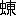

十年語り合っても理解し得ない人と人もあるし、一
玄徳と孔明とは、お互いに、一見旧知のごとき情を抱いた。いわゆる意気相許したというものであろう。
孔明は、やがて云った。
「もし将軍が、おことばの如く、真に私のような者の愚論でもおとがめなく、聴いて下さると仰っしゃるなら、いささか
「おお。ねがわくは、
と、玄徳は、
「漢室の
孔明は、いう。
「されば。――
「弱者がかえって強者を仆す。これは、天の時でしょうか。地の利にありましょうか」
「人の力――思想、経営、作戦、人望、あらゆる人の力によるところも多大です。その曹操は、いまや
「……ああ。時はすでに、去ったでしょうか」
「いや。なおここで、江南から江東地方をみる要があります。ここは
「むむ。いかにも」
「――こうみてまいると、いまや天下は、曹操と孫権とに二分されて、南北いずれへも
「おお」
「荊州の地たるや、まことに、武を養い、文を興すに足ります。四道、交通の要衝にあたり、南方とは、貿易を営むの利もあり、北方からも、よく資源を求め得るし、いわゆる天府の地ともいいましょうか。――加うるに、今、あなたにとって、またとなき


孔明は、細論して余すところなかった。かくその抱負を人に語ったのは、おそらく今日が初めてであろう。
孔明の力説するところは、平常の彼の持論たる
＝支那三分の計＝であった。
一体、わが大陸は広すぎる。故に、常にどこかで騒乱があり、一波万波をよび、全土の禍いとなる。
これを統一するは容易でない。いわんや、今日においてはである。
いま、北に曹操があり、南に孫権ありとするも、荊州、益州の
ちと、遅まきながら、起つならば、この地方しかない。
北に拠った曹操は、すなわち天の時を得たものであり、南の孫権は、地の利を占めているといえよう。将軍はよろしく人の和をもって、それに
玄徳は、思わず膝を打って、
「先生の所説を伺い、何かにわかに、雲霧をひらいて、この大陸の
この時、孔明は、童子を呼んで、
「書庫にあるあの大きな軸を持ってきて、ご覧に入れよ」と、命じた。
やがて童子は、自分の
西蜀五十四州の地図である。
それを指して、
「どうです、天地の大は」
と、孔明は世上に血まなことなっている人々の、瞳孔の小ささをわらった。
――が、玄徳は、ここに唯ひとつのためらいを抱いた。それは、
「荊州の
孔明の答は、それに対して、すこぶる明確なものだった。
「ご心配には及びません」と、彼は断じるのである。
「劉表の寿命は、早晩、おのずからつきるでしょう。かれの病はかなり篤いと、
一言のもとに、玄徳は心服して、その
「いや、よく分りました。思うに、愚夫玄徳の考えは、事ごとに、大義と小義とを、混同しているところから起るものらしい。
「総じて、みな人のもっている弱点です。将軍のみではありません」
「ねがわくは、どうか、
「いや」と、孔明は、急にことばをかえて云った。
「今日、いささか所信を述べたのは、先頃からの失礼を詫びる寸志のみです。――朝夕お側にいるわけにはゆきません。自分はやはり分を守って、ここに
「先生が起たれなければ、ついに漢の天下は絶え果てましょう。ぜひなきこと
と、玄徳は落涙した。
至誠は人をうごかさずにおかない。玄徳は天下の為に泣くのであった。その涙は一箇のためや、小さい私情に流したものではない。
「…………」
孔明は、沈思しているふうだったが、やがて唇を開くと、静かに、しかし力づよい語韻でいった。
「いや、お心のほどよく分りました。もし長くお見捨てなくば、不肖ながら、犬馬の労をとって、共に微力を国事に尽しましょう」
聞くと、玄徳は、
「えっ。では、それがしの
「何かのご縁でしょう。将軍は私にめぐり会うべく諸州をさまよい、私は将軍のお招きを
「余りにうれしくて、何やら夢のような心地がする」
玄徳は、関羽と張飛を呼んで仔細を語り、また供に持たせてきた
「主従かための
孔明は辞して受けなかったが、
「では、有難く頂きましょう」
と、家弟の
孔明は、それと共に、弟の
「たいして才能もないこの身に対して、
「はい。……その日の来るのを楽しみに、留守をしております」
均は、つつしんで、兄の旨を
その夜、玄徳は、ここに一泊し、翌る日、駒を並べて、草庵を立った。
かくて岡を降ってくると――前の夜にこの趣を供の者が新野に告げに行ったとみえて、――迎えの車が村まできていた。
玄徳は孔明とひとつ車に乗り、新野の城内へ帰る途中も、親しげに語り合っていた。
このとき孔明は二十七歳、劉備玄徳は四十七であった。
新野に帰ってからも、ふたりは寝るにも、室を共にし、食事をするにも、卓をべつにしたことがない。
昼夜、天下を論じ、人物を評し、史を
孔明が、新野の兵力をみると、わずか数千の兵しかない。財力もきわめて乏しい。そこで劉備にすすめた。
「荊州は、人口が少ないのでなく、実は戸籍にのっている人間が少ないのです。ですから、劉表にすすめて、戸簿を整理し、遊民を
また自分が、
とまれ、孔明の家がらというものは、その叔父だった人といい、また現在呉に仕えている長兄の
遠大なる「天下三分の計」なるものは、もちろん玄徳と孔明のふたりだけが胸に秘している大策で、当初はおもむろに、こうしてその内容の充実をはかりながら、北支・中支のうごき、また、江西・江南の時の流れを、きわめて慎重にながめていたのであった。
眼を転じて、南方を見よう。
呉は、その後、どういう推移と発展をとげていたろうか。
ここ数年を見較べるに――
曹操は、北方攻略という大事業をなしとげている。
玄徳のほうは、それに反して、逆境また逆境だったが、隠忍よく生きる道を見つけては、ついに孔明の出廬をうながし、孔明という人材を得た。
広大な北支の地を占めた曹操の業と、一箇の人物を野から見出した玄徳の収穫と、いずれが大きく、いずれが小さいか、この比較は、その結果を見るまでは、軽々しく即断はできない。
この間にあって、呉の発展は、あくまで文化的であり、内容の充実にあった。
何しろ、先主孫策のあとを継いで立った孫権は、まだ若かった。曹操より二十八も年下だし、玄徳とくらべても、二十二も若い当主である。
それと、南方は、天産物や交通にめぐまれているので期せずして、人と知識はここに集まった。文化、産業、ひいては軍需、政治などの機能が活溌な所以である。
時。――建安の七年頃だった。――すなわち孔明出廬のときよりさかのぼること六年前である。
美しい一艘の官船が
中央からの使者であった。
使者の一行は、呉会の
「まだご幼少にいらせられる由ですが、孫閣下のご長男を、このたび都へ召されることになりました。朝廷においてご教育申しあげ、成人の後は、官人となされたいお心からです。――もちろん帝の有難い思し召も多分にあることで」と、申し入れた。
ことばの上から見ると非常な光栄のようであるが、いうまでもなく、これは人質を求めているのである。
呉のほうでも、そこは知れきっていることだが、うやうやしく恩命を謝して、
「いずれ、一門評議のうえ、あらためて」
と、答えて、問題の延引策を取っていた。
その後も、度々、長子を
「母君。いかがしたものでしょう」
孫権はついに、老母の呉夫人の耳へも入れた。
呉夫人は、
「あなたにはもう良い臣下がたくさんあるはずです。なぜこんな時こそ、諸方の臣を招いて衆智に訊いてみないのか」と云った。
考えてみると、問題は、子ども一人のことではない。
そこで、呉会の
当時、呉下の智能はほとんど一堂に集まったといっていい。
張昭、
かの水鏡先生が、孔明と並び称して――
 統統も見えている。
統統も見えている。そのほか、
「いま曹操が、呉に人質を求めてきたのは、諸侯の例によるものである。質子を出すは、曹操に服従を誓うものであり、それを拒むことは、即敵対の表示になる。いまや呉は重大な岐路に立ち至った。いかにせばよいか、どうか、各位、
張昭が議長格として、まず席を起ち、全員へこう発言を求めた。
こもごもに起って、各自が、説くところ論じるところ、
となす者。
質子、送るべからず。
と、主張する者。
ようやく、会議は、二派にわかれ、討論果てしなく見えたが、
「
呉夫人の妹の子である周瑜は、先主
「そうだ、周瑜のことばを聞いてみよう。説きたまえ」
人々は、しばらく彼に耳をかした。
周瑜は、起立していう。
「僭越ですが、私は、
「…………」
彼の演舌を聞くのは初めての人々もあったらしく、多くは、その爽やかな弁と明白な理論に、意外な面持を見せていた。
「……しかるに、何を恐れて、いま曹操の
「……然り
「そうだ。その時だ」
述べおわって、周瑜が、席へついても、しばらくは皆、感じ合ったまま、
意見は、完全に、一致を見た。無言のうちに、ひとつになっていた。
この日、
「おまえは、孫策と同年で、一月おそく生れたばかりだから、わが子のように思われる。これからも、よく孫権を扶けて
かくて、この問題は、呉の黙殺により、そのままになってしまった。が中央の威権は、いたく傷つけられたわけである。
曹操も、以来、使いを下してこなかった。――或る重大決意を、呉に対して抱いたであろうことは想像に難くない。
宣戦せざる宣戦――無言の国交断絶状態にはいった。
が、長江の水だけは、千里を通じている。
そのうちに。
建安八年の十一月ごろ。
孫権は、出征の要に迫られた。荊州の配下、
兵船をそろえ、兵を満載して、呉軍は長江をさかのぼってゆく。
その軍容はまさに、呉にのみ見られる壮観であった。
この戦では、初め江上の船合戦で、呉軍のほうが、絶対的な優勢を示していたが、将士共に、
「黄祖の首は、もう
と、あまりに敵を見くびりすぎた結果、陸戦に移ってから、大敗を招いてしまった。
もっとも大きな
ために、士気は
それは将軍凌操の子
孫権は、いち早く、
「この
「まるで、凌統を有名にするために、戦いに行ったようなものだ」と、時の人々はいった。
翌九年の冬。
孫権の弟、
なにしろ、まだ若い上に、孫翊の性格は、短気で激越だった。おまけに非常な大酒家で、平常、何か気に入らないことがあると、部下の役人であろうと士卒であろうと、すぐ
「
「貴様がその決意ならば、俺も腕をかす」
丹陽の
 覧
覧しかし、
そこで二人は、一策を構え、呉主孫権に上申して、附近の山賊を討伐したい由を願った。
すぐ、許しが出たので、
覧はひそかに、孫翊の大将孫翊も、もちろん欠かせない会合であるから、時刻がくると、身仕度して、
「じゃあ、行ってくるぞ」と、妻の室へ声をかけた。
彼の妻は、
呉には美人が多いが、その中でも、容顔世に超えて、麗名の高かった女性である。そして、幼少から易学を好み、
この日も、良人の出るまえに、ひとり易を立てていたが、
「どうしたのでしょう。今日に限って、不吉な
しきりと、ひきとめた。
けれど孫翊は、
「ばかをいえ、男同士の会合に、そうは行かないよ。ははは」
気にもかけず出かけてしまった。
評議から酒宴となって、帰館は夜に入った。大酒家の孫翊は、
すると、その辺洪をそそのかした
覧、「主を害した逆賊め」と、辺洪を捕え、
辺洪は、仰天して、
「約束がちがう。この悪党め。張本人は、貴様たちでないか」
と、
覧の悪は、それだけに止まらない。なお、べつな野望を抱いていたのである。一方、孫翊の妻の
「もしや、易に現れたように、何か凶事があったのではないか」
と、自分の
「どうして、こんなに胸騒ぎが……？」
ふと、
「
先頭のひとりがいう。
見ると、刀を横たえた
覧兵をうしろに残して、ずかずかと十歩ばかり進んでくると、
「夫人。あなたの良人
覧があなたに代って仇を打ってあげたのだ」恩きせがましく、こういって、
「もう悲しまぬがよい。何事もこれからは、
覧がお力になってあげる。この覧にご相談あるがよい」と、腕をとらえて、彼女の室へはいろうとした。「…………」
徐氏は一時茫然としていたが、軽く、腕を払って、
「いまは、何も、ご相談を願うこともありません」
「では、また参ろう」
「人の眼もあります。月の末の――
徐氏が涙を含まないのみか、むしろ
覧は独りうなずいて、「よろしい、では、その時に」と、有頂天になって帰った。
底知れぬ悪党とは、
覧のごときをいうのだろう、彼は徐氏は、悲嘆のうちに、
そして、
「わが
覧です。覧は妾に道ならぬ不義をいどみかけている。妻になれと迫るのです。……で、虫をころして、晦日の夜に来るように約束したから、そのときは、妾の声を合図に、躍りかかって、良人の仇を刺して忠義な郎党と、彼女が見抜いて打明けた者だけに、二人は悲涙をたたえて、亡君の恨み、誓って晴らさんものと、その夜を待っていた。
覧は、やって来た。――徐氏は化粧してすこし酔うと、
「妻になれ、否か応か」
覧は、本性をあらわして、徐氏の胸へ、剣を擬して強迫した。徐氏は、ほほ笑んで、
「あなたのでしょう」と、いった。
「もちろん、俺の妻になれというのにきまっている」
「いいえ、
「げっ？ な、なんだ」
徐氏は、ふいに、彼の剣の手元をつかんで、死物狂いに絶叫した。
「良人の仇っ。――
「――応っ」
と、躍りでた二人の忠僕は、
覧のうしろから一太刀ずつあびせかけた。徐氏も奪い取った剣で敵の脾腹を突きとおした。そして初めて、「仇の片割れ」と、その首を取って主君の夫人徐氏へ献じた。
徐氏はすぐ
覧、戴員二つの首を供えて、「お怨みをはらしました。わたくしは生涯他家へは嫁ぎません」と、誓った。
この騒動はすぐ呉主孫権の耳へ聞えた。孫権は驚いて、すぐ兵を率いて、丹陽に馳せつけ、
「わが弟を討った者は、われに弓を引いたも同然である」
と、一類の者、ことごとく
また、弟の妻たる徐氏には、
「あなたの好きなように、生涯を楽しんでください」と、禄地を添えて、郷里の家へ帰した。
江東の人々は、徐氏の
「呉の名花だ」と、語りつたえ、
それから三、四年間の呉は、至極平和だったが建安十二年の冬十月、孫権の母たる呉夫人が大病にかかって、
「こんどは、どうも？」と、憂えられた。
呉夫人自身も、それを自覚したものとみえる。危篤の室へ、
「わが子の孫権は、呉の基業をうけてからまだ歳月も浅く年齢も若い。張昭と周瑜のふたりは、どうか
また、孫権にむかっては、
「そなたには、そなただけの長所もあるが、短所もある。お父上の
「ご安心ください」
孫権は、老母の手を、かろく握って、その細さにおどろいた。
「――それから張昭や、周瑜などは、良い臣ですから、呉の宝ぞと思い、平常、教えを聞くがよい。……また、わたくしの妹も、後堂にいる。いまから後は、そなたの母として、仕えなければいけません」
「……はい」
「わたくしは、幼少のとき、父母に早くわかれ、弟の
云い終ると、
枕頭をめぐる人々の
高陵の地、父の墓のかたわらに、
江南の春は芽ぐみ、朗天は日々つづく。
若い呉主孫権は、早くも衆臣をあつめて、
「黄祖を
張昭はいう。
「まだ母公の
「黄祖を伐てとは、母君のご遺言の一つであった。何で喪にかかわることがあろう」と酬いた。
いずれを採るか、孫権はまだ決しかねていた。
ところへ、
「それがし
呂蒙はまず、こう順を追って、次のように話したのである。
「――すぐ取囲んで、何者ぞと、
「むむ。……なるほど」
孫権を始め、諸将みな、重々しくうなずいた。
「甘寧といえば、黄祖の藩にその人ありと、隣国まで聞えている勇士、さるにても、憐れなることよと、それがしも仔細を聞いて、その心事を思いやり……わが君がお用いあるや否やは保証の限りではないが、有能の士とあれば、篤く養い、賢人とあれば礼を重うしてお迎えある明君なれば、ともあれ御前にお取次ぎ申すであろうと、矢を折って、誓いを示したところ、甘寧はさらに江上の船から数百人の手下を陸へ呼びあげて――否やお沙汰の下るまで慎んでお待ちおりますと――ただ今、
「時なるかな！」と、孫権は手を打ってよろこんだ。
「いま、黄祖を討つ計を議するところへ、甘寧が数百人を率いて、わが領土へ亡命してきたのは、これ潮満ちて江岸の草のそよぐにも似たり――というべきか、天の時がきたのだ。黄祖を亡ぼす前兆だ。すぐ、甘寧を呼び寄せい」
こう孫権の命をうけ、
日ならずして、甘寧は、呉会の城に伴われてきた。
孫権は、群臣をしたがえて彼を見た。
「かねて、其方の名は承知しておる。また、出国の事情も呂蒙から聞いた。この上は、ただわが呉のために、黄祖を破るの計は如何に、それを訊きたい。
孫権はまずいった。
拝礼して甘寧は答える。
「漢室の
「荊州は呉と隣接しておる。荊州の内情をふかく語ってみよ」
「
「劉表は、温良博学な風をそなえ、よく人材を養い、文化を愛育し、ために天下の賢才はみな彼の地に集まると、世上では申しているが――」
「まさにその通りです。けれどそれはもっぱら劉表の壮年時代の定評で、晩年、気は老い、身に病の多くなるにつれ、彼の長所は、彼の短所となり、優柔不断、外に大志なく、内に衰え、虚に乗じて、閨門のあらそいをめぐり、
「その荊州に入るには」
「もちろん江夏の黄祖を破るのを前提とします。黄祖は怖るるに足りません。彼もはや老齢で、時務には
「兵糧武具の備えはどうか」
「軍備は充実していますが、活用を知らず、
「よく申した。まことに金玉の論である。この機を逸してはなるまい」
孫権はすぐ
張昭は、憂えて、
「いま、兵を起し給わば、おそらく国中の虚にのって、乱が生じるでしょう。せめて母公の
甘寧は、さえぎって、
「それ故に、国家は今、
「すでにわが心は決まった。張昭も他事をいうな。一同して、盃を挙げよう」
孫権は、一言をもって、衆議を抑えた。
そして、また甘寧にむかい、
「其方をさし向けて、黄祖を討つことは、例えばこの酒の如しじゃ。一気に呑みほしてしまうがよい。もし黄祖を破ったら、その功は、汝のものであるぞ」
と、盃になみなみと酒をたたえて与えた。
かくて、周瑜を大都督に任じ、
「たいへん！」
と、江夏に急を告げ、また急を告げてゆく。
黄祖の驚きはひと通りではない。
が、――先に勝った覚えがある。
「呉人の青二才ども、何するものぞ」
 龍
龍大江の波は立ち騒いだ。
呉軍は、
 口
口守備軍は、小舟をあつめて、江岸一帯に、舟の
呉の船は、さんざん射立てられ、各船、進路を乱して逃げまどうと、水底には縦横に
「大勢、ふたたび不利か」と、一時は、
時に、甘寧は、
「いで。これからだ」と、
百余艘の早舟は、たちまち、江上に下ろされて、それに二十人、三十人と、死をものともせぬ兵が飛びのった。
波間にとどろく
或る者は、水中の張り綱を切りながし、或る者は、
「防げ」
「陸へ上げるな」
敵の小舟も、揉みに揉む。
そして、火を投げ、油をふりかけてくる。
白波は、天に
黄祖の先鋒の大将、
「残念、舟手の先陣は、破られたか。二陣、
声をからして、左右の郎党に下知しているのを、
「うごくなっ」と、近づいた。
岸へとび上がるやいな、槍をふるって突きかけた。――陳就は、あわてて、
「やっ、呉の
「気をつけろ。もう敵は
と、部下へ注意しながら逃げ惑った。
こうまで早く、敵が陸地に迫っていようとは思っていなかったらしい。呂蒙は、
「おのれ、名を惜しまぬか」と、陳就を追って、うしろから一槍を見舞い、その仆れたのを見ると、大剣を抜いて、首をあげた。
舟手の
「われこそ」と、功にはやって、
すると、呉の一将に、
そして、孫権に献じると、孫権は眼をいからして、蘇飛を睨みつけ、
「以前、わが父孫堅を殺した敵将はこいつだ。すぐ斬るのは惜しい。黄祖の首と二つ並べて、凱旋ののち父の墓を祭ろう。
と、いって、部下に預けた。
呉はここに、陸海軍とも大勝を博したので、勢いに乗って、水陸から敵の本城へ攻めよせた。
さしも長い年月、ここに、
（
と誇っていた地盤も、いまは
城下に迫ると、この土地の案内に誰よりもくわしい
「黄祖の首を、余人の手に渡しては恥辱だ」と、血まなこになっていた。
西門、南門には、味方が押しよせているが、誰もまだ東門には迫っていない。黄祖はおそらくこの道から逃げだして来るだろうと、門外数里の外に待ち伏せていた。
やがて、江夏城の上に、黒煙があがり、
すると、道の傍らから、鉄甲五、六騎ばかり、不意に黄祖の横へ喚きかかった。甘寧は先手を取られて、
「誰か？」と見ると、それは呉の宿将
程普が、きょうの戦いに、深く期して、黄祖の首を狙っていたのは当然である。
黄祖のために、むなしく遠征の途において敗死した孫堅以来、二代孫策、そしていま三代の孫権に仕えて、歴代、武勇に
「きょうこそは」と、晴れがましく、故主の復讐を祈念していたことであろう。
けれど、甘寧としても、指をくわえて見てはいられない。
出遅れたので、彼はあわてて、腰なる鉄弓をつかみとり、一矢をつがえて、ちょうッと放った。
矢は、見事に、黄祖の背を射た。――どうと黄祖が馬から落ちたのを見ると、
「射止めた！ 敵将黄祖を討った！」
と、どなりながら駆け寄って、
江夏占領の後、二人は揃って黄祖の首を孫権の前に献じた。
孫権は、首を地になげうって、
「わが父、孫堅を殺した
諸軍には、恩賞をわかち、彼も本国へひき揚げることになったが、その際、孫権は、
「甘寧の功は大きい。
すると、張昭が、「それは、策を得たものではありません」と、再考をうながして、
「この小城一つ保守するため、兵をのこしておくと、後々まで、固執せねばならなくなります。しかも長くは維持できません。――むしろ思い切りよく捨てて帰れば
と、江夏を
「至極、妙だ」
孫権も、賛成して、占領地はすべて放棄するに決し、総軍、凱歌を兵船に盛って、きれいに呉の本国へ還ってしまった。
さてまた。
凱旋の直後、孫権は父兄の墳墓へ詣って、こんどの
そして功臣と共に、その後で宴を張っていると、
「折入って、お願いがあります」と、甘寧が、彼の足もとに、ひざまずいた。
「改まって、何だ？」と、孫権が訊くと、
「てまえの寸功に恩賞を賜わるかわりとして、蘇飛の一命をお助けください。もし以前に、
と、頓首して、訴えた。
孫権も考えた。――もし蘇飛がその
しかし、彼は首を振った。
「蘇飛を助けたら、蘇飛はまた逃げて、呉へ仇をするだろう」
「いえ、決して、そんなことはさせません。この甘寧の首に誓って」
「きっとか」
「どんな
「では……汝に免じて」と、ついに蘇飛の一命はゆるすといった。
それに従って、甘寧の手引きした
するとたちまち、こういう歓宴の和気を破って、
「おのれッ、動くな」
と怒号しながら、剣を払って、席の一方から甘寧へ跳びかかってきた者がある。
「あっ、何をするかっ」
叱咤しつつ、甘寧も仰天して、前なる卓を取るやいな、さっそく相手の剣を受けて、立ち向った。
「ひかえろっ！
急場なので、左右に命じているいとまもない。孫権自身、
この乱暴者は、
そのとき凌統は、まだ十五歳の
彼の心事を聞いて、
「そちの狼藉を
主君からさとされると、凌統は剣をおいて、床にうっ伏し、
「わかりました。……けれど、お察し下さい。幼少から君のご恩を受けたことも忘れはしませんが……父を奪われた悲嘆の子の胸を。またその殺した人間を、眼の前に見ている胸中を」
頭を叩き、
「予にまかせろ」
孫権は、諸将と共に、彼をなぐさめるに骨を折った。――凌統はことしまだ二十一の若年ながら、父に従って江夏へおもむいた初陣以来、その勇名は
後。
凌統には、
凌統の宿怨を、自然に忘れさせるためである。
呉の国家は、日ましに勢いを加えてゆく。
南方の天、隆昌の気がみなぎっていた。
いま、呉の国力が、もっとも力を入れているのは、水軍の編制であった。
造船術も、ここ急激に、進歩を示した。
大船の建造は
 陽湖
陽湖孫権自身もまた、それに
陽湖に近いその頃。
玄徳は
「――はてな。一大事があるといって、
その日、玄徳は、
孔明が、すぐ明らかな判断を彼に与えた。
「お出向きなさい。――おそらく、呉に敗れた黄祖の
「劉表に対面した節は、どういう態度をとっていたがよいだろうか」
「それとなく、
張飛、孔明などを具して、玄徳はやがて、
供の兵五百と張飛を、城外に待たせておき、玄徳は孔明とふたりきりで城へ登った。
そして、劉表の階下に、拝をすると、劉表は堂に迎えて、すぐ自分のほうから、
「先ごろは襄陽の会で、貴公に不慮の難儀をかけて申しわけない。
玄徳は、微笑して、
「なんの、あのことは、
「ときに、江夏の敗れ、黄祖の戦死を、お聞き及びか」
「黄祖は、自ら滅びたのでしょう。平常心のさわがしい大将でしたから、いつかこの事あるべきです」
「呉を討たねばならんと思うが……？」
「お国が南下の姿勢をとると、北方の曹操が、すぐ虚にのって、攻め入りましょう」
「さ。……そこが難しい。……自分も近ごろは、老齢に入って、しかも多病。いかんせん、この難局に当って、あれこれ苦慮すると、昏迷してしまう。……ご辺は、漢の宗族、
「おひきうけできません。この大国、またこの難局、どうして
孔明はかたわらにあって、しきりと玄徳に眼くばせしたが、玄徳には、通じないものか、
「そんな気の弱いことを仰せられず、肉体のご健康につとめ、心をふるい起して、国治のため、さらに、良策をお立て遊ばすように」
とのみ云って、やがて、城下の旅館に退ってしまった。あとで、孔明が云った。
「なぜお引受けにならなかったのですか」
「恩をうけた人の危ういのを見て、それを自分の歓びにはできない」
「――でも、国を奪うわけではありますまいに」
「譲られるにしても、恩人の不幸は不幸。自分にはあきらかな幸い。……玄徳には忍びきれぬ」
孔明は、そっと嘆じて、
「なるほど、あなたは仁君でいらっしゃる」と、是非なげに呟いた。
そこへ、取次があった。
「荊州のご嫡子、
玄徳は驚いて出迎えた。
劉表の世子劉
が、何事があって、訪ねてきたのやら？ と。堂に迎えて、来意を訊くと、劉
は涙をうかべて告げた。「御身もよく知っておられるとおり、自分は荊州の世継ぎと生れてはいるが、
を「お察し申しあげます。――けれど、ご世子、お内輪のことは、他人が
「……でも。ほかのことなら、なんでも忍びもしようが、
「孔明。なにかよい思案はないだろうか。ご世子のために」
孔明は、冷然と、顔を横に振って答えた。
「一家の内事、われわれの知ることではありません」
「…………」
劉
は、悄然と、帰るしかなかった。玄徳は気の毒そうに送って出て、「明日、ご世子のお
翌日、玄徳は、
「きのう世子のご訪問をうけたから、
で――孔明は、劉
の館へ出向いた。すぐ帰ろうとしたが、劉が礼を篤くして、酒をすすめるので、帰ろうにも帰れなかった。酒、
「先生にお越しを賜わったついでに、ぜひご一覧に供えて、教えを仰ぎたい古書があります。重代の
彼の好学をそそって、ついに閣の上に誘った。孔明は、室を見廻して、
「書物はどこですか」と、不審顔をした。
劉
は、孔明の足もとに、ひざまずいて、涙をたれながら百拝していた。「先生、おゆるし下さい。あなたをここへ上げたのは、きのうおたずね致した自分の危難を救っていただきたいからです。どうか、死をまぬがれる良計をお聞かせ下さい」
「知らん」
「そんなことを仰っしゃらずに」
「なんで、他家の家庭の内事に立ち入ろう。そんな策は持ち合わせません」
「あ？ ……ご世子には、孔明をたばかられたな」
「先生をおいては、この世に、訊く人がありません。
「いくらお訊ねあろうと、ない策は教えられません。難をのがれ、身の生命を
「では、どうしても、先生のお教えは乞えませんか」
「
「ぜひもございません」
は、ふいに剣を抜いて、自分の手で自分の孔明は、急に、押しとどめて、
「お待ちなさい」
「離してください」
「いや、良計を教えましょう。それほどまでのご心底なら」
「えっ、ほんとですか」
は、剣をおいて、孔明の前にひれ伏し、急に眼をかがやかした。孔明は、ねんごろに話した。
「むかし、春秋の時代に
例話をひいて、
は、全身を耳にして熱心に聞いていた。「――ところが、やがて献公の第二夫人の
「その申生は、さながら、私のいまの境遇とよく似ております」
「――で、驪姫は、春あたたかな一日、献公を楼上に迎えて、簾のうちから春園の景をうかがわせ、自分はひそかに、
「ああ。……
「一策が成功すると、驪姫の悪は勇気づいて、また一つの悪策をたくらみました。
「ああ、そして弟の
「次には、わが身へくる禍いと重耳は未然に知りましたから、他国へ走って、身をかくしました。そして十九年後、初めて世に出た
「先生。ありがとう存じます。
は、にわかになお、生きてゆかれる気がしてきました」彼は、幾度も拝謝して、手を鳴らして家臣を呼び、降り口に梯子をかけさせて、孔明を送り出した。
孔明は立ち帰って、このことを、ありのままに、玄徳に告げると、玄徳も、
「それは良計であった」と、共に歓んでいた。
間もなくまた、荊州から迎えの使いが来た。玄徳が登城してみると、劉表はこう相談を向けた。
「嫡男の
が、なにを思い出したか、急に、江夏の守りにやってくれと申すのじゃ、どういうものであろうか」「至極、結構ではありませんか、お膝もとを離れて、遠くへ行くことは、よいご修行にもなりましょうし、また、江夏は呉との境でもあり、重要な地ですから、どなたかご近親をひとり置かれることは、荊州全体の士気にもよいことと思われます」
「そうかなあ」
「総じて、東南の防ぎは、
「……むむ。聞けば近ごろ、曹操も
「どうか、ご安心下さい」
玄徳は新野へ帰った。
この当時である。
（事あれば、いつでも）という、いわゆる臨戦態勢をととのえていた。


その
やはり軍部に重きをなしているのは依然、
一日、南方の形勢について、軍議のあった時、その夏侯惇は、進んでこう献議した。
「いま劉玄徳は、新野にあって、孔明を師となし、しきりに兵馬を調練しておるとか、捨ておいては後日の大患。まず、この邪魔石を取りのぞいて、しかる後、次の大計にのぞむのが順序でしょう」
諸大将のうちには、異論を抱くらしい顔色も見えたが、曹操がすぐ、
「その儀、よろしかろう」といったので、即座に、玄徳討伐のことは、決定を見てしまった。
すなわち、夏侯惇を総軍の都督とし、
その間に、

「――
夏侯惇は、そばで笑った。
「玄徳、孔明など、いずれも定まった領地もない
「いやいや、将軍、決して玄徳は
ふいに、横あいから、荀
に加勢していった者がある。見ると、先頃まで新野にいて親しく玄徳の近況を知っている「おお、徐庶か――」と、曹操は彼の存在を見出して急にたずねた。
「新たに、玄徳の軍師となった孔明とは、そも、どんな人物か」
「
「其方と較べれば……？」
「それがしなどは、較べものになりません。それがしを蛍とすれば孔明は月のようなものでしょう」
「それほどか」
「いかで彼に及びましょう」
すると、夏侯惇は、徐庶のことばを叱って、さらに、大言した。
「孔明も人間は人間であろう。そう大きな違いがあってたまるものではない。総じて、凡人と非凡人との差も、紙一重というくらいなものだ。この夏侯惇の眼から見れば若輩孔明のごときは、
曹操は、彼のことばを壮なりとして、欣然、出陣の日は、自身、府門に馬を立てて、十万の将士を見送った。
一方。
「若輩の孔明を、譜代の臣の上席にすえ、それに師礼をとらるるのみか、主君には、彼と起居を共にし、寝ては
「いったいあの孔明に、どれほどな才があるのですか。
「否、否」
玄徳は、ふっくらと笑いをふくんで、
「わしが、孔明を得たことは、魚が水を得たようなものだ」と、いった。
張飛は、不快きわまる如き顔をして、その後は、孔明のすがたを見かけると、
「水が来た。水が流れてゆく」
などと
まことに、孔明は水の如くであった。城中にいても、いるのかいないのか分らない、常に物静かである。
或る時、彼はふと、玄徳の結髪を見て、その静かな眉をひそめ、
「何ですか、それは」と、訊ねた。
玄徳には一種の容態を
「これか。……これは
「よくお似合いになります。――が、悲しいではありませんか」
「なぜ」
「婦女子の如く、容姿の好みを遊ばして、それがなんとなりますか。君には大志がないしるしです」
孔明がやや色をなしてそう
「なんで、本心でこんな真似をしよう。一時の
孔明は、なおいった。
「君と劉表とを比べてみたらどうでしょう？」
「自分は劉表に及ばない」
「曹操と比べては」
「及ばぬことさらに遠い」
「すでに、わが君には、この二人にも及ばないのに、ここに抱えている兵力はわずか数千に過ぎますまい。もし曹操が、明日にでも攻めてきたら、何をもって防ぎますか」
「……それ故に、わしは常に憂いておる」
「憂いは単なる憂いにとどめていてはなにもなりません。実策を講じなければ」
「乞う、善策を示したまえ」
「明日から、かかりましょう」
孔明はかねてから
次の日から、彼はみずから教官となって、三千余人の農民兵を調練しはじめた。
ふた月も経つと、三千の農兵は、よく節を守り、孔明の手足のごとく動くようになった。
かかる折に、果たして、夏侯惇を大将とする十万の兵が、新野討滅を名として、南下してくるとの沙汰が聞えてきたのである。
「十万の大兵とある。如何にして防ぐがよいか」
玄徳は恐怖して、関羽、張飛のふたりへもらした。すると張飛は、
「たいへんな野火ですな。水を向けて消したらいいでしょう」
と、こんな時とばかり、苦々しげに
「智は孔明をたのみ、勇は二人の力にたのむぞ。よいか。くれぐれも」
張飛と関羽が退がって行くと、玄徳はまた孔明を呼んで、同じように、この急場に処する対策を依嘱した。
「ご心配は無用です」
孔明はまずそういってから、
「――ただ、この際の憂いは、外よりも内にあります。おそらくは関羽、張飛のふたりが私の命に伏しますまい。軍令が行われなければ、敗れることは必然でしょう」
「実に困ったものだ。それにはどうしたらいいだろう」
「おそれながら、わが君の剣と印とを孔明にお貸しください」
「
「諸将をお召しください」
孔明の手に、剣と印を授けて、玄徳は諸将を呼んだ。
孔明は、軍師座に腰をすえ、玄徳は中央の
「ここ新野を去る九十里外に、
 ここを戦場と心得られよ」と、まず地の理を指摘して、「――関羽は千五百をひきいて予山にひそみ、敵軍の通過、半ばなるとき、後陣を討って、敵の
ここを戦場と心得られよ」と、まず地の理を指摘して、「――関羽は千五百をひきいて予山にひそみ、敵軍の通過、半ばなるとき、後陣を討って、敵の次に、趙雲を指命して、
「ご辺には先手を命じる」と、いった。
趙雲が、よろこび勇むと、孔明はたしなめて、
「ただし、一箇の功名は、きっと慎み、ただ
そのほか、すべての手分けを彼が命じ終ると、張飛は待っていたように、いきなり孔明へ向って大声でいった。
「いや、軍師のおさしず、いちいちよく相分った。ところで一応伺っておきたいが、軍師自身は、いずれの方面に向い給うか」
「わが君には、一軍をひきい、先手の趙雲と、首尾のかたちをとって、すなわち敵の進路に立ちふさがる――」
「だまれ、わが君のことではない。ご辺みずからは、どこで合戦をする覚悟かと訊いておるのだ」
「かく申す孔明は、ここにあって新野を守る」
張飛は、大口あいて、不遠慮に笑いながら、
「わははは、あははは。さてこそさてこそ、この者の智慧のほどこそ知られけり――だ、聞いたか、方々」と、手をうって、
「主君をはじめ、われわれにも、遠く本城を出て戦えと命じながら自分は新野を守るといっておる、――安坐して、おのれの無事だけを守ろうとは……うわ、は、は、は。笑えや、各
」孔明は、その爆笑を一
「剣印ここにあるを、見ぬか。命にそむく者は、斬るぞっ。軍紀をみだす者も同じである！」
眸は、張飛を射すくめた。奮然張飛は反抗しかけたが、玄徳になだめられて、
表面、命令に従って、それぞれ前線へ向っては行ったが、内心、孔明の指揮をあやぶんでいたのは関羽、張飛だけではなかった。
関羽なども、張飛をなだめていたが、
「とにかく、孔明の
と、いった程度であった。
時、建安十三年の秋七月という。
土地の案内者をよんで、所の名をたずねると、
「うしろは
兵糧
そしてまず、軽騎の将数十をつれて、敵の陣容を一
「ははあ。あれか。わははは」と、夏侯惇は、馬上で大いに笑った。
「何がそんなにおかしいので」と、諸将がたずねると、
「さきに
と、なお笑いやまず、自分が曹操の前で、玄徳と孔明を生捕って見せると大言したことも、これを見れば、もう
すでに敵を呑んだ夏侯惇は、先手の兵にむかって、一気に衝き崩せと号令をかけ、自身も一陣に馳けだした。
時に、趙雲もまた彼方から馬を飛ばして、夏侯惇のほうへ向ってきた。夏侯惇は、大音をあげていう。
「
「何をっ」
趙雲は、まっしぐらに、鎗を舞わしてかかってくる。丁々十
「待てっ、
護軍
「深入りは危険です。趙雲の逃げぶりを見ると、取って返して誘い、誘ってはまた逃げだす様子、伏兵があるにちがいありません」
「何を、ばかな」
夏侯惇は一笑に付して、
「伏勢があれば伏勢を蹴ちらすまでだ、これしきの敵、たとえ十面
かくて、いつか彼は博望の
すると果たして、鉄砲のとどろきと共に、金鼓の声、矢風の音が鳴りはためいた。旗を見れば玄徳の一陣である。夏侯惇は大いに笑って、
「これがすなわち、敵の伏勢というものだろう。小ざかしき虫けらども、いでひと破りに」
と、云い放って、その奮迅に拍車をかけた。
気負いぬいた彼の
玄徳は一軍を率いて、力闘につとめたが、もとより孔明から授けられた計のあること、防ぎかねた態をして、たちまち趙雲とひとつになって
いつか陽は没して、霧のような
「おうーいっ、
うしろで呼ばわる声に、馬に鞭打って先へ急いでいた于禁は、
「李典か。何事だ」と、大汗を拭いながら振向いた。
李典も、あえぎあえぎ、追いついてきて、
「夏侯都督には、如何なされたか」
「気早の御大将、何かは
「危ういぞ。図に乗っては」
「どうして」
「あまりに盲進しすぎる」
「蹴ちらすに足らぬ敵勢、こう進路のはかどるのは、味方の強いばかりでなく、敵が微弱すぎるのだ。それを、何とて、びくびくするのか」
「いや、びくびくはせぬが、兵法の初学にも――難道行くに従って狭く、山川相せまって草木の茂れるは、敵に火計ありとして備うべし――。ふと、それを今、ここで思い出したのだ」
「むむ。そういわれてみると、この辺の地勢は……それに当っている」
と、于禁も急に足をすくめた。
彼は、多くの兵を、押しとどめて、李典にいった。
「ご辺はここに、後陣を固め、しばらく四方に備えてい給え。……どうも少し地勢が怪しい。拙者は大将に追いついて、自重するよう報じてくる」
于禁は、ひとり馬を飛ばし、ようやく夏侯惇に追いついた。そして李典のことばをそのまま伝えると、彼もにわかにさとったものか、
「しまったっ。少し深入りしたかたちがある。なぜもっと早くいわなかったのだ」
そのとき――一陣の殺気というか、兵気というものか、多年、戦場を往来していた夏侯惇なので、なにか、ぞくと総身の毛あなのよだつようなものに襲われた。
「――それっ、引っ返せ」
馬を立て直しているまもない。四山の沢べりや峰の樹かげ樹かげに、チラチラと火の粉が光った。
すると、たちまち真っ黒な狂風を誘って、火は万山の
「伏兵だっ」
「火攻め！」
と、道にうろたえだした人馬が、互いに踏み合い転げあって、
「夏侯惇は、いずれにあるか。昼の大言は、置き忘れてきたか」
さしもの夏侯惇も、
「馬に頼るな。馬を捨てて、水に従って逃げ落ちよ」
と、味方に教えながら、自身も徒歩となって、身一つを遁れだすのがようやくであった。
後陣にいた李典は、
「さてこそ」
と前方の火光を見て、急に救いに出ようとしたが、突如、前に関羽の一軍があって道をふさぎ、退いて、博望坡の兵糧隊を守ろうとすれば、そこにはすでに、玄徳の
「火の網の中にある敵、一匹ものがすな」と、後方から挟撃してきた。
討たるる者、焼け死ぬ者、数知れなかった。夏侯惇、于禁、李典などの諸将は輜重の車まで焼かれたのをながめて、
「もう、いかん」と、峰越しに逃げのびたが、夏侯蘭は張飛に出会って、その首を掻かれ、護軍
戦は暁になってやんだ。
山は焼け、
「敵の死骸は、三万をこえている。この分では無事に逃げた兵は、半分もないだろう」
「まず、全滅に近い」
「
「それもあるが……」と、関羽は口をにごらしながら、駒を並べている張飛の顔を見て云った。
「この作戦は、一に孔明の指揮に出たものであるから、彼の功は否みがたい」
「むむ。……
張飛はなお幾らかの負け惜しみを残していたが、内心では、孔明の智謀を認めないわけにはゆかなかった。
やがて、戦場をうしろに、新野のほうへ引きあげて行くと、彼方から一輌の車をおし、
「誰か？」
と見れば、車のうえには悠然として軍師孔明。――前駆の二大将は
「オオ、これは」
「軍師か」
威光というものは争えない。関羽と張飛はそれを見ると、理屈なしに馬をおりてしまった。そして車の前に拝伏し、夜来の
「わが君の御徳と、各
の忠誠なる武勇によるところ。同慶の至りである。」孔明は車上から鷹揚にそういって、大将たちをねぎらった。自分よりはるかに年上な猛将たちを眼の下に見て、そういえるだけでも、年まだ二十八歳の弱冠とは見えなかった。
やがて、またここへ、
の兵をまとめて集まった。関羽の養子関平は、敵の兵糧車七十余輛を分捕って、初陣の意気軒昂たるものがあった。
さらに、白馬にまたがった玄徳のすがたが、これへ見えると、諸軍声をあわせて、
「ご無事で」
「めでたく」
「しかも、大捷を占めてのご帰城――」と、人々はよろこび勇んで、新野へ凱旋した。旗幡
「この土地が、敵の
しかし孔明は誇らなかった。
城中に入って、数日の後、玄徳が彼に向って、あらゆる歓びと称讃を呈しても、
「いやいや、まだ決して、安心はなりません」と、眉をひらく風もなかった。
「いま、夏侯惇の十万騎は、残り少なに討ちなされて、ここしばらくは急もありますまいが、必定、この次には、曹操自身が攻め下って来るでしょう。味方の安危如何はその時かと思われます」
「曹操がみずから攻めてくるようだったら、それは容易ならぬことになる。北方の
「かならず参ります。故に、備えておかなければなりますまい。それにはこの新野は領堺も狭く、しかも城の要害は薄弱で、たのむには足りません」
「でも、新野を退いては」
「新野を退いて拠るべき堅固は……」
と、孔明は云いかけて、そっとあたりを見まわした。
「ここに一計がないでもありません」
と、孔明は声をはばかって、ささやいた。
「国主の
玄徳は顔を横に振った。
「それは良計には違いなかろうが、わしの今日あるは、劉表の恩である。恩人の危うきにつけこんで、その国を奪うようなことは忍び得ない」
「このさい小乗的なお考えは捨て、大義に生きねばなりますまい。いま荊州を取っておかなければ、後日になって悔ゆるとも及びませぬ」
「でも、情にもとり、義に欠けるようなことは」
「かくいううちにも、曹操の大軍が襲来いたしたなら、何となさいますか」
「いかなる禍いにあおうと、忘恩の徒と
「ああ。まことに君は仁者でいらせられる！」
それ以上、強いることばも、
さてまた夏侯惇は、口ほどもない大敗を喫して、命からがら都へ逃げ上り、みずから面縛して――死を待つ意味で罪人のように眼隠しをほどこし――
（面目なくて会わせる顔もありません）といわぬばかりな姿である。
曹操は出座して、それを見ると苦笑した。
「あれを解いてやれ」と、左右の者へ顎でいいつけ、
夏侯惇は、庁上に
「何よりの失策は、敵に火計のあることをさとらず、
「幼少より兵学を習い、今日まで幾多の戦場を往来しながら、狭道には必ず火攻めのあることぐらい気づかないで軍の指揮ができるか」
「今さら、何の言い訳もございません。
「于禁には大将軍たる才識がある。汝も元来の凡将ではない筈。この後の機会に、今日の恥をそそぐがよい」と叱ったのみで、深くも咎めなかった。
その年の七月下旬。
曹操は八十余万の大軍を催し、先鋒を四軍団にわかち、中軍に五部門を備え、後続、遊軍、
「北国征略のときすら、こんな大軍ではありませんでした。かかる大動員をもって大戦にのぞまれなば、おそらく
「だまれ。晴れの門出に」
曹操は叱って、「なお申さば、斬るぞ」と、一
「不仁を以て仁を
と、嘆いて帰った。
附近にたたずんでいた
そして、
そんな小人の舌に乗せられるほど曹操は甘い主君では決してない。けれど、どんな人物でも、大きな組織のうえに君臨していわゆる王者の心理となると、立志時代の克己や反省も薄らいでくるものとみえる。人間通有の凡小な感情は、抑えてのないまま、かえって普通人以上、露骨に出てくる。
無能な小人輩は、甘言と
「どうも
「――いつでしたか、丞相が禁酒の法令を発しられましたときも、孔融は笑って、天に酒旗の星あり、地に酒郡あり、人に
「…………」
「また。あの孔融はですね。ずっと以前ですが、朝廷の
「…………」
「いえ、まだまだ、それのみではありません。彼は荊州の劉表とは、ずいぶん以前から音信を交わしております。また玄徳とは、わけても
「…………」
かなり長いあいだしゃべらせておいた。曹操は一語も発せずにいたが、非常にいやな顔つきをしていた。そして聞くだけ聞き終るといきなり、
「うるさい、あっちへ行け」
と、
さすがに、
たちまち
「すぐ行け」と、何かいいつけた。
廷尉は、一隊の武士と捕吏をひきつれ、不意に
孔融は、なんの抵抗をするまもなく、召捕られた。
召使いのひとりが奥へ走って、
「たッ、大変ですっ。ご父君にはいま、廷尉に捕縛されて、市へひかれて行きました！」
と、そこにいる孔融の息子たちへ、
二人の息子は、碁を囲んで遊んでいたが、すこしも驚かず、
「――巣すでに破れて、卵の破れざるものあらんか」
と、なお
もちろん、たちまち踏みこんできた捕吏や武士の手にかかって、兄弟とも斬られてしまった。
邸は炎とされ、父子一族の首は市に
「どうも、困ったものです」と、苦々しげに云ったきりで、いつもの如く、曹操へ諫言はしなかった。諫言も間に合わないし、また無言でいるのも、一つの諫言になるからであろう。
曹操みずから、許都の大軍をひきいて南下すると、
「御身と予とは、漢室の同宗、親身の弟とも思うているのに……」
病室に玄徳を招いて、彼は、きれぎれな
「予の亡い後、この国を、御身が譲りうけたとて、誰が怪しもう。奪ったなどといおう。……いや、いわせぬように、予が遺言状をしたためておく」
玄徳は、
「せっかくの尊命ですが、あなたにはお子達がいらっしゃいます。なんで私がお国を継ぐ必要などありましょう」
「いや、その
遺言にひとしい切実な頼みであったが、玄徳はどうしても受けなかった。
孔明は後にその由を聞いて、
「あなたの律義は、かえって、荊州の禍いを大にしましょう」と、痛嘆した。
その後、劉表の病は
「いかにして、
君――とも知らず、劉表の長男劉
は、父の危篤を聞いて、遠く江夏の任地から急いで荊州へ帰ってきた。そして旅舎にも
「父の
なるぞ。城門の者、番の者、ここを開けい。通してくれよ」すると、門の内から蔡瑁は声高に答えた。
「父君のご命をうけて、国境の守りに赴かれながら、無断に江夏の要地をすてて、ご帰国とは心得ぬお振舞い。いったい誰のゆるしをうけてこれに来られたか。軍務の任の重きことをお忘れあったか。たとえご嫡子たりともここをお通しするわけには参らん。――
「その声は、
「ならぬ！」と、伯父の
「病人にせよ、会えばお怒りときまっている。病を重らすだけのことだ。さすれば孝道にも背くことに相成ろう。不孝をするため、わざわざ来られたわけでもあるまい！」
劉
はややしばらく門外にたたずんで秋八月の
蔡夫人、
＝
と
蔡夫人の生んだ二男劉
は、その時まだ十四歳であったが、非常に聡明な質だったので、宿将幕官のいるところで、或る折、「
と、質問しだしたので、蔡夫人も蔡瑁も、顔いろを変えてあわてた。
すると、末席にいた
「おう若君、よくぞ仰せられました。
君蔡瑁は、
「みだりに舌をうごかして、故君のご遺言を
李珪は悪びれずになおも、
「国政にあずかる首脳部の方々からして、順をみだし、法をやぶり、何とて他国の侵攻を防ぎ得ましょうや。この国の亡ぶは眼に見えている」と、叫んでやまなかったが、とたんに蔡瑁が抜き払った剣の下に、あわれその首は斬り落されていた。
死屍は
蔡夫人は、劉
を守護して、軍政の大本営を襄陽城に移した。時すでに、曹操の大軍は刻々南下して、
「はや
とさえ聞えてきたのである。
幼主と蔡夫人を主座に仰ぎ、蔡瑁、
 越
越「一戦いなみ難し」とする軍の主戦論は、濃厚であったが、文官側になお異論が多い。
「三つの弱点がある」と、国内の不備をかぞえて、非戦論を主張した。
その一は、江夏の劉
が、国主の兄でありながら、まったく二には、玄徳の存在である。しかも玄徳のいる新野は、この襄陽と
三つには、故太守の歿後、まだ日も経っていないので、諸臣の不一致、内政の改革、あらゆる備えが、まだ
「その説に自分も同感である。自分をもっていわせれば、さらに三つの不利がある」
と、続いて
一、中国百万の軍は、朝廷をひかえ、抗するものは、
一、曹操は
一、たとえ玄徳をたのみとするも、玄徳のふせぎ得る曹操ではない。もしまた、曹操に当り得るほどな実力を彼に附与すれば、なんで玄徳が、わが君の
結局、降服の道しかなかった。即ち、和を乞うの書をたずさえて、襄陽の使いは南進中の曹操の軍へ、急遽派遣されたのであった。
百万の軍旅は、いま河南の
そこへ、荊州から降参の使いとして、宋忠の一行が着いた。
宋忠は、宛城の中で、曹操に謁して、降参の書を奉呈した。
「
曹操は大満足である。
こう使いを賞めて、「劉
をに会って、その折、なお親しく語ることもあろう」と、いった。宋忠は、衣服鞍馬を拝領して、首尾よく荊州へ帰って行った。
その途中である。
江を渡って、渡船場から上がってくると、一隊の人馬が馳けてきた。
「何者だっ、止れっ」
と、
「しまった」
と思ったが、逃げるにも逃げきれない。宋忠は彼の訊問にありのままを答えるしかなかった。
「何。降参の書をたずさえて、曹操の陣へ使いした帰りだと申すか？」
関羽は、初耳なので、驚きに打たれた。
「これは、自分だけが、聞き流しにしているわけには参らぬ」
有無をいわせず、後は、宋忠を引ッさげて、新野へ馳けた。
新野の内部でも、この政治的な事実は、いま初めて知ったことなので、驚愕はいうまでもない。
わけて、玄徳は、
「何たることか！」
と、悲涙にむせんで、
激しやすい張飛のごときは、
「宋忠の首を刎ねて血祭りとなし、ただちに兵をもって荊州を攻め取ってしまえ。さすれば無言のうちに、曹操へやった降参の書は抹殺され、無効になってしまう」
と、わめきちらして、いやが上にも、諸人を動揺させた。
宋忠は生きた心地もなく、おどおどして、城中にみなぎる悲憤の光景をながめていたが、
「今となって、汝の首を
と、玄徳は彼をゆるして、城外へ放ってやった。
ところへ、荊州の
伊籍は、
をさしおいて、弟の劉を国主に立てたことを痛憤して、その「その憂いを抱くものは、あなたばかりでありません」と、玄徳はなだめて後、
「――しかも、まだまだあなたの憂いはかろい。あなたのご存じなのは、それだけであろうが、もっと痛心に耐えないことが起っている」
「何です？ これ以上、痛心にたえないこととは」
「故太守が亡くなられて、まだ墳墓の土も乾かないうち、この荊州九郡をそっくり挙げて、曹操へ降参の書を呈したという一事です」
「えっ、ほんとですか」
「偽りはありません」
「それが事実なら、なぜ貴君には、直ちに、
をこちらへ、奪い取り、蔡瑁、蔡夫人などの日頃、温厚な伊籍すら、色をなして、玄徳をそう
孔明も共にすすめた。
「伊籍のことばに、私も同意します。今こそご決断の時でしょう」
しかし玄徳は、ただ涙を垂るるのみで、やがてそれにこう答えた。
「いやいや臨終の折に、あのように
孔明は、舌打ちして、
「いまにして、荊州も取り給わず
「ぜひもない……」と、玄徳は独りでそこに考えをきめてしまっているもののように――
「この上は新野を捨てて、
ところへ、早馬が来て、城内へ告げた。曹操の大軍百万の先鋒はすでに
伊籍は倉皇と帰ってゆく。城中はすでにただならぬ非常時色に塗りつぶされた。
「とまれ、孔明あるからには、
玄徳をなぐさめて、孔明はただちに、諸将へ指令した。
「まず、防戦の第一着手に、城下の四門に
「
孔明は、諸将の顔を見わたしながら、ここでちょっと、ことばを休め、関羽の
「――明日の夜三更の頃、白河の
孔明のひとみは、関羽から張飛の面へ移って云いつける。張飛はらんとした眼をかがやかして、大きくそれへうなずく。
「
孔明が、名を呼んだ。
諸将のあいだから、趙雲は、おうっと答えながら、一歩前へ出た。
「ご辺には、兵三千を授ける」
孔明はおごそかにいって、
「――乾燥した、柴、
あらましの指令は終った。命をうけた諸将は勇躍して立ち去ったが、なお
「二人には、これを」と孔明は、特に近く呼んで、
曹操はなおその総軍司令部を

一応、そこで兵馬を休ませたのが、
案内者を呼びつけて、
「これから新野まで何里か」と、訊くと、
「三十余里です」と、いう。
「土地の名は」と、いえば、
「
そのうちに、偵察に行った数十騎が、引返してきていうには、
「これからやや少し先へ行くと、山に拠り、峰に沿って陣を取っている敵があります。われわれの影を見るや、一方の山では、青い旗を打ち振り、一方の峰では、紅の旗をもってそれに答え、呼応の形を示す有様、何やら充分、備えている態がうかがわれます。どうもその兵力のほどは察しきれませんが……」
「あ。あれだな」
凝視していると、また、後ろの山の肩で、しきりに青い旗を打ち振っているのが見える。何さま信号でも交わしている様子である。許
は迷った。山気は
は、味方の者に、「決して手出しするな」と、かたく戒め、ひとり駒を引返して、曹仁に告げ、指令を仰いだ。
曹仁は一笑に付して、
「きょうの進撃は、このたびの序戦ゆえ、誰も大事を取るであろうが、それにしても、常の貴公らしくもない二の足ではないか。兵に虚実あり、実と見せて虚、虚と見せて実。いま聞く紅旗青旗のことなども、見よがしに、敵の打ち振るのは、すなわち、我をして疑わしめんがためにちがいない。何のためらうことがあろう」と、いった。
許
は、ふたたび「今に。……やがて？」と、一歩一歩、敵の伏兵を警戒しながら、緊張をつづけて進んだが、防ぎに出る敵も支えに立つ敵も現れなかった。
こうなると、張合いのないよりは一層、無気味な気抜けに襲われた。陽はいつか西山に沈み、山ふところは暗く、東の峰の一方が夕月にほの明るかった。
「やっ？ ……あの音は」
三千余騎の
月は見えないが水のように空は澄みきっていた。
「はてな？」
怪しんでなおよく見ると、峰の頂上に、やや平らな所があり、そこに一群の
「やあ、憎ッくき敵の応対かな。おのれひと揉みに」
一
許
も、これはたまらないと、あわてて兵を退いた。そして、ほかの攻め口を尋ねた。彼方の峰、こなたの山、
「
はいたずらに、敵の所在を考え迷った。そのうちに曹仁、曹洪などの本軍もこれへ来た。曹仁は叱咤して、
「児戯に類する敵の作戦だ。
と、
「どうだ、この街の
曹仁は、自分の達見を誇った。城下にも街にも敵影は見あたらない。のみならず百姓も商家もすべての家はガラ空きである。老幼男女はもとより
「いかさま、百計尽きて、玄徳と孔明は将士や領民を引きつれて、いち早く逃げのびてしまったものと思われる。――さてさて逃げ足のきれいさよ」と曹洪や許
も笑った。「追いかけて、
「やすめ」の令を、全軍につたえた。
その頃から風がつのりだして、暗黒の街中は
すると、番の軍卒が、
「火事、火事」
と、外で騒ぎ立ててきた。部将たちが、杯をおいて、あわてかけるのを、曹仁は押し止めて、
「兵卒どもが、飯を
ところが、外の騒ぎは、いつまでもやまない。西、北、南の三門はすでにことごとく火の海だという。追々、炎の音、人馬の跫音など、ただならぬものが身近に迫ってきた。
「あっ、敵だっ」
「敵の火攻めだっ」
部将のさけびに曹洪、曹仁も
城中はもうもうと黒煙につつまれている。馬よ、
さらに、火は風をよび、風は火をよび、四方八面、炎と化したかと思うと、城頭にそびえている三層の殿楼やそれにつらなる高閣など、一度に
わあっと、声をあげて、西門へ逃げれば西門も火。南門へ走れば南門も火。こはたまらじと、北門へなだれを打ってゆけば、そこも大地まで燃えさかっている。
「東の門には、火がないぞ」
誰いうとなく
曹仁、曹洪らは、辛くも火中を脱したが、道に待っていた趙雲にはばまれて、さんざんに打ちのめされ、あわてて後へ戻ると、
「これは？」と仰天して、白河のあたりまで逃げ去り、ほっと一息つきながら、馬にも水を飼い、将士も争って、河の水を口へすくいかけていたが、――かねて上流に埋伏していた関羽の一隊は、その時、遠く兵馬のいななきを耳にして、
「今だ！」
と、孔明の計を奉じて、
渦まく水、山のような
「曹軍の残兵ども、どこへ落ちてゆくつもりだ。
ここでもまた、潰滅をうけて、屍山血河を作った。曹仁の身もすでに危うかったが、
張飛は、大魚を逸したが、
「ああ愉快、久しぶりで胸がすいたぞ。これくらい叩きのめせば、まずよかろう」
と、兵を収めて江岸をのぼり、かねてしめし合わせてある玄徳や孔明と一手になった。
そこには
玄徳以下の全軍が対岸へ渡り終ったころ、夜は白みかけていた。
孔明は、命を下して、
「船をみな焼き捨てろ」と、いった。
そして、無事、
この大敗北は、やがて
「
すでに彼の大軍は彼の命を奉じて、
「
「それなら一体誰を、玄徳のところへ使いにやるか」
ということになお考えを残しているふうだった。
劉曄は一言のもとに、
「それは、
ばかをいえ――といわぬばかりに曹操は劉曄の顔をしり目に見て、
「あれを玄徳のもとへやったら、再び帰ってくるものか」
と、唇をむすんで、大きく鼻から息をした。
「いやいや、玄徳と徐庶との交情は、天下周知のことですが、それ故に、もし徐庶がご信頼を裏切って、この使いから帰らなかったりなどしたら、天下の物笑いになります。彼以外に、この使いの適任者はありません」
「なるほど、それも一理だな」
彼はすぐ幕下の群将のうちから、徐庶を呼びだして、おごそかに、軍の大命をさずけた。
「なに、曹操の使いとして、徐庶が見えたと」
玄徳は、旧情を呼び起した。孔明と共に、堂へ迎え、
「かかる日に、ご辺と再会しようとは」と嘆じた。
語りあえば、
「今日、それがしを向けて、あなたに
と、すぐ
「逆境また逆境、さだめし今のお立場はご不安でしょう。しかし以前と事ちがい、唯今では、君側の人に、
徐庶が帰って、曹操に返辞をするまでのあいだに、玄徳は、ふたたび、城を捨て、ほかに安らかな地を求めなければならなかった。
せっかく
（民を戦禍に投じたものは玄徳である）
と、罪を相手になすって百万の軍にぞんぶんな
「
孔明のすすめに、もちろん、玄徳は異議もなかったが、
「自分を慕って、自分と共に、ここへ避難している無数の百姓たちをどうしよう」
と、領民の処置を案じて、決しきれない容子だった。
「君をお慕い申し上げて、君の落ち行く先なら、何処までとついて来る可憐な百姓どもです。たとえ足手まといになろうと、引き具してお移りあるべきでございましょう」
孔明のことばに、玄徳も、
「さらば――」と、関羽に渡江の準備を命じた。
関羽は、江頭に舟をそろえ、さて数万の百姓をあつめて、
「われらと共に、ゆかんとする者は江を渡れ。あとに残ろうと思う者は、去って旧地の田を耕すがいい」と、云い渡した。
すると、百姓老幼、みな声をそろえて、共に
「これから先、たとえ山を
そこで関羽は、
玄徳も、舟に移って、渡江しにかかったが、折もあれ、この方面へ
「すわや、敵が」と聞くなり岸に群れ惑う者、舟の中に
「あわれや、
と、玄徳はそれを眺めて、身悶えしていたが、突然、
左右の人々はおどろいて玄徳を抱きとめた。
「死は
と、人々に嘆き
関羽は、逃げおくれた百姓の群れを
襄陽の城には、先頃から幼国主
「
すると、答えはなくて、たちまち多くの射手が矢倉の上に現われて矢を酬いた。
玄徳につき従う数万の百姓群の上に、その矢は雨の如く落ちてくる。悲鳴、
ところが、これを城中から見てあまりにもその無情なる処置に義憤を発した大将があった。姓は
「
「裏切り者を討て」と命じた。
時すでに、魏延は部下をひきいて、城門のほうへ殺到し、番兵を蹴ちらして、あわや
「
と、叫んでいる様子に、張允、
城外にいた張飛、関羽たちは、すぐさま馬を打って駆け入ろうとしたが、城中の空気、
「待て、しばし」と急に押し止め、
「孔明、孔明。ここの進退は、どうしたらいいか」と、訊ねた。
孔明は、うしろから即答した。
「凶血が煙っています。おそらく同士打ちを起しているのでしょう。しかし、入るべからずです。道をかえて
「えっ、江陵へ？」
「江陵の城は、荊州第一の要害、
「おお、急ごう」
玄徳が引っ返して行くのを見ると、日頃、玄徳を慕っていた城中の将士は、争って、
そうした玄徳同情者のうちでも最も堂々たる名乗りをあげた
そして遂に、一方の血路を斬りひらき、満身血となって、城外へ逸走してきたが、すでに玄徳は遠く去ってしまったので、やむなくひとり
さて、玄徳はまた、数万の百姓をつれて、江陵へ向って行ったが何分にも、病人はいるし、足弱な女も多く、幼を負い、老を扶け、おまけに家財をたずさえて、
これには、孔明も困りはてて、遂に対策もないかのように、
「身をかくす一物もないこの平野で、もし敵につつまれたら、ほとんど一人として生きることはできますまい。もうご決断を仰がなければなりません」
と、眉に悲壮なものをたたえて玄徳にこう迫った。
落ちて行く敗残の境遇である。軍自体の運命すら危ういのに、数万人の窮民をつれ歩いていたのでは、所詮、行動の取りようもない。
「背に腹はかえられません」
孔明は
「ここは一時、涙をのんでも、百姓、老幼の足手まといを振り捨て、一刻もはやく江陵へ行き着いて、処置をお急ぎなさらなければ、ついに曹軍の好餌となるしかありますまい」
というのであった。
が――玄徳は依然として、
「自分を慕うこと、あたかも子が親を慕うようなあの領民を、なんで捨てて行かれようぞ。国は人をもって
このことばを孔明から伝え聞いて、将士も涙を流し、領民もみな
さらばと、――孔明もついに心をきめて、領民たちに相互の扶助と協力の精神を徹底させ、一方、関羽と
「
君さてまた。
曹操はその中軍を進めて、
入城を終るとすぐ、書を襄陽へ送って、
「
幼年の劉
は怖ろしがって、「行くのはいやだ」と、云ってきかない。そこで名代として、へむかって、そっと、すすめたものがある。「いま曹軍を不意に衝けば、きっと曹操の首を挙げることができます。すでに荊州は降参せりと、心に
これが蔡瑁の耳に入ったので、調べてみると、
蔡瑁は怒って、
「無用な舌を
と、斬罪にしようとしたが
越こんな内輪もめがあったのも、過日来、玄徳同情者の裏切りや脱走が続いて以来その後も、藩論
しかし蔡瑁は強引に、この内部混乱を、曹操との講和によって、率いて行こうと考えていた。――で、彼が曹操にまみえて、降服の礼を執ることや、実に低頭百拝、
曹操は、高きに陣座して蔡瑁以下のものを、
「荊州の軍馬、
蔡瑁は、答えて、
「騎兵八万、歩卒二十万、水軍十万。また兵船は七千余艘もあり、金銀兵糧の大半は、江陵城に蓄え、そのほか各地の城にも、約一年余ずつの軍需は常備してあります」
と、つつむ所もなかった。
曹操は満足して、
「劉表は存命中、荊州王になりたがっていたが、ついに成らずに死んだ。自分から天子に奏請して、子の
この日、曹操はよほど大満悦だったとみえ、さらに、蔡瑁を封じて、
ふたりは深く恩を謝して、自国の降服を、さながら自己の幸運のごとく
「丞相はあまりに人を
彼らの帰ったあとで、慨然と、はばからずこう放言していた者は、
曹操は、それを遠くで聞くと、ニヤと唇を歪めながら、荀攸のほうを見て、
「われ
「わが手の
面と向っていわれたのとちがって、これはかえって耳に痛い。荀攸は閉口して、顔を赤らめながら姿をかくしてしまった。
一方、蔡瑁と張允は、襄陽へ帰るやいな、
「上々の首尾でした。やがてはかならず、朝廷に奏請して、あなた様を王位に封じようなどと――曹丞相は上機嫌で申されました」などと
翌日、曹操は、襄陽へ入城すると
をつれて、この日、襄陽の百姓は、道に
曹操は、中央の式殿に、悠揚と陣座をとって、腹心の大将や武士に、
蔡夫人は、子の劉
に代って、故劉表の印綬と「神妙である。いずれ、劉
には、命じるところがあろう」曹操は、それを納め、諸員、万歳を唱えて、入城の儀式はまず終った。式がすむと彼は、まず荊州の旧臣中から
越「予は、荊州を得たことを、さして喜ばんが、いま足下を得たことを衷心からよろこぶ」
といって――江陵の太守
以下、旧重臣の五人を列侯に封じ、また
それから、ようやく、劉
にむかって、「あなたは、
劉
は、眉を悲しませて、「わたくしは、官爵に望みはありません。ただいつまでも
と、哀訴した。
曹操は、にべもなく、かぶりを振って、
「いやいや、青州は都に近い良い土地がら、ご成人ののちは、朝廷へすすめて、官人にしてあげる用意じゃ。黙ってゆかれるがいい」と、突っ放した。
ぜひなく、劉
は母の蔡夫人と共に、数日の後、泣く泣くも生れ故郷の国土をはなれた。そして青州への旅へ立ったが、変りやすい人ごころというものか、つき従う供の者とて幾人もなく、ただ王威という老将が少しばかり郎党を連れて、車馬を守って行ったきりだった。そのあとである。曹操はひそかに
ここ何川か、何とよぶ曠野か、名知らぬ草を、
の老将王威もまた、大勢に囲まれて、
于禁は四日目に帰ってきた。
そのあいだ曹操は落着かない容子に見えた。しきりに結果を待ちわびていたらしい。
「ただいま立ち帰りました。遠く追いついて、蔡夫人、劉
ともに、かくの如く、首にして参りました」于禁の報告に接して、初めてほっとした
「よし」と、云ったきりであった。
また彼は、多くの武士を
曹操が孔明を憎むことはひと通りでなかった。
「草の根を分けても、彼の三族を捕えてこい」
という厳命を発している。命をうけた部将たちは、手下を督励して、かの
こんなことに暇どっている一方、曹操は毎日、荊州の治安やら旧臣の処置やら、また賞罰の事、新令発布の事など、限りもない政務に忙殺されていた。
「丞相。――お茶など献じましょうか」と、或る折、侍側の
「茶か。そうだな、一ぷく喫しようか」
「
「ときに税務の処理は、片づいたか」
「税務よりは、もっと急がねばならないことがおありでしょう」
「何じゃ、そんなに急を要することとは」
「玄徳以下の者が、ここを逃げ去ってから、もう十日余りとなります。彼らがもし江陵の要害に籠り、そこの金銀兵糧などを手に入れたら如何なさいますか」
「あっ、そうだ！」
曹操は、突然、卓を打って突っ立ちながら、
「
「――でも、当の敵を、お忘れある筈はないと思っていましたから」
「ばかをいえ。こういそがしくては、誰しも、つい忘れることだってある。早く軍馬の用意を命じ玄徳を追撃させい」
「ご命令さえ出れば、決してまだ手おくれではありません。玄徳は数万の窮民を連れているので、一日の行程わずか十里という歩み方です。鉄騎数千、疾風のごとく追わせれば、おそらく二日のうちに捕捉することができましょう」
荀攸はすぐ諸大将を城の内庭に集めた。令を下すべく曹操が立って見わたすところ、荊州の旧臣中では、ひとり
「なぜ文聘はこれへ来ないか」
と、呼びにやると、ようやく文聘はあとから来て、列将の端に立った。
「何ゆえの遅参か。申しひらきあらばいえ」
曹操から
「理由はありません。ただ恥かしいのです。故劉表に託されて、自分は常に
さしうつ向いて、文聘は涙をたれた。曹操は感動して、
「いまの言葉は、真に国へ報じる忠臣の声である」
といって、即座に彼の官職をひきあげて、江夏の太守
そして、まず、玄徳追撃の道案内として、文聘にそれを命じ、以下の大将に鉄騎五千をさずけて、「すぐ行け！」とばかり急きたてた。
数万の窮民を連れ歩きながら、手勢はわずかに二千騎に足らなかった。
千里の野を、
「江陵の城はまだか」
「まだまだ道は半ばにすぎません」
襄陽を去ってから、日はもう十幾日ぞ。――こんな状態でいったらいつ江陵へ着くだろうと、玄徳も心ぼそく思った。
「さきに江夏へ援軍をたのみにやった関羽もあれきり沙汰がない。――軍師、ひとつ御身が行ってくれないか」
玄徳のことばに、孔明は、
「行ってみましょう。どんな事情があるかわかりませんが、この際は、それしか
「ご辺が参って、援軍を乞えば、
君「では、ここでお別れしましょう」
孔明は兵五百をつれ、途中から道をかえて、江夏へいそいだ。
孔明と別れてから二日目の昼である。ふと、一陣の狂風に野をふりかえると、
「はて、にわかに馬のいななき
玄徳がいぶかると、駒をならべていた
「これは大凶の
そして、人々みな、
「はやく、百姓どもの群を捨て先へお急ぎなさらねば、御身の危急」
と、口を揃えてすすめたが、玄徳は耳にも入れず、
「――前の山は？」と、左右に訊いた。
「前なるは、
ひとりが答えると、さらばそこまでいそげと、婦女老幼の群れには
秋の末――野は
真夜中のころである。
ふいに、人の
「玄徳を逃がすな」
と、耳を打ってきた。
あなや！ とばかり玄徳は
「わが君、わが君。――はやく東へ」
と、教えながら、防ぎ戦っている者がある。見れば、後陣の張飛。
「たのむぞ」
あとを任せて、玄徳は逃げのびたが、やがて南のほう――
「劉予州、待ちたまえ、すでにご運のつきどころ、いさぎよくお首をわたされよ」
と、道を
見れば、荊州の旧臣、
「おう足下は、荊州武人の師表といわれる文聘ではないか。国難に当るや直ちに国を売り、兵難に及ぶやたちまち
――と、文聘は答えもやらず、面を赤らめながら遠く駆け去ってしまった。次に、曹操の直臣
を追って、一方の血路を切りひらき、無二無三、玄徳を先へ逃がして、なお彼はあとに残って、奮戦していた。しかし、張飛の力も、無限ではない。結局、一方の敵軍を、喰い止めているに過ぎない。
その間に、なおも、玄徳を目がけて、
「
「やらじ」
と、駆け追い、駆け争って来る敵は、際限もなかった。逃げ落ちて行く先々を、伏兵には待たれ、矢風は
「ああ。――もう息もつけぬ」
われを忘れて、彼は敢て馬からすべり降りた。五体は綿のごとく知覚もない。
「……おお」
見まわせば、つき従う者どもも、百余騎しかいなかった。彼の妻子、老少を始め、糜竺、糜芳、趙雲、簡雍そのほかの将士はみな何処で別れてしまったか、ことごとく
「百姓たちはどうしたか。妻子従者の
玄徳はそういって、涙を流し、果ては声をはなって泣いた。
――ところへ……
「無念です。趙雲子龍までが心がわりして、曹操の軍門に降りました」
と、悲涙をたたえて訴えた。
「なに、趙雲が変心したと？」玄徳は、
「ばかなことを！ 趙雲とわしとは、
「いえいえ、事実、彼が味方の群れを抜けて、まっしぐらに、曹軍のほうへ行くのを、この眼で見届けました。確かに見ました」
すると、横合いから、
「さてこそ。ほかにもそれを、見たという声が多い」
と、呶鳴って、糜芳のことばを、支持したものがある。
殿軍を果たして、今ここへ、追いついてきた張飛だった。
気の立ッている張飛は、
「よしっ。もう一度引っ返して、事実とあれば、趙雲を一
「
「何の！ 知れたものではない」
張飛はついにきかなかった。
二十騎ばかりの部下をひきつれ、再びあとへ駆けだして行く。すると一河の水に、
橋東の岸に密林があった。張飛は部下に何かささやいて、二十騎を林にかくした。部下は彼の策に従って、おのおの馬の尾に木の枝を
「どうだ、この計りごとは。まさか二十騎とは思うまい。四、五百騎にも見えようが」
ほくそ笑みして、彼はただ一人、長坂橋の上に馬を立てた。そして
――ところで、噂の
彼は
ところが、前夜の合戦と、それからの潰走中に、幼主阿斗、二夫人を始め、足弱な老幼は、あらかた闇に見失ってしまったのである。
趙雲たるもの、何で、そのまま先を急がれよう、彼は、
「君にお合せする顔はない」
と、夜来、敵味方の中を、差別なく駈けまわって、その方々の行方をさがしていたのだった。
「
と、趙雲は、わずか三十余騎に討ちへらされた部下と共に、幾たびか敵の中へ取って返し、
「二夫人は何処？ 幼君はいずれにおわすぞ」
と、狂気のごとく、尋ねまわっていた。
そうして、四方八面、敵味方の境もなく、馳けめぐっている野にはまた、数万の百姓が、右往左往、或いは矢にあたり、石に打たれ、または馬に蹴られ、
「――やっ？ 誰か」
草の根に血は溝をなして流れている。趙雲はふと見たものに、はっとして駒を下りた。
うっ伏している武者がある。近づいて抱き起してみると、味方の大将、
「傷は浅いぞ、おうッいッ、簡雍っ――」
簡雍は、その声に、意識づいて、急にあたりを見廻した。
「あっ、趙雲か」
「どうした？ しっかりせい」
「二夫人は？ ……。幼主、
「それは、俺から聞きたいところだ。簡雍、おぬしはここまでお供してきたのか」
「むむ、これまで来ると、一
「や。
「いや二夫人には、阿斗の君を抱き参らせて、お車を捨て、乱軍の中を、逃げ走って行かれたと――部下のことばに、すわご危急と、おあとを追って行こうとした
「こうしてはおられぬ。――
と、趙雲は彼を
そして、彼自身は、
「たとえ、天を翔け、地に入るとも、ご眷族の方々を探し当てぬうちは、やわか再び、君のご馬前にひざまずこうぞ」と、いよいよ、鉄の如き一心をかためて、
一隊の兵がうろうろしていた。手をあげて、
「趙将軍。趙将軍」と、彼を見かけて呼ぶ。
それは、車をおす役目の歩卒たちである。趙雲は、振り向きざま、
「夫人のお行方を知らぬか」と、たずねた。
「二夫人には、お髪をふりさばき、
「さては」と趙雲は、なおも馬を飛ばすこと宙を行くが如く、百姓の群れを見るごとに、
「二夫人はおわさぬか。幼君はおいでないか」と、声を
するとまた、数百人の百姓老幼の一群に会った。趙雲が馬上から同じことばを声かぎりくり返すとわっと泣き放ちながら、馬蹄の前に
甘夫人であった。
趙雲は、あなやと驚いて、
「かかる難儀な目にお遭わせ申しましたのも、まったく臣の不つつかが致したこと、何とぞお
「若君や糜夫人とも、初めはひとつに逃げのびていたが、やがて一手の敵兵に駈け散らされ、いつかはぐれてしもうたまま……」
涙ながら甘夫人が告げているまに、辺りの百姓たちはまた、騒然と群れを崩して、
この日、玄徳を追撃する途中、行く手に立ちふさがった
「きょう第一の殊勲は、玄徳をからめ捕ることにあるぞ。玄徳との距離はもう一息」
と、淳于導はなおも勢いに乗って、千余の部下を励ましながら、
逃げまどう百姓の群れには眼もくれず、淳于導は、趙雲のそばへ駆け寄ってきた。玄徳の一将と見たからである。
「やあ、生捕られたは、味方の糜竺ではないか」
趙雲は、その敵と鎗をまじえながら、驚いて叫んだ。
猛将淳于導も、こんどの相手は見損っていた。かなわじと、あわてて馬の首をめぐらしかけた刹那、趙雲のするどい鎗は、すでに彼の体を突き上げて、一
残る雑兵
――と。
そこの橋の上に、張飛が馬を立てていた。さながら天然の大石像でも据えてあるような構えである。ただ一騎、鞍上に大矛を横たえ、眼は鏡の如く、唇は大きくむすんで、その
「やあっ。それへ来たのは、人間か獣か」
いきなり張飛が罵ったので、趙雲もむッとして、
「
張飛は、彼のうしろにある夫人の姿に、初めて気がついて、
「おお、趙雲。貴様は曹操の軍門に降伏したわけじゃなかったのか」
「何をばかな」
「いや、その噂があったので、もしこれへ来たら。一
「若君と二夫人のお行方をたずね、明け方から血眼に駆けまわり、ようやく甘夫人だけをお探し申して、これまでお送りしてきたのだ。して、わが君には？」
「この先の木陰にしばしご休息なされておる。君にも、幼君や夫人方の安否をしきりとお案じなされておるが」
「さもあろう。では張飛。ご辺は甘夫人と糜竺を守って、君の御座所まで送りとどけてくれ。それがしは、またすぐここから取って返して、なお糜夫人と
云い残すや否や、趙雲は、ふたたび馬を躍らせて、単騎、敵の中へ駆けて行った。
すると彼方から十人ほどの部下を従えた若い武者が、ゆったりと駒をすすめて来た。背に長剣を負い、手に華麗な鎗をかかえている容子、然るべき一方の大将とは、遠くからすぐ分った。
趙雲はただ一騎なので、近づくまで、先では、敵とも気がつかなかったらしい。不意に名乗りかけられて若武者はひどく驚愕した。従者もいちどに趙雲をつつんだが、もとより馬蹄の塵にひとしい。たちまち逃げ散ってしまい。その主人たる若武者は、あえなく趙雲に討たれてしまった。
その際、趙雲は、
「や。いい剣を持っている」と、眼をつけたので、すぐ死骸の背から剣を
剣の柄には、金を沈めて、
「あ。この者が、曹操の
伝え聞く、侯恩は、かの猛将
「この剣に
と、励ましていたほどである。
青の剣。青の剣。
趙雲は狂喜した。
かかる有名な宝剣が、はからずも身に授かろうとは。
「これは、天授の剣だ」
背へ斜めにそれを負うやいな、趙雲はふたたび馬へ跳びのって、野に満つる敵の中へ馳駆して行った。
そのとき曹操の軍兵はすでに視野のかぎり殺到していた。逃げおくれた百姓の老幼や、離散した玄徳の兵を、殺戮して余すところがない。趙雲は義憤に燃ゆる
「鬼畜め」
むらがる敵を馬蹄の下に
「お二方あっ。お二方はいずこに」
と、糜夫人と幼主阿斗の行方を尋ねまわっていた。
すでに八面とも雲霞の如き敵影だったが、彼は還ることを忘れていた。すると、傷を負って、地に仆れていた百姓の一人が、むくと首を上げて、彼へ叫んだ。
「将軍将軍。その糜夫人かも知れませんよ。左の
指さして教え終ると、そのまま百姓は息が絶えた。
趙雲は、飛ぶが如く、彼方へ駆けて行った。なかば兵火に焼かれたあばら家が、裏の墻と納屋とを残して焦げていた。馬をおりて、そこかしこを見まわしていると、破墻の陰で、幼児の泣き声がした。
「おうっ、
彼の声に、枯草をかぶって潜んでいた貴夫人は、児を抱いたまま逃げ走ろうとした。しかし身に
「糜夫人ではありませんか。家臣の趙雲です。お迎えに来ました。もうご心配はありません」
「……おお、趙雲でしたか。……うれしい。どうか、和子のお身をわが
「もとよりのこと。いざ、あなた様にも」
「いいえ！ ……」
彼女は、強くかぶりを振った。そして
「この痛手、この痛手。……たとえふたたび
「ええ！ お気の弱い！ たとえ馬はなくとも、趙雲がお護りして行くからには」
「オオ……
「どうして、あなた様おひとりを、ここに残して立去れましょう。さ、その馬の背へ」
駒の口輪を取って引き寄せると、糜夫人は突如身をひるがえして、傍らの古井戸の
「やよ趙雲。その子の運命は将軍の手にあるものを。妾に心をかけて、手のうちの
云うやいな、みずから井戸の底へ、身を投げてしまった。
趙雲は、声をあげて
阿斗は、時に、まだ三歳の
阿斗を甲の下に抱いて、趙雲が馬にまたがると、墻の外、附近の草むらなどには早、無数の歩兵が這い寄って、
「この内に、敵方の大将らしいのがいる」
と、農家のまわりをひしひしと取巻いていた。
――が、趙雲は、ほとんど、それを無視しているように、馬の尻に一鞭加え、墻の破れ目から外へ突き出した。
「待てっ」と、挑みかかったが、
「おれをさえぎるものはすべて生命を失うぞ」
と、趙雲の
しかし行く先々、彼のすがたは煙の如く起っては散る兵団に囲まれた。馬蹄のあとには、無数の死骸が捨てられ、
時に、一人の敵将が、背に

「しまった」と、さしもの趙雲も、この怪武器には鎗を
（――今は強敵と戦って、功を誇っている場合ではない。若君のお身をつつがなく主君へお渡し奉るこそ大事中の大事）
そう気づいたので趙雲は、急に馬を返して、
と、見て、張
は、「口ほどもない奴、それでも音に聞ゆる趙雲子龍か。返せっ」
と、悪罵を浴びせながらいよいよ烈しく追ってきた。
趙雲の武運がつきたか、ふところにある
「得たりや」と、張
はすぐ馬上から前かがみに、一端の鉄丸を抛りこんだ。ところが、鉄丸は趙雲の肩をそれて次の瞬間に、張
の口から出た声は、ひどく狼狽した叫びだった。粘土質の土壁に深く入ってしまった鉄丸は、いかに彼の腕力をもって鎖を引っ張っても、容易に抜けないからであった。その隙に、趙雲は躍り立って、
「天この若君を捨てたまわず、われに
と、歓喜の声をあげながら、背に負う長剣を引き抜くやいな、張
の肩先から馬体まで、一刀に斬り下げて、すさまじい血をかぶった。後に、語り草として、世の人はみなこういった。
（――その折り、
の眼がくらんだ刹那に趙雲は彼を仆した。これみな趙雲のふところに幼主阿斗の抱かれていたためである。やがて後にしかし、事実は、紫の霧も、
ともあれ、青の剣のよく斬れることには、趙雲も驚いた。この
この日、曹操は
「曹洪、曹洪。あれは誰だ。まるで無人の境を行くように、わが陣地を駆け破って通る不敵者は？」
と、早口に訊ねた。
曹洪を始め、そのほか群将もみな手を眉にかざして、誰か彼かと、口々に云い
「早く見届けてこい」と、ふたたび云った。
曹洪は馬をとばして、山を
「やあ。敵方の戦将。ねがわくば、尊名を聞かせ給え」と、呼ばわった。
声に応じて、
「それがしは、常山の
と、
曹洪は、急いで後へ引っ返した。そして曹操へその由を復命すると、曹操は膝を打って、
「さては、かねて聞く趙子龍であったか。敵ながら目ざましい者だ。まさに一世の虎将といえる。もし彼を
鶴の一声である。諸大将は、はっと答えて、部下を呼び立てた。――たちまち見る、十数騎の伝令は、山の中腹から逆落しに駆けくだると、すぐ八方の野へ散って馬けむりをあげて行く。
真の勇士、真の良将を見れば、敵たることも忘れて、それを幕下に加えようとするのは、由来、曹操の病といっていいほどな持ち前である。
彼の場合は、士を愛するというよりも、士に恋するのであった。その情熱は非常な自己主義でもあり、盲目的でもあった。さきに関羽へ傾倒して、あとではかなり深刻に後悔の
趙雲にとって、また無心の阿斗にとって、これもまた
行く先々の敵の囲みは、まだ分厚いものだったが、趙雲は
するとここにも、
兄の
「のがれぬ所だ。はやく
さらに、
「――あれに追いつかれては」
と、趙雲も今は、死か生かを、賭するしかなかった。
おそらく彼にしても、この二将を
そしてようやく
「おおーいっ。張飛っ」
思わず声を振りしぼって彼が手をあげた時である。執念ぶかい敵の一群は、もう戦う力もない趙雲へふたたび後ろから襲いかかった。
「救えっ、救えっ張飛。おれを助けろっ――」
さすがの趙雲も、声あげて、橋のほうへ絶叫した。
馬は弱り果てているし、身は綿のように疲れている。しかも今、その図に乗って、強襲してきたのは、曹軍の
長坂橋の上から、小手をかざして見ていた張飛は、月にうそぶいていた猛虎が餌を見て岩頭から跳びおりて来るように、
「ようしっ！ 心得た」
そこに姿が消えたかと思うと、はや
「趙雲趙雲。あとは引受けた。貴様はすこしも早く、あの橋を渡れっ」と、吠えた。
たちまち修羅と変るそこの血けむりを後にして、趙雲は、
「たのむ」
と一声、疲れた馬を励まし励まし、長坂橋を渡りこえて、玄徳のやすんでいる森陰までやっと駆けてきた。
「おうっ、これに――」
と、趙雲は、味方の人々を見ると、馬の背からどたっとすべり落ちて、その惨澹たる血みどろな姿を大地にべたと伏せたまま、まるで暴風のような大息を肩でついているばかりだった。
「オッ、趙雲ではないか。――して、そのふところに抱えているのは何か」
「
「なに、わが子か」
「おゆるし下さい。……面目次第もありません」
「何を詫びるぞ。さては、阿斗は途中で息が絶えたか」
「いや……。公子のお身はおつつがありません。初めのほどは火のつくように泣き叫んでおられましたが、もう泣くお力もなくなったものとみえまする。……ただ残念なのは糜夫人のご最期です。身に
「ああ、阿斗に代って、糜は死んだか」
「井には、枯れ草や
と、
玄徳は思わず頬ずりした。あわれよくもこの珠の如きものに
「ええ、誰なと拾え」
と云いながら、阿斗の体を、

「あっ、何故に？」
と、趙雲も諸大将も、玄徳のこころをはかりかねて、泣きさけぶ公子を、大地からあわてて抱き取った。
「うるさい、あっちへ連れて行け」
玄徳は云った。
さらにまた云った。
「思うに、趙雲のごとき
「…………」
趙雲は、地に
（
と、再拝して諸人の中へ
曹操は景山を降りた。
旗や
そのほか。
曹仁、李典、
「趙雲の逃げて行った方角こそ、すなわち玄徳のいる所にちがいない」と、それに向って、最後の殲滅を加え、存分な戦果を捕捉すべく、ここに全軍の力点が集中されたものらしい。
すると彼方から
「長坂橋の
と、いう文聘の話に、許
、楽進などみな歯がみをして、「さりとは
と、諸将は争って、橋のこなたまで殺到した。
そこの一橋こそ、河をへだてた敗敵にとっては、
「……はてな？」
疑いながら、諸将は駒脚をなだめて、
 を脱いで鞍にかけ、馬足をしっかと踏み揃えた大武者が、物もいわず、動きもせず、くわっと、睨みつけていた。
を脱いで鞍にかけ、馬足をしっかと踏み揃えた大武者が、物もいわず、動きもせず、くわっと、睨みつけていた。「あっ、張飛だ」
「張飛」
思わず口々をもれる声に――馬は怖れをなしたか、たじたじと、
「…………」
張飛はなお一語も発しない。
「あれか、燕人張飛とは」
「知れたもの。いかに張飛であろうと」
「敵は一騎だ」
「それっ」
と、諸将は互いに励ましあって、あわやどっと、その馬蹄を踏み揃えて橋板へかかろうとしたとき、
「待てっ」と、うしろで止めた者がある。一人の声ではない。李典、曹仁、
「丞相のご命令だ。待てっ。はやまるなっ――」
続いて後ろのほうに聞える。諸将はさっと橋畔の左右へ道を開いた。どうどうと押し流れてくる軍馬も旗もみな橋口をあまして河の岸を埋めた。
やがて、中央の一軍団は林のような
「うかと、孔明の計にのるな、橋上の匹夫は敵の
と、曹操はまず、はやりたつ諸将を制してから、くわっと、張飛をねめつけた。
張飛は動じる態もなかった。
かえって、全身に
「それへ来たものは、敵の総帥たる曹操ではないか。われこそは、
と、呼ばわった。
声は
いや、その雷圧は、曹軍数万の上にも見られた。
さわぎ立つ諸将をかえりみながら曹操は云った。
「今思い出した。そのむかし関羽がわれにいった言葉を。――自分の
そういって、驚嘆している傍らから、突然、
「何をばさように恐れ給うか。曹軍の
と
「
夏侯覇は、とたんに
「
と、令して引っ返した。
退け――と聞くや軍兵はみな山の崩れるように先を争い合った。ふしぎな心理がいやが上にも味方同士を混乱に突きおとしてゆく。誰の背後にも張飛の形相が追い駆けてくるような気がしていた。
そうなると、実際、収拾はつかないものとみえる。曹操自身すら、その渦中に巻きこまれ、馬は狂いに狂うし、冠の
ようやく、追いついてきた張遼が、彼の馬の口輪をつかみ止めて、
「これは一体、どうしたということです。たかがただ一人の敵にこれほどまで、狼狽なさる必要はありますまいに」と、歯がみをしながらいった。
曹操は初めて、夢のさめたような顔して、全軍の立て直しを命じた。そしてやや間が悪そうに、
「予が怖れたのは決して一人の張飛ではない。橋の彼方の林中に敵の
と、いった。
その時、彼のてれ隠しを救うにちょうどよい煙が揚った。敵は長坂橋を焼き払って
「橋を焼いて逃げるようでは、やはり大した兵力は残っていないに相違ない。しまった、すぐ三ヵ所に橋を架け、玄徳を追いつめろ」と、号令をあらためた。
玄徳主従とその残兵は、初め
陽玄徳の生涯のうちでも、この時の敗戦行は、大難中の大難であったといえるであろう。
曹操も初めのうちは、部下の大将に追撃させておいたが、
「今をおいて玄徳を討つ時はなく、ここで玄徳を逸したら野に虎を放つようなものでしょう」
と
「どこまでも」と、その急追をゆるめないのであった。
ために玄徳は、
「わが運命もこれまで――」と、観念するしかないような状態に陥っていた。
ところが、ここに一陣の援軍があらわれた。さきに命をうけて江夏へ行っていた関羽が、
「ああまだ天は玄徳を見捨て給わぬか」
こうなると人間はただ運命にまかせているしかない。一喜一憂、九死一生、まるで怒濤と暴風の荒海を、行くても知れずただよっているような心地だった。
「ともあれ、一刻も早く」と、関羽の調えてくれた船に乗って、玄徳たちは危うい岸を離れた。――その船の中で、関羽は糜夫人の死を聞いて、大いに嘆きながら、
「むかし
と、彼らしくもない愚痴をこぼすのを、玄徳はなだめて、
「いや、あの時は、天下のために、乱を
と、いった。
するとその時、江上一面に、
「さては、敵の水軍」と玄徳も色を失い、関羽もあわてて、船のみよしに立って見た。
見れば彼方から
「
彼の声もやがて聞えてきた。すなわち江夏城から来た
玄徳、関羽のよろこびはいうまでもない。
の手をとって迎え入れ、「よくこそ、私の危急に、馳けつけて下すった」と、涙にくれた。
また、数里江上を行くと、一

ほかの船には、
「およそこの辺にいたら、各
と落合えるであろうかと、夏口の兵を少し募って、お待ちしていただけです」と、あまり多くを語らなかった。危急に迫って、援軍をたのんでも、援軍の間に合う場合は少ないものであるが、それの間に合ったのは、やはり孔明自身行って、関羽や
しかし、それをつぶさに語るとなると、自分の口から自分の功を誇るようなものになるので、孔明は、
「さし当って、次の策こそ
君にも劉
は、同意したが、「それよりも、もっと安全なのは、ひとまず玄徳どのを、私の江夏城へおつれして、充分に装備をしてから、夏口へお渡りあっては如何ですか。――いきなり夏口へ入られるよりもそのほうが危険がないと思われますが」と、一応自分の考えも述べた。
玄徳も孔明も、
「それこそ、然るべし」と、意見は一致し、関羽に手勢五千をつけて、先に江夏の城へやった。そして何らの異変もないと確かめて後、玄徳や孔明、劉
などは前後して入城した。こうして、すでに
「他日、玄徳が江陵に入っては一大事である」
と、さらに湖南へ下ってそこを奪い、一部の兵を留めて、すぐ荊州へ引っ返してきた。
荊州には、
義「もはや誰のために戦おう」と、城門をひらいてことごとく曹操に降服してしまった。
曹操は荊州に居すわって、いよいよ対呉政策に乗り出した。
――呉を如何にするか。
これは多年の懸案である。しかもこの対策に成功しなければ、絶対に統一の覇業は完成しないのである。
「
いま、玄徳、孔明の輩 は、その余命をわずかに江夏、夏口に拠 せて、なお不逞な乱を企 ておる。予、三軍をひきいて、疾 くこれに游漁す。君も呉軍をひきいて、この快游 を共にし給わずや。漁網の魚は、これを採って一盞 の卓にのぼせ、地は割譲 て、ながく好誼 をむすぶ引出物としようではないか。
という意味のものだった。ただし曹操としても、こんな一片の文書だけで、呉が降参してこようなどとは決して期待していない。いかなる外交もその外交辞令の手もとに、
（これがお嫌なら、またべつなご挨拶を以て）といえる「実力」が
総勢八十三万の兵を、号して百万ととなえ、西は
この時、呉主孫権も、隣境の変に万一あるをおそれて、
陽湖「今こそ、呉の態度を迫られる時が来た。曹操についたが得策か、玄徳と結んだがよいか。ここの大方針は呉の興亡を決するものだ。乞う、そちの信じるところを
呉の大賢といわるる
「劉表の
「……そして？」
「帰途ひそかに江夏へおもむき、玄徳と対面して、よく利害を説き、彼に援助を与える密約をむすんで来ます」
「玄徳を援助したら、曹操は怒って、いよいよ鋭鋒を呉へ向けてくるだろう」
「いや、ちがいます。玄徳の勢いが衰退したので、曹操はたちまち呉へ大軍を転じて来たものです。故に、玄徳が強力となれば、背後の憂いがありますから、曹操は決して、思い切った侵攻を呉へ試みることはできません」
「私がお使いに立てば、それらの大策の決定は後日に譲るまでも、とにかく荊州から江夏にわたる曹操、玄徳、両方の実状をしかとこの眼で見てくるつもりです。それも重要な前提ですから」
と、いった。
呉の国のうごきは今、呉自身の浮沈を決する時であると共に、曹操の大軍にも、江夏の玄徳の運命にも、こうして重大な
江夏の城中にあっても、その事について、度々、評議するところがあったが、孔明はいつも、
「呉は遠く、曹は近く、結局われわれの抱く天下三分の理想――すなわち三国
と、至極、穏当な論を述べていた。
「だが、そううまく、こちらの望みどおりにゆけばよいが？」
と、これは、玄徳だけの懐疑ではない。誰しも一応はそう考える。
これに対して、孔明は、
「ごらんなさい。今にきっと呉から使者が来るにちがいありません。然るときは、わたくし自身、一
――こう聞いても、人々はなお釈然となれなかった。むしろ不安にさえなった。
「孔明は何か非常な奇蹟でもあらわれるのをそらだのみにして、あんな言を吐いているのではないか」
そう思われる
ところが、その奇蹟は、数日の後、ほんとうに江夏を訪れて来た。
「呉主孫権の名代として、
「どうして軍師には、この事あるを、ああはやくからお分りになっておられたのか？」
ざわめく人々の問いに、孔明は、
「いかに強大な呉国でも、常勝軍と誇る曹兵百万が、南下するに会っては、戦慄せざるを得ないにきまっている。加うるに呉は富強ではあるが実戦の体験が少ない。境外の兵備の進歩やその実力をはかり知っておらぬ。――で、ひとまずは、使者を派して、君玄徳を説きつけ、あくまで曹操の背後を衝かせておくの策を考えるものと私は観た」と語り――また
がその事なしと答えると、「それごらんなさい。呉と荊州とは、
やがて魯粛は
に弔慰を述べ、玄徳には礼物を贈って、「呉主孫権からも、くれぐれよろしく申されました」
と、まずは型の如き使節ぶりを見せた。
後、後堂で酒宴となり、こんどは玄徳から遠来の労をねぎらった。
魯粛は、酔い大いに発すると、玄徳へ向ってずけずけ
「あなたは年来、曹操から眼の
「さあ？ ……どうであろう」
「彼の
「よく知らぬが」
「では――」と、魯粛はたたみかけて、
「曹操の持つ総兵力というものは、実際のところ、どのくらいでしょう」
「その辺も、よくわきまえぬ」
何を問われても、玄徳は空とぼけていた。これは孔明の忠告によるものだった。
魯粛は少し色をなして、
「
「いや、いつの戦いでも、こちらは、曹操来ると聞けば、逃げ走ってばかりいたので、くわしいことはまったく不明です。ただ孔明なら少しは心得ているであろうが」
「
「いま呼んでおひきあわせ致そうと考えていたところだ。誰か、孔明を召し連れてこい」
玄徳の命にひとりが立ち去って行くと、やがて孔明もここへ姿をあらわして、物やわらかに席に着いた。
「
「……ほ。兄の瑾をよくご存じですか」と、孔明もなつかしげに瞳を細めた。
「されば、このたびの門出にも、お会いしてきました。何やらお言伝でも承って参りたいと存じたが、
「いや、余事はおいて、時に、わが主玄徳におかれては、かねてより呉の君臣に交友を求め、相たずさえて曹操を討たんと欲しられていますが、貴下のお考えでは如何であろうか」
「さあ、重大ですな」
「
ことばは鄭重だがその言外に大国の使臣を強迫しているのである。
「自分は呉の臣ですが――
「では、脈があるというわけですな」
「まあ、そうです。幸い、亮先生の兄上は、呉の参謀であり、主君のご信頼もふかいお方ですから、ひとつ先生自身、呉へ使いされたらどうかと思いますが」
そばで聞いていた玄徳は顔のいろを失った。呉の計略ではないかと考えたからである。魯粛がすすめれば勧めるほど、彼は許す気色もなかった。
孔明は、なだめて、
「事すでに急を要します。信念をもって行ってきます。どうかお命じください」
と、再三、許しを仰いだ。そして数日の後には、ついに魯粛と共に、下江の船に乗ることを得た。
長江千里、夜が明けても日が暮れても、江岸の風景は何の変化もない。水は黄色く、ただ
船は夜昼なく、呉の北端、
「痩せても枯れても、玄徳は一方の勢力にちがいない。その軍師たり
同船して、幾日かの旅を共にしているうち、彼は悲壮なる孔明の心事に同情をよせていた。けれどまた、
「もし、孔明に説かれて、主君孫権が玄徳のために曹操と戦うような場合に立ち到るときは――勝てばよいが、負けたらその罪は？」
と、責任が自分に帰してくることをも、多分におそれずにいられなかった。
で、魯粛は、船窓の閑談中に、それとなく孔明に入れ智慧を試みたりした。
「先生。――先生が孫権とお会いになったら、かならずいろいろな質問が出ましょうが、曹軍の内容については、何事も知らぬ態をしておられたほうが得策かも知れませんな」
「どうして？」
孔明は、魯粛の肚を読みぬいているように、にやにや笑っていた。
「いや、どうといって、べつに深い理由はありませんが、あまり詳しいことを述べると、そう敵の内容をつまびらかに知っているわけはないから、曹操と同腹して、呉を探りに来たのではないか――などと疑われるおそれもありますからな」
「ははは。そんなお人ですか、孫将軍は」
魯粛はかえって赤面した。とうてい他人の入れ智慧などにうごかされる人物ではないとみて、魯粛もその後は口をつつしんだ。
やがて船は
陽湖そして
府堂のうちでは折しも文武の百官が集まって、大会議中のところだった。魯粛帰れり！ とそこへ聞えたので孫権は、
「すぐ、これへ」と、呼び入れて、彼にも当然、一つの席が与えられた。
孫権は、さっそく訊ねた。
「荊州の形勢はどうだった？」
「よく分りません」
「なに、分らぬ。――はるばる、江をさかのぼって、その地を通過しながら、何も見てこなかったのか」
「いささか、所感がないでもありませんが、それがしの視察は別にご報告申しあげます」
「むむ……そうか」
と、孫権も敢て追及しなかった。そして手もとにあった檄文の一通を、
「これ見よ」といって、魯粛へ渡した。
曹操からの「最後
「このためのご評議中でございましたか」
「そうだ。……早朝から今にいたるまで」
「して、諸員のご意見は」
「いまなお、決しないが……満座の大半以上は、戦わぬがいいということに傾いておる」
そういって、孫権がふたたび
「もし、呉の六郡と、呉の繁栄とを
と、不戦論を唱えた。
百万の陸兵だけならまだ怖れるに足らぬとしても、曹操の手には今、数千艘の水軍も
不戦論を主張する人々は、こぞってその非を鳴らした。
「たとえ勝ったところで、その消耗からくる国の疲弊は、三年や四年では取り返しつきますまい、降伏に
評議は長くなるばかりだ。孫権の肚はなお決まらないのである。彼はやや疲れを見せて、
「衣服をかえてまた聴こう」
と席を立って殿裡へ隠れた。衣をかえるとは、休息の意味である。
魯粛はひとり彼について奥へ行った。孫権は意中を察して、
「魯粛。そちは
魯粛は、重臣間に行われている濃厚な不戦論に接して、反感をそそられていた。その気持は、孔明に抱いていた同情とむすびついて、
「宿将や、重臣の大部分が、云い合わせたように、わが君へ降参をおすすめする
当然、若い孫権は動かされた。彼はなお多分に若い。消極論には迷いを抱くが、積極性のある説には、本能的にも、血が高鳴った。
「なお詳しいことは、臣が江夏からつれてきた一客を召して、親しくそれにお訊ね遊ばしてごらんなさい」
「一客とは誰か」
「
「お。
孫権も彼の名は久しく聞いている。しかも自分の臣諸葛瑾の弟でもある。さっそく会いたいと思ったが、しかし、その日のこともあるので評議は一応取止め、明日また改めて参集すべし――と諸員へ云いわたした。
次の日の早朝、魯粛は、孔明をその客館へ誘いに行った。前の夜から報らせがあったので、孔明は
「きょう呉君にお会いになって、曹操の兵力を問われても、あまり実際のところをお云いにならないほうがよいと思います。何ぶん、文武の宿老には、事なかれ主義の人物が大半以上ですから」
魯粛は、親切にささやいたが、孔明には、別に確たる自信があるものの如く、ただうなずいて見せるだけだった。
（さて。どんな人物？）と、いわぬばかりに居並んでいた。
孔明は、すがすがしい顔をして、魯粛に導かれて入ってきた。そして居並ぶ人々へ、いちいち名を問い、いちいち礼をほどこしてから、
「いただきます」
と、静かに客位の席へついた。
その挙止は
（さてはこの人、呉を説いて、呉を曹操に当らせんため――単身これへ来たものだな）
さすが呉国第一の名将といわれる
一同こもごもの挨拶がすむと、やがて張昭は、孔明に向って云った。
「
皮肉な質問である。
孔明はじっと眸をその人に向け直した。
張昭は、呉の偉材だ。この人を説服し得ないようでは、呉の藩論をうごかすことは至難だろう。――そう胸には大事を期しながら、孔明はにこやかに、
「されば、――もしわが君劉予州が荊州を奪ろうとなされば、それは
「これは異なことを承る。それでは先生の言行に相違があるというものだ」
「なぜですか」
「先生はみずから常に自分を春秋の
「はははは」
孔明は昂然と笑って、
「いや、あなた方のお眼に、そう映るのは無理もありません。
ことばこそ
一座やや白けたかと見えた時である。突として立った者がある。
「率直にお訊ねするの不遜をおゆるしありたい。いま曹操の軍勢百万雄将千員、天下を一呑みにせんが如き猛威をふるっておるが、先生には何の対策かある。乞う、吾々のために聴かせ給え」
「百万とは号すが、実数は七、八十万というところでしょう。それも
「あははは。いわれたりな孔明先生。あなたは新野を
「いや、わが劉予州の君に従う者は、少数ながら、ことごとく仁義の兵です。何ぞ、曹操が残暴きわまる大敵に当って、自ら珠を砕くの愚をしましょう。――これを呉に較べてみれば、呉は富強にして山川沃地広く、兵馬は逞しく、長江の守りは嶮。然るにです、その国政にたずさわる諸卿らは、一身の安きを思うて国恥を念とせず、ご主君をして、曹賊の軍門に膝を屈せしめようとしておられるではないか。――その
孔明の面は
「孔明――」こう
「敢て訊くが、其許は
孔明は、にことかえりみて、
「ご辺は蘇秦、張儀を、ただ弁舌の人とのみ心得ておられるか。蘇秦は六国の印をおび、張儀は二度まで秦の宰相たりし人、みな社稷を扶け、天下の経営に当った人物です。さるを、曹操の宣伝や威嚇に乗ぜられて、たちまち主君に降服をすすめるような自己の小才をもって推しはかり、蘇秦、張儀の類などと軽々しく口にするはまことに小人の
一蹴に云い退けられて、
「曹操とは、何者か？」と、唐突に問う者があった。
孔明は、間髪をいれず、
「漢室の賊臣」と、答えた。
すると、質問した
「古人の言にも――天下は一人の天下に非ず、すなわち天下の天下である――といっておる。故に、
「お黙りなさい！」
孔明は、叱っていう。
「ご辺の言は、父母もなく君もない人間でなければいえないことだ。人と生れながら、忠孝の
呉郡の
すぐ続いて、孔明へ論じかけた。
「いかにも、先生のいわるる通り、曹操は相国曹参の後胤、漢朝累代の臣たること、まちがいない。――しかし劉予州は如何に。これは自称して、
孔明は、
「オオ君はその以前
陸績は胸ふさがって、二の句もつげなかった。
「さすがは孔明、よく論破された。わが国の英雄、みな君の弁舌におおわれて顔色もない。そも、君はいかなる経典に依ってそんな博識になったか。ひとつその
と、
孔明は、気を
「末梢を論じ、枝葉をあげつらい、章句に
「こは、聞き捨てにならぬことだ。では、文は天下を治むるに、無用のものといわれるか」
「早のみ込みをし給うな。学文にも小人の
の声音を通して、この国の学問を察するに、その低調、すでに満座声もなく、鳴りをひそめてしまったので、ここに至って、こう孔明のほうから一問した。
けれど、それに対して、もう起って答える者のなかった時、沓音高く、ここへ入ってきた一人物があった。
――一同、その一沓音にふりかえって、誰かと見ると、
ぎょろりと、大堂を見わたしながら、天井をゆするような声で、
「諸公はいったい何しとるんかっ。孔明先生は当世第一の英雄じゃ。この賓客にたいし、愚問難題をならべ、無用な口を開いていたずらに
そして孔明に向っては、きわめて
「最前からの衆臣の無礼、かならずお気にかけて給わるな。主君孫権には、はやくより清堂を浄めて、お待ちしておりまする。せっかくな金言玉論、どうかわが主君にお聴かせ下さい」
と、先に立って、奥へ案内して行った。
ばかな目を見たのは、むきになって討論に当った諸大将であった。もとよりこれは
「おお……」
「おお……」
孔明は、はたと足をとめた。
その人も、
これなん、呉の参謀、孫権が重臣、そして孔明にとって実の兄たる
久しいかな、兄弟
幼い者が手をつなぎあって、老いたる従者や
「
「主命をおびてまかり越しました」
「見ちがえる程になった」
「
「呉へ来たなら、なぜ早く、わしの邸へ訪ねてくれなかったか。旅舎からちょっと沙汰でもしてくれればよかったのに」
「このたびの下江は、
「それも道理。――いやいずれ後でゆるりと会おう。呉君にもお待ちかねであらせられる」
諸葛
豪壮華麗な大堂がやがて孔明の目前にあった。珠欄玉階、彼の
やおら身を掻い起して、それへ立ち迎えに出てきたのは、呉主孫権であるこというまでもない。
孔明は、ひざまずいて再拝した。
孫権は
「まず……」
と、座へ
その上座をかたく辞して、孔明は横の席へ着いた。
そして玄徳からの礼辞を述べた。声音すずやかで言葉にもむだがない。対する者をして何かしら快い感じを抱かせるような風が汲みとられる。
「遠路、おつかれであろう」
孫権はねぎらう。
文武の大将は遠く排列して、ただひそやかに一箇の賓客を見まもっている。
孔明の静かなひとみは、時折、孫権の面にそそがれた。
孫権の人相をうかがうに
また腰かけていると、その上躯は実に堂々と見えるが、起つと腰から下がはなはだ短い。これも彼の特徴であった。
孔明は、こう観ていた。
（これはたしかに一代の巨人にはちがいない。しかし感情
香の高い茶が饗された。
孫権は、孔明にすすめながら、共に茶をすすって、
「新野の戦はどうでした。あれは先生が劉予州を
「敗れました。兵は数千に足らず、将は五指に足りません。また新野は守るに不適当な城地ですから」
「いったい曹操の兵力は――実数はです――どのくらいのところが本当でしょう」
「百万はあります」
「そう号しているのですな」
「いや、確実なところです。北の青州、
 州
州「それにのぞむ
「良将二、三千人。そのうち稀代の智謀、万夫不当の勇など、選りすぐっても四、五十人は数えられましょう」
「先生の如き人は？」
「私ごときものは、車に積み、
「いま、曹操の陣容は、どこを攻めるつもりであろうか」
「水陸の両軍は、
「呉は、戦うべきか、戦わないがよいか」
「は、は、ははは」
ここで孔明は軽く笑った。
ぽいと、かわされたかたちである。孫権は気がついたもののごとく、急に
「――実は、
「愚存を申しあげてもよいと思いますが、しかしおそらく将軍のお心にはかないますまい。お用いなき他説をお聴きになっても、かえって迷う因ではありませんか」
「ともあれ拝聴しましょう」
「では
「戦わずに、しかも国中
「そうです」
「それは」
「降服するのです」
「降服」
「そのお膝をかがめて、曹操の眼の下に、
「…………」
孫権は、黙然と首を垂れていた。父母の
「閣下。おそらくあなたのお心には」――孔明はなおいった。孫権のうつ向いている上へ、云いかぶせるようにいった。
「大きな誇りをお持ちでしょう。またひそかには、男児と生れて、天下の大事を争うてみたいという壮気も
「…………」
孫権はいよいよ黙りこむ一方であった。孔明はしばらく間をおいてまた、
「何よりも、国中の百姓が、
「……先生っ」と、孫権は面をあげた。内に抑えつけていた
「先生の言を聞いておると、
「いみじくも申された。むかし
云い終らないうちである。
孫権は急に顔色を変えて、ぷいと席を起ち、大股に後閣へ立ち去ってしまった。
小気味よしと思ったのであろう。
ひとり
「先生。何たることです」
「何がですか」
「あれほど私が忠告しておいたのに、私があなたに寄せた同情はだいなしです。あんな
「あははは。何が不遜。自分はよほど
「では別に何か先生には、妙計大策がおありなのですか」
「もちろん。――なければ、孔明のことばは、空論になる」
「真に大計がおありならば、もう一応、主君にすすめてみますが」
「気量のものを容れる寛度をもって、もし請い問わるるならば、申してもよい。――曹操が百万の勢も孔明からいわしめれば、群がれる蟻のようなものです。わが一指をさせば、こなごなに分裂し、わが片手を動かさば、大江の水も逆巻いて、立ちどころに彼が百船も呑み去るであろう」
孫権のあとを追って、彼は後閣の一房へ入った。主君は衣冠をかえていた。魯粛はひざまずいて、再度すすめた。
「ご短慮です。まだ孔明は真に腹蔵を吐露してはおりません。曹操を討つ大策は、軽々しくいわぬといっています。そしてまた、何ぞ気量の狭いご主君ぞと、大笑していました。……もう一度、彼の胸を叩いてごらん遊ばしませ」
「なに、予のことを、気量の狭い主君だといっていたか」
孫権は、
重大時期だ。国土の興亡のわかれめだ。孫権は、努めて思い直した。
「
「ああ、さすがは。――よくぞご堪忍がつきました」
「どこにおる」
「
「誰も来るな」
随員をみな払って、孫権はふたたび孔明の前へ出た。
「先生、ゆるし給え。弱冠の無礼を」
「いや自分こそ、国主の威厳を犯し、多罪、死に値します」
「ふかく思うに、曹操が積年の敵と見ているものは、わが東呉の国と、劉予州であった」
「お気づきになりましたか」
「しかし、わが東呉十余万の兵は、久しく平和に馴れて、曹操の強馬精兵には当り難い。もし敢然、彼に当るものありとすれば、劉予州しかない」
「安んじたまえ。劉予州の君、ひとたび当陽に敗れたりとはいえ、後、徳を慕うて、離散の兵はことごとくかえっております。関羽がひき連れてきた兵も一万に近く、また
君「予の心はすでに決まった。われも東呉の孫権である。いかで曹操の
「さもあらば大事を成すの機今日にあり！ です。彼が百万の大軍もみな遠征の疲れ武者、ことには、当陽の合戦に、あせり立つこと甚だしく、一日三百里を疾駆したと聞く。これまさに
「そうだ。予はふたたび迷わん。――魯粛魯粛」
「はっ」
「即時、兵馬の準備だ。曹操を撃砕するのだ。諸員に出動を触れ知らせい」
魯粛は、駈け走った。
孔明に向っては、ひとまず客舎へもどって、休息し給えと云いのこして、孫権は力づよい跫音を踏みしめながら
おどろいたのは、各所に
「開戦だっ。出動。出動の用意」という触れを聞いても、
「嘘だろう？」と、疑ったほどであった。
それもその筈で、つい今し方、賓殿の上で、孔明の不遜に憤った主君は、彼を避けて、奥へかくれてしまったと、愉快そうに評判するのを聞いていたばかりのところである。
「間違いだろう、何かの」
がやがやいっている所へ、魯粛は意気ごみぬいて、触れて廻ってきた。やはり開戦だという。人々は急にひしめきあった。色をなして、開戦反対の同志をあつめた。
「孔明に出しぬかれた！ いざ来い、打ち揃って、直ぐさま君をご
張昭を先に立て、一同
「臣張昭、不遜至極ながら、直言お
「なんだ」
「おそれながら、君ご自身と、河北に亡んだ
「…………」
「あの袁紹においてすら、あの河北の強大をもってすら、曹操には破られたではございませぬか。しかもその頃の曹操はまだ、今日のごとき大をなしていなかった時代です」
張昭の眼には涙が光っていた。
「伏して、ご賢慮を仰ぎまする。――ゆめ、孔明ごとき才物の弁に、大事を計られ、国家を誤り給わぬように」
張昭のあとについて、
「玄徳はいま、手も足も出ない状態に落ちている。孔明を使いとしてわが国を抱きこみ、併せて、曹操に復讐し、時至らば自己の地盤を拡大せんとするものでしかない」
「そんな
「君！ 火中の栗をひろい給うなかれ！」
この時、魯粛は堂外にいたが、様子を見て、
「これはいかん」と苦慮していた。
孫権はやがて、諸員のごうごうたる諫言に、責めたてられて、耐えられじと思ったか、
「考えておく。なお考える」といって、奥なる私室へ急ぎ足にかくれた。
その途中を、廊に待って、魯粛はまた、自分の主張を切言した。
「彼らの多くは文弱な吏と、老後の安養を祈る老将ばかりです。君に降服をおすすめするも、ただただ、家の妻子と富貴の日を
「離せ」
ふいに、孫権は
「戦うべしだ」
「いや、戦うべからず」
と
何せよ、議論紛々だった。一部の武将と全部の文官は、開戦に反対であり、一部の少壮武人には、主戦論が支持されていた。それを数の上から見れば、ちょうど七対三ぐらいにわかれている。
私房にかくれた孫権は、病人のように手を額に当てていた。寝食も忘れて
「……どうしたのです？」
食事もとらないというので、呉夫人が心配して様子を見に来た。
孫権は、ありのまま、つぶさに話した。当面の大問題。そして藩内の紛乱が、不戦主戦、二つに割れていることも告げた。
「まだまだ、そなたは坊っちゃまですね、そんなことでご飯もたべなかったのですか、何でもないではありませんか」
「この解決案がありますか」
「ありますとも」
「ど、どうするんですか」
「忘れましたか。そなたの兄孫策が、死にのぞんで遺言されたおことばを」
「……？」
「――内事決せずんばこれを張昭に問え。外事紛乱するに至らばこれを
「ああ……そうでした。思い出せば、今でも兄上のお声がする」
「それごらんなさい。日頃も父や兄を忘れているからこんな苦しみにいたずらな煩悶をするのです。――内務はともかく、外患外交など、総じて外へ当ることは、周瑜の才でなくてはなりますまい」
「そうでした！ そうでした！」
孫権は夢でもさめたように、そう叫んで、急にからりと面を見せた。
「早速、周瑜を召して、意見を問いましょう。なぜ今日までそれに気がつかなかったのだろう」
たちまち彼は一書を認めた。心ききたる一名の大将にそれを持たせ、
陽湖周瑜は、呉の先主、孫策と同じ年であった。
また彼の妻は、策の
彼は、
だから当時、呉の人はこの年少紅顔の将軍を、軍中の
彼が、江夏の太守であったとき、喬公という名家の二女を手に入れた。
――喬公の二名花
と、いえば呉で知らない者はなかった。
孫策は、姉を入れて妃とし、周瑜はその妹を迎えて妻とした。――が間もなく策は世を去ったので、姉は未亡人となっていたが、妹は今も、
当時、呉の人々は、
（喬公の二名花は、流離して、つぶさに戦禍を
わけて、青年将軍の周瑜は、音楽に
（おや。いまのところは、ちょっとおかしいね）
と、注意するような眼をするのが常だった。
だから当時、時人のうたう中にも、
曲ニ誤リアリ
周郎、顧 ミル
という歌詞すらあるほどだった。周郎、
こういう周瑜も、今は孫策亡きあとの呉の水軍提督たる重任を負って、
陽湖しかもその水軍がものいう時機は迫っていた。
我ニ質子 ヲ送リ、
我軍門ニ降ルカ
我ニ兵ヲ送リ、
我粉砕ヲ受ケルカ
と、すこぶる高圧的に不遜な最後通牒を呉へ突きつけてきているという。我軍門ニ降ルカ
我ニ兵ヲ送リ、
我粉砕ヲ受ケルカ
もとより周瑜がそれを知らないはずはない。しかし、彼の任は政治になく、水軍の建設とその猛練習にある。――今日も彼は、舟手の訓練を
「すぐさま
と、権の直書を手渡して帰って行った。
「いずれは……」と、かねて期していたことである。周瑜は、ひと休みすると、すぐ出立の用意をしていた。ところへ、日頃、親密な
「いま、お召しの使いがあったでしょう。実は、その儀について、あらかじめ提督にお告げしておきたいことがあって参ったのです」と、孔明の来ている事情から、国臣の意見が二つに分れている実情などをつぶさに話し、――それに加えて、ここで呉が曹操に降伏したら、すでに地上に呉はないも同様であると、自分の主張をも痛論した。
「よろしい。ともかく、孔明と会ってみよう。――柴桑城へ伺うのは、孔明の肚を訊ねてみてからでも決して遅くはあるまいからともかく彼をつれて来給え。それまで登城をのばして待っているから」
周瑜のことばに、魯粛は力を得て、欣然、馬をかえして行った。――すると、同日の
「魯粛が来たのでしょう。実に怪しからん
と、周瑜を囲んで、論じ立てるのであった。
四名の客を見くらべながら周瑜はいった。
「各
のご意見はみな、不戦論に一致しているわけかな？」「もちろん吾々の議決はそこに一致しています」
顧雍の答を聞いて、周瑜は大きくうなずきながら、
「同感だな。実は自分も疾くから、ここは戦うべきに非ず、曹操に降って和を乞うのが呉のためだと考えていたところだ。明日は
四名は喜んで立ち帰った。しばらくするとまた、一群れの訪客が押しかけてきた。
客間に通されるやいな、程普、黄蓋などこもごもに口をひらきだした。
「われわれは先君
「たとえ吾々の身が、ずたずたにされようとも、この屈辱には忍び得ない。誓って、曹操の前に、この膝は屈せぬつもりです。――提督はそも、この事態にたいし、いかなるご決心を抱いておらるるか。きょうはそれを伺いに来たわけですが」と、周瑜を囲んでつめ寄った。
周瑜は、反問して、
「では、この座にある方々は、すべて一戦の覚悟を固めておるのか」
黄蓋は主の言下に自分の首すじへ
「この首が落ちるまでも、断じて、曹操に屈伏せぬ心底です」と、いった。
ほかの武将も、異口同音に、誓いを訴え、即時開戦の急を、激越な口調で論じた。
「よしよし、この周瑜も、もとより曹操如きに降る気はない。しかし、きょうの所はひとまず静かに引揚げたがいい。事は明日決するから」と、なだめて帰した。
夕方に迫って、また客が来た。
「――これは
なお附け加えて、
「国家の一大事について」と申し入れた。
この人々は、いわゆる中立派であった。主戦、非戦、いずれとも考えがつかないために来たのである。
周瑜は、その中にある諸葛瑾を見て、まず問うた。
「あなたはどう考えているのですか。あなたの弟
「それ故に、てまえの立場は、非常に困っております。私は孔明の兄だとみられておりますから。――で、実は、わざと商議にも
「それは、どうかと思うな」と周瑜は
「ご辺の立場は分るが、兄であるとか弟であるとか、そんなことは私事だ。家庭の問題とはちがう。孔明はすでに他国の臣。ご辺は呉の重臣。おのずから事理明白ではないか。呉臣として、貴公の信ずるところは、戦いにあるのか降伏にあるのか」
「降参は安く、戦は危うし。呉の安全を考えるときは、戦わぬに限ると思います」
と、やがて答えた。
周瑜はゆがめていた唇もとから一笑を放って、
「では、弟の孔明とは、反対なお考えだな。なるほどご
かくてまた、夜に入ると、
夜が更けても、客の来訪はやまない。そして、
「即時開戦せよ」
という者があるし、
「いや、和を乞うに
と、唱えるものがあるし、何十組となく客の顔が変っても、依然、いっていることは、その二つのことをくり返しているに過ぎなかった。
ところへ、取次ぎの者が、そっと主の周瑜に耳打ちした。
「
周瑜も小声でいいつけた。
「そうか。では、ほかの客にはそっと、べつな部屋へ通しておけ、奥の水亭の一室がよかろう」
それから周瑜は、大勢の雑客に向って、
「もう議論は無用にしてくれ。すべては明日君前で一決する。各
は立ち帰って明日のために熟睡しておくべきだろう。そのほうがどんなに意義があるかしれん」と、「わしも今宵はもう眠るから」と、追い返すように告げて別れた。
これは主客双方で想像していたことであろう。周瑜のすがたを見ると、孔明は起って礼をほどこし、周瑜は、辞を低うして、初対面のあいさつを交わした。
陽湖そのあいだに、
孔明は周瑜をどう観たか。
周瑜は孔明の腹をどう察したか。
傍人には知る限りでない。
やがて、座をめぐる佳人もみな退いて、主客三人だけとなったのを見すまして、魯粛は単刀直入に彼の胸をたたいてみた。
「提督のお肚はもう決まっておりましょうな。最後の断が」
「決まっておる」
「戦いますか。いよいよ」
「……いや」
「では、和を乞うおつもりなので？」
と、魯粛は眼をかがやかして、周瑜の面を見まもった。
「やむを得まい！ どう考えてみたところで」
「えっ、然らば、提督までが、すでに曹操へ降参するお覚悟でおられるのですか」
「そういえば、はなはだ屈辱のようだが、国を保つためには、最善な策じゃないかな」
「こは、思いがけないことを、あなたのお口から承るものだ。そもそも、呉の国業は、破虜将軍以来、ここに三代の基をかため、いまや
「――が、百姓のため、また、呉のためであるなら仕方がないではないか。そうした三世にわたるわれわれの主家孫一門のご安泰を計ればどうしても」
「いやいやそれは、懦弱な輩のすぐ口にする口実です。長江の嶮に拠って、ひとたび恥を知り恩を知る呉の精猛が、一体となって、必死の防ぎに当れば、曹軍何者ぞや、寸土も呉の土を踏ませることではありません」
さっきから黙って傍らに聞いていた孔明は、ふたりが激越に云い争うのを見て、手を袖に入れ、何がおかしいのか、しきりと笑いこけていた。
周瑜は、孔明の無礼を咎めるような眼をして、敢てこう
「先生。あなたは何がおかしくて
「いや何も提督に対して笑ったわけではありません。余りといえば、魯粛どのが時務にうといので、つい笑いを忍び得なかったのです」
傍らの魯粛は、眼をみはって、
「や、何をもって、この魯粛が時務にくらいと仰っしゃるか。近頃、意を得ないおことばだ」
と、色をなして、共に、孔明の
孔明はいった。
「でも、考えてもご覧なさい。曹操が兵を用いる巧みさは、
「では、先生には、呉の君臣をして、逆賊
「いやいや決して、自分は何も呉の不幸を祈っているわけではない。むしろ呉の名誉も存立も、事なく並び立つように、いささか一策をえがいて、その成功を念じておるものです」
「戦にもならず、呉の名誉も立派に立ち、国土も難なく保てるようになんて――そんな妙計があるものだろうか」
魯粛が、案外な顔をして、孔明の心をはかりかねていると、周瑜もともに、その言に釣りこまれて、膝をすすめた。
「もし、そんな妙計があるなら、これは呉の驚異です。願わくは、初対面のそれがしのために、その内容を、
「いと易いことです。――それはただ一艘の小舟と、ふたりの人間の贈物をすれば足ることですから」
「はて？ ……先生のいうことは何だか
「いや、実行してご覧あれば、その効果の
「二人の人間とは？ ……いったい誰と誰を贈物にせよといわれるのか」
「女性です」
「女性？」
「星の数ほどある呉国の女のうちから、わずか二名をそれに用いることは、たとえば大樹の茂みから二葉の葉を落すよりやさしく、百千の
「ふたりの女性とは、そも、何処の何ものをさすのか、はやくそれを云ってみたまえ」
「まだ自分が隆中に閑居していた頃のことですが――当時、曹軍の
 河
河孔明は容易に話の中心に触れなかったが、しかも何か聴き
「曹操ほどな英傑も、やはり人間は遂に人間的な弱点におち入りやすいものとみえます。銅雀台――。銅雀台のごとき大土木をおのれ一個の奢りのために起したということこそ、はや彼の増長慢のあらわれと哀れむべきではありませんか」
「先生。それよりは、何が故に、ここにふたりの女性さえ彼に送れば、魏の曹軍百万が、呉を
「いや、北国の知人の話は、もっと詳しいものでしたが、では大略して、要をかいつまんで申しましょう。――その曹操は、銅雀台の
周瑜は顔色を変じて、孔明のことばが終るや否、
「それは
「もとより確証なきことはいわん」
「ではその証拠をお見せなさい」
「曹操の第二子に、
「先生にはその賦を覚えておられるか」
「文章の流麗なるを愛して、いつとなく
「ねがわくはそれを一吟し給え。静聴しよう」
「ちょうど微酔の気はあり、夜は更けて静か。そぞろ私も何か低吟をそそられています。――どうかご両所とも
孔明は、
細い眸を
明后ニ従ッテ嬉遊 し層台 ニ登ッテ情ヲタノシム
中天ニ華観 ヲ立テ飛閣ヲ西城 ニ連 ヌ
水 ノ長流ニ臨ンデ園果 ノ滋栄 ヲ望ミ
双台 ヲ左右ニ列シテ玉龍ト金鳳 トアリ
二喬ヲ東南ニ挟 ンデ長空ノ※ ［＃「虫＋帶」、U+87AE、113-15］ノ如ク
皇都ノ宏麗ニ俯 シ
雲霞ノ浮動ヲ瞰 ル
群材ノ来リアツマルヲ欣 ンデ
飛熊 ノ吉夢ニカナイ
春風ノ和穆 ヲ仰ギテ百鳥ノ悲鳴ヲ聴ク……。
――ふいに、卓の下で、がちゃんと、何か砕ける音がした。中天ニ
水二喬ヲ東南ニ
皇都ノ宏麗ニ
雲霞ノ浮動ヲ
群材ノ来リアツマルヲ
春風ノ
「あ。お
孔明が、吟をやめて、注意すると、周瑜は憤然、酔面に怒気を燃やして、
「一箇の杯もまた天地の前兆と見ることができる。これはやがて魏の曹軍が地に捨て去る残骸のすがただ。先生、べつな酒盞をとって、それがしに
「何か提督には、お気にさわったことでもあるのですか」
「操父子の作った銅雀台の
一
「むかし
「先生はまだ知らぬのか」
「まだ知らぬかとは……？」
「喬家の二女は、養われて民間にあったことは事実だが、姉の
「えっ、ではすでに、喬家の門を出ていたので。これは知らなんだ。
と、孔明は打ち慄えて見せながら平あやまりに詫び入った。周瑜は、かさねて、
「いや、先生に罪はない。先生のいう
「――が、提督、古人もいっております。事を行うには三度よく思えと」
「いやいや、三度はおろか、きょうは終日、戦わんか、忍ばんか、幾十度、沈思黙考をかさねていたかしれないのだ。――自分の決意はもううごかない。思うに、身不肖ながら、先君の遺言と大託をうけ、今日、呉の水軍総都督たり。今日までの修練研磨も何のためか。断じて、曹操ごときに、身を屈めて降伏することはできない」
「しかし、ここから
「彼ら、
「ああさすがは」
と、孔明は、胸をそらして、称揚するような姿態をした。周瑜はなお云いつづけて、
「いま、
陽湖「そのご決意さえ固ければ、もとより犬馬の労も惜しむものではありません。けれど呉君を始め、重臣たちのご意志のほども」
「いやいや、明日、府中へ参ったら、呉君には自分からおすすめする。諸臣の異論など問題とするにはあたらない。号令一下。開戦の大号令一下あるのみだ」
夜来、幾度か早馬があって、
陽湖やがて、真っ赤な
「周提督のお着きです」と、堂前はるかな一門から高らかに報らせる声がした。
孫権は威儀を正して、彼の登階を待ちかまえていた。それに侍立する文武官の顔ぶれを見れば、左の列には
、衣冠剣佩をととのえて、「周都督が肚にすえてきた最後の断こそ、呉の運命を決するもの」
と、みな異常な緊張をもって、彼のすがたを待っていた。
周瑜は、ゆうべ孔明が帰ると、直ちに、
陽湖を立ってきたので、ほとんど一睡もしていなかった。しかしさすがに呉の傑物、いささかの疲れも見せず、まず孫権の座を拝し、諸員の礼をうけて、悠然と席についた姿は、この人あって初めてきょうの閣議も重きをなすかと思われた。
孫権は、口を開くなり直問した。
「急転直下、事態は険悪を極め、一刻の
「お答えする前にあたって、一応伺いますが、すでにご評定も何十回となくお開きと聞いています。諸大将の意見はどうなのですか」
「それがだ。和戦両説に分れ、会議のたび紛々を重ねるばかりで一決しない。ゆえに卿の大論を聞かんと欲するわけだ」
「君に降参をおすすめした者は誰と誰ですか」
「張昭以下、その列の人々だが」
「ははあ……」と、眸を移して、
「張昭がご意見には、この際、戦うべからず、降参に
「しかり！」
と張昭は敢然答えた。すこし
「なぜ曹操に降参せねばならんのだろうか。呉は破虜将軍よりすでに三世を経た強国。曹操のごとき時流に投じた風雲児の
「あいや。提督のおことばではあるが、時流の
「もちろん。――しかし、東呉六郡をつかね、基業三代にわたるわが呉の伝統と文化は、決してまだ老いてはいない。いや隆々として若い盛りにあるのだ。呉にこそ、風雲もあれ、時流もあれ、
「彼の強味は、何よりも、天子の勅命と号していることです。いかにわれわれが歯がみしてもこれに対しては」
「あははは」と、一笑して「――
「さはいえ、水陸の大軍百万に近しと申す。名分はいずれにせよ、彼の強馬精兵に対するわれの寡兵と軍備不足。この実力の差をどうお考えあるか」
「優数常に勝たず。大船常に小船に
と、苦笑を送った。
その上で。
彼は、やおら孫権に向って、自己の主張を述べ出した。
何のことはない。今まで張昭を論争の相手にしていたのは、ここでいおうとする自己硬論を引っ立てるワキ役に引きだしていたようなものだった。
「曹軍の強勇なことは確かだが、それも陸兵だけのことだ。北国育ちの野将山兵に、何で江上の水軍があやつれよう。馬上でこそ口をきけ、いかに曹操たりとも、わが水軍に対しては、一
まず和平派の一論拠を、こう
「また、より以上、重要視すべきは、国そのものの態勢と四隣の位置でなければならん。わが呉は、南方は環海の安らかに、大江の
和平派は色を失った。
驚動を抑えながら、固く
「おう周都督。いみじくもいわれたり。曹賊の経歴を見れば、朝廷にあっては常に野心
「では、君にも、開戦と、お心を決しられましたか」
「卿は、全軍を督し、魯粛は陸兵をひきい、誓って、曹賊を討て」
「もとより、呉のために、一命はかえりみぬ覚悟ですが、ただなおご主君が、微かでも、ご決心をにぶらすことはなきやと、臣のおそれるのはただそれだけです」
「そうか」
孫権はいきなり立って、
「曹操の首を断つ前に、まずわが迷妄から、かくのごとく斬るっ！」
と、前の
そしてその剣を、高々と片手にふりあげ、
「今日以後、ふたたびこの問題で評議はすまい。汝ら、文武の諸大将、また吏卒にいたるまで、かさねて曹操に降伏せんなどと口にする者あらば、見よ、この几案と同じものになることを！」
大堂の宣言は、階下にとどろき、階下のどよめきは中門、外門につたわって、たちまち全城の諸声となり、わあっ――と旋風のごとく天地に震った。
「周瑜。わしの剣を佩いて
孫権は、その剣を、周瑜にさずけて、その場で、彼を呉軍大都督とし、程普を副都督に任じ、また魯粛を賛軍校尉として、
「下知にそむく者あらば斬れ」と、命じた。
「断」は下った。開戦は宣せられたのである。張昭以下和平派は、ただ唖然たるのみだった。
周瑜は、剣を拝受して、
「不肖、呉君の命をうけて、今より打破曹操の大任をうく。それ、戦いにあたるや、第一に軍律を重しとなす。七禁令、五十四
と、諸員へ告げた。
文武の諸大将は、黙々と退出した。周瑜は家に帰るとすぐ孔明を呼びにやり、きょうの模様と、大議一決の由を語って、
「さて。先生の良計を示し給え」
と、ひそかにたずねた。
孔明は、心のうちで「わが事成れり」と思ったが、色には見せず、
「いやいや、呉君のお胸には、なおまだ一抹の不安を残しおられているに違いありません。
と、すすめた。
いやしくも呉の一進一退は、いまや玄徳の運命にも直接重大な関係を生じてきたとみるや、孔明が主家のために、大事に大事をとることは、実に、石橋を叩いて渡るように細心だった。
「――
と同意して、
すぐ周瑜を引いて、
「夜中、何事か」と、会った。
周瑜は、いった。
「いよいよ明朝は発向しますが、君のご決心にも、もうご変化はありますまいな」
「この
「そうでしょう。実は、その儀について、退出の後、ふと君にもお疑いあらんかと思い出したので、急に、夜中をおしてお目通りに出たわけですが。……そもそも、曹操が大兵百万と号している数には、だいぶ
「もちろん多少の誇大はあろうが、それにしても、呉との差はだいぶあろう。実数はどのくらいか」
「測るに……中国の曹直属の軍は十五、六万に過ぎますまい。それへ旧
「なお、劉表の配下であった荊州の将士も、多分に加わっているわけだが」
「それとて、まだ日は浅く、曹自身、その兵団や将には、疑心をもって、よく、重要な戦区に用いることはできないにきまっています。こう大観してくると、多く見ても、三十万か四十万、その質に至っては、わが呉の一体一色とは、較べものになりますまい」
「でも、それに対して、呉の兵力は」
「明朝、江岸に集まる兵は、約五万あります。君には、あと三万を召集して、兵糧武具、船備など充分にご用意あって、おあとからお進み下さい。周瑜五万の先陣は、大江をさかのぼり、
そう聞いて孫権は初めて確信を抱いたものの如く、なお大策を語りあって、未明にわかれた。
まだ天地は
「さてさて孔明という人間は、怖ろしい人物である。常に呉君に接して間近に仕えているわれわれ以上、呉君の胸中を観ぬいて少しも過っていない。人心を読むこと鏡にかけてみる如しとは、彼の如きをいうのだろう。どう考えても、その
嘆服するの余り、ひそかに後日の恐怖さえ覚えてきた。――
「……そうだ」
自邸の館門をはいる時、彼はひとりうなずいていた。すぐ使いをやって、
「呉の大方針は確定した。これからはただ足下とわが輩とが、よく一致して、君侯と呉軍のあいだに立ち、敵を破砕するあるのみだから、――孔明のような介在は、あっても無益、かえって後日の
と、ひそかに計ってみた。
魯粛は、眼をみはって、
「えっ、孔明を？」
と、二の句もつげない顔をした。
「そうだ、孔明をだ」と、周瑜はたたみかけて――「いま殺しておかなければ、やがて玄徳を扶け、魏と呉との死闘に乗じて、将来、あの智謀でどんなことを企むかはかり知れない気がしてならん」
「無用です、絶対にいけません」
「不賛成か、足下は」
「もとよりでしょう。まだ曹操の一兵も破らぬうちに、すくなくもこの開戦の議にあずかって、たとえ真底からの味方ではないにしても、決して敵ではない孔明を刺してしまうなどは、どう考えても、大丈夫たる者のすることではありません。世上に洩れたら万人の物笑いとなりましょう」
「……そうかなあ？」
さすがに、決しかねて、周瑜も考えこんでいる容子に、魯粛は、その懐疑を解くべく、べつに一策をささやいた。
それは、孔明の兄
「なるほど、それはいい。ひとつ折をみて、諸葛瑾にむねを含ませて、孔明を説かせてみよう」
周瑜もそれには異存はなかった。――が、かかるうちに早、窓外の暁天は白みかけていた。周瑜も魯粛も、
「では、後刻」
と別れて、たちまち、出陣の金甲鉄蓋を身にまとい、馬上颯爽と、江畔へ駆けつけた。
大江の水は白々と波打ち、朝の
大都督周瑜は、陣鼓のとどろきに迎えられて、やおら駒をおり、
「令！」
と、全軍へ向って伝えた。
「――王法に
その朝、
急に
「おう、よくお越し下された。いつぞや城中では、心ならず、情を抑えておりましたが、さてもその後は、お
と孔明は、兄の手をとって、室へ迎え入れると、懐かしさ、うれしさ、また幼時の思い出などに、ただ涙が先立ってしまった。
諸葛瑾も共に
「弟。おまえは、
「え。伯夷と叔斉ですか」
孔明は、兄の唐突な質問をあやしむと同時に、さてはと、心にうなずいていた。
瑾は、熱情をこめて、弟に
「伯夷と叔斉の
「いえ、兄上。それはいささか愚弟の考えとはちがいます。家兄の仰っしゃることは、人道の義でありましょう。また情でございましょう。けれど、義と情とが人倫の全部ではありません、忠、孝、このふたつは、より重いかと存ぜられます」
「もとより、忠、孝、義のひとつを欠いても、
「否とよ、兄上。あなたも私もみなこれ漢朝の人たる父母の子ではありませんか。私の仕えている劉予州の君は、正しく、
瑾は、一言もなかった。自分から云おうとしたことを、逆にみな弟から云いだされて、かえって、自分が説破されそうなかたちになった。
その時、
「あれはもう呉の大軍が出舷する合図ではありませんか。家兄も呉の一将、大事な勢揃いに遅れてはなりますまい。また折もあれば悠々話しましょう。いざ、わたくしにおかまいなく、ご出陣遊ばしてください」と、促した。
「では、また会おう」
ついに、胸中のことは、一言も云いださずに、諸葛瑾は外へ出てしまった。そして心のうちに、
「ああ、偉い弟」と、よろこばしくも思い、また苦しくも思った。
周瑜は、諸葛瑾の口からその事の不成立を聞くと、にがにがしげに、瑾へ向って、
「では、足下も、やがて孔明と共に、江北へ帰る気ではないか」と、露骨にたずねた。
瑾は、あわてて、
「何で呉君の厚恩を裏切りましょう。そんなお疑いをこうむるとは心外です」と、いった。
周瑜は冗談だよ、と笑い消した。しかし孔明に対する害意は次第に強固になっていた。
孔明の使命はまず成功したといってよい。呉の
同舟の人々は、みな前線におもむく将士である。中に、
程普は由来、大都督
「何といっても、まだ若いし、どうかと実は危ぶんでおったが、今朝、江岸の勢揃いに、将台に立って三軍の令を云い渡した態度と威厳は、実に堂々たるものだったそうな――
「いやあのお方は、青年時代、ひどく風流子のようにいわれ過ぎていたが、どうしてどうして外柔内剛です。これから戦場に臨んでみたら、いよいよその本質が発揮されるでしょう」と、いった。
「自分なども今までは、周都督の人物にたいし、認識を欠いていた一人であったが、今日以後はいかに此方らが年長であろうと実戦の体験にくわしかろうと、問うところではない。ひたすら周都督の命令によって忠節をつくそうと思う。――実は
孔明もそこにいたが、二人のその話には、何もふれて行かなかった。独り船窓に倚って、
三江をさかのぼること七、八十里、大小の兵船は
「孔明もあとから来ているそうだが……」
と彼はその本陣で、魯粛に会うとすぐいった。
「誰か、迎えにやってくれないか」
「これへお召しになるのですか」
「そうだ」
「では、誰彼というよりも、自分で言って参りましょう」
魯粛は、すぐ江岸の陣屋へ行って、そこに休息していた孔明を伴ってきた。
周瑜は、雑談のすえ、
「ところで、先生にお教を乞いたいことがありますが」
「何ですか」
「白馬、
「あれは
「いや、先生の蘊蓄ある兵法に照して、あの戦いに
「士気、用兵の
「ああ、愉快」と、周瑜は膝を打って、
「先生のお考えもそうでしたか、自分もあの戦いの分れ目はその一挙にあったと観ておった。――思うに今、曹操の兵力は八十三万、わが軍の実数はわずか三万、当年の曹操はまさにその位置を顛倒して絶対優勢な側にある。これを破るには、われもまた、彼の兵糧運送の道を断つが上策と考えるが、先生以て如何となすか？」
「彼の糧地はどこか突きとめてありますか」
「百方、物見を派して探り得ておる。曹操の兵糧はことごとく
孔明はすぐさとった。これは
が彼は、欣然、
「承知しました」と、ことばをつがえて帰って行った。
そばにいた
帰るとすぐ、孔明は鉄甲を着け、剣を
「先生、あなたは今宵のご発向に、必勝を期して行かれるのですか。それとも、やむなき破目と、観念されたのですか」
孔明は、笑いを含んで、
「広言のようですが、この孔明は、水上の
「しかし、曹操ほどな者が、全軍の生命とする糧倉の地に、油断のあるはずはない。寡兵をもって、それへ近づくなど、死地に入るも同様でしょう」
「それは、貴公の場合とか、また周都督ならそうでしょう。そう二者が一つになっても、ようやくこの孔明の一能にしかなりませんからな」
「二者にして一能にしかならんとは、どういうわけですか」
「陸戦にかけては魯粛、水軍にかけては周瑜ありとは、よく呉の人から自慢に聞くことばです。けれど失礼ながら、陸の覇者たるあなたも、船戦にはまったく晦く、江上の名提督たる周閣下も、陸戦においては、
「ほう。先生にも似あわしからぬ大言。この魯粛はともあれ、周都督を半能の人と仰せらるるは、近頃ちとおことばが過ぎはしませんか」
「いや、試みに、眼前の事実をごらんあれば分ろう。この孔明に兵千騎を託して、それで
魯粛は驚いて、
由来、周瑜も感情家である。時々、その激血が理性を蹴る。いまも魯粛から、孔明の大言したことを聞くと、
「なに、この周瑜を、陸地の戦いには、まったく暗い愚将だといったか。半能の大将に過ぎないといったのだな。……よしっ、すぐもう一度、孔明のところへ行って、孔明の出陣を止めてきてくれ。こよいの夜襲には、われ自ら進んで、かならず敵の糧倉を焼払ってみせる」
孔明に侮られたのを心外とするのあまり、意を決して、自身の手並のほどを見せ示そうとする気らしい。直ちに幕下へ
かくと魯粛から聞いて、孔明はいよいよ笑った。
「五千騎行けば五千、八千騎行けば八千、ことごとく曹操の好餌となって、大将も生け捕られるであろう。周都督は呉の至宝、そうさせてはなるまい。足下は親友、よく理を説いて、思い止まらせてあげたがよい」
そしてなお、魯粛に言を託して、
「いま、呉とわが劉予州の君とが、真に一体となって曹操に当れば、大事はきっと成るであろう。
すでに一帯の陣地は
そこへ魯粛が駆けてきて、孔明のことばを周瑜に伝えた。周瑜は聞くと、耳をそばだてて、
「ああ。おれの才は、ついに孔明に及ばないか」と、痛嘆した。
急に彼は、出立を取消した。
しかし、その夜の挙は見合わせたにしても、孔明に対する害意に変更は来さなかった。むしろ孔明の叡智を恐れるのあまり、その殺意は、いよいよ深刻となり陰性となって、周瑜の胸の奥に、
（後日、またの機会に）
と、独りひそかに誓われていたにちがいなかった。
――こうした南方の情勢一変と、孔明の身辺に一抹の凶雲がまつわって来つつある間に、一方、
彼は、毎日のように、
「孔明は如何にせしか」と、長江の水に思慕を託し、また仰いでは、
「呉の向背や如何に？」と、江南の雲に安からぬ眸を
ところへ、近頃、遠く物見に
「呉はいよいよ魏軍へ向って開戦しました。数千の兵船が、
玄徳はその報告の半ばまで聞かないうちに、もう脈々たる血のいろを面にあらわし、
「さては、わが策成れり」
と歓び勇んだ。
元来、玄徳は、よほどなことがあっても、そう
だが、この時は、よほど内心うれしかったようである。すぐ夏口の城楼に、臣下をあつめて、
「すでに、呉は起ったのに、今もって、孔明からは何の消息もない。誰か、江を下って、呉軍の陣見舞いにおもむき、孔明の安否を探ってくる者はないか」と、いった。
「不才ながら、てまえが行って来ましょう」
「そちが行ってくれるか」
玄徳は、適任だと思った。
糜竺はもともと外交の才があり臨機の智に富んでいる。彼は山東の一都市に生れ、家は
 城
城「そちが行ってくれれば申分はない。頼むぞ」
安心して、玄徳は彼をやった。糜竺はかしこまって、直ちに、一帆の用船に、
呉陣の岸について、番の隊将に旨をつたえ、すぐ本営に行って
「これは、ねんごろな陣見舞いを」
と、周瑜は快く品々をうけ、また使い糜竺をもてなしはしたが、
「どうか、ご主君
と、どこかよそよそしく、孔明のうわさなどには、一切ふれてこなかった。
翌日、また次の日と、会談は両三回に及んだが、
「孔明もいまわが陣中にあるが、共に曹操を討つには、ぜひ一度、劉予公も加えて、緊密なる大策を議さねばなるまいかと考えておる。――幸いに、玄徳どのが、これまで来会してくれれば、これに越したことはないが」と、いった。
糜竺は、畏まって、
「何と仰せあるか分りませんが、ご意向の趣は、主君劉予州にお伝えしましょう」
と約して帰った。
魯粛はそのあとで、
「何のために、玄徳を、この陣中へお招きになるのですか」
と、周瑜の意中をいぶかって訊ねた。すると、周瑜は、
「もちろん殺すためだ」と、平然と答えた。
孔明を除き、玄徳を亡き者にしてしまうことが、呉の将来のためであると、周瑜はかたく信じているらしいのである。その点、魯粛の考えとは非常に
「さあ、どういうものですかな」
と、口をにごす程度で、あえて、強い反対もしなかった。
一方、夏口にある玄徳は、帰ってきた糜竺の口から委細を聞いて、
「では自身、さっそく呉の陣を訪ねて行こう」
と、船の準備をいいつけた。
関羽をはじめ諸臣はその軽挙を危ぶんで、
「糜竺が行っても孔明に会わせない点から考えても、周瑜の本心というものは、多分に疑われます。
と、諫めたが、玄徳は、
「それでは、せっかく孔明が使いして実現した同盟の意義と信義にこちらから
趙雲、張飛は、留守を命ぜられ、関羽だけが供をして行った。
一船の随員わずか二十余名、ほどなく呉の中軍地域に着いた。
江岸の部隊からすぐこの由が本陣の周瑜に通達された。――来たか！ というような顔色で、周瑜は番兵にたずねた。
「玄徳は、どれほどな兵を連れてやって来たか」
「従者は二十人ぐらいです」
「なに二十人」
周瑜は笑って、
（わが事すでに成れり！）
と、胸中でつぶやいていた。
ほどなく、玄徳の一行は、江岸の兵に案内されて、中軍の営門を通ってきた。周瑜は出て、
「初めてお目にかかる。わたくしは劉備玄徳。将軍の名はひとり南方のみではなく、かねがね北地にあっても雷のごとく聞いていましたが、はからずも今日、拝姿を得て、こんな愉快なことはありません」
玄徳が、まずいうと、
「いやいや、まことに、区々たる不才。劉皇叔の御名こそ、かねてお慕いしていたところです。陣中、何のご歓待もできませんが」
と、型のごとく、酒宴にうつり、重礼厚遇、至らざるなしであった。
その日まで、孔明は何も知らなかったが、ふと、江岸の兵から、今日のお客は、夏口の劉皇叔であると聞いて、
「さては？」
と、
本来、この席へ招かれていいわけであるが、孔明には、玄徳が来たことすら、聞かされていないのである。
以て、周瑜の心に、何がひそんでいるか、察することができる。
「……？」
――が、玄徳は、いかにも心やすげに、周瑜と話しているふうだった。
――ただ、その
「関羽があれに侍立しているからは……」
と、少し安心して、そっと屋外へ出ると、
よもや、孔明がついこの席の外にたたずんでいるとも知らない玄徳は、周瑜との雑談の末、軍事に及び、ようやく話も打ち解けてきたので、そばにいた
「時に、臣下の孔明が、久しくご陣中に留っておるそうですが、ちょうどよい折、これへ呼んでいただけますまいか」と、いってみた。
すると、周瑜がすぐ返事を
「それは造作もないことだが、どうせ一戦は目前に迫っておること。曹操を破って後、めでたく祝賀の一会という時に、お会いになったらいいではないか」
と、すぐ話をわきへそらし、ふたたび、曹軍を討つ軍略や手配などを、しきりに重ねて云い出した。
関羽は、主君の
「そうですな。では今日の御杯も、これくらいでお預けしておきましょう。いずれ、曹操を討ち破った上、あらためて祝賀のお慶びに出直すとして――」
と、うまく席を立つ機をつかんで別れた。
余りにあざやかに立たれてしまったので、周瑜もいささかまごついた形だった。実は、玄徳を酔わせ、関羽にも追々酒をすすめて、この堂中を出ぬまに、
それを、つい、うまく座をはずされてしまったので、合図するいとますらなく、周瑜も倉皇と、
駒に乗って、本陣を去ると、玄徳は、関羽以下二十余人の従者を具して、飛ぶが如く、江岸まで急いできた。
――と、水辺の楊柳の蔭から手をあげて、
「ご主君、おつつがもなく、お帰りでしたか」と、呼ぶ人がある。
見れば、懐かしや、孔明ではないか。玄徳は駒の背から飛び降りて、
「おお、孔明か」と、駈け寄り、相抱いて、互いの無事をよろこんだ。
孔明は、その歓びを止めて、
「私の身はいま、その
「先生、どうして今から、東南の風の吹く日が分りますか」
「十年、隆中の岡に住んでいた間は、毎年のように、春去り、夏を迎え、秋を送り、冬を待ち、長江の水と空ゆく雲をながめ、朝夕の風を測って暮していたようなものですから、それくらいな観測は、ほぼはずれない程度の予見はつきます。――おお、人目にふれないうちに、君には、お急ぎあって」
と、孔明は、主君を船へせきたてると、自分も
孔明に別れて、船へ移ると、玄徳はすぐ満帆を張らせて、江をさかのぼって行った。
進むこと五十里ほど、彼方に一群の船団が江上に陣をなしている。近づいて見れば、自分の安否を気づかって迎えにきた張飛と船手の者どもだった。
「おおよくぞ、おつつがなく」
一同は、無事を祝しながら、主君の船を囲んで、夏口へ引揚げた。
玄徳の立ち帰った後――呉の陣中では、周瑜が、掌中の珠を落したような顔をしていた。
魯粛は、意地わるく、わざと彼にこういった。
「どうして都督には、今日の機会を、みすみす逸して、玄徳を生かして帰してしまわれたのですか」
周瑜は自分の不機嫌を、どうしようもない――といったように、
「始終、関羽が玄徳のうしろに立って、此方が杯へやる手にも、眼を離さず睨んでおる。下手をすれば、玄徳を殺さないうちに、こっちが関羽に殺されるだろう。何にしても、あんな猛犬が番についていたんでは、手が出せんさ」
噛んで吐き出すような返事であった。魯粛はむしろ呉のために、彼の計画の失敗したことを歓んでいた。
この事あってからまだ幾日も経たないうちのことである。
「魏の曹操から書簡をたずさえて、江岸まで使者の船が来ましたが？」とのしらせに、
「通せ。――しかし曹操の直書か否か、その書簡から先に示せといえ」
と、周瑜は、帷幕にあって、それを待っていた。
やがて、取次ぎの大将の手から、うやうやしく彼の前へ一書が捧げられた。書簡は皮革をもって封じられ、まぎれもない曹操の親書ではあった。
――けれど周瑜は、一読するや否、面に激色をあらわして、
「使者を逃がすな」と、まず武士に云いつけ、書簡を引き裂いて、立ち上がった。
魯粛が、驚いて、
「都督、なんとされたのです」
と、訊くと、周瑜は、足もとへ破り捨てた書簡の断片を、足でさしながら罵った。
「それを見るがいい。曹賊め、自分のことを、
「すでに充分、敵性を明らかにしている曹操が、どう無礼をなそうと、怒るには足らないでしょう」
「だから此方も、使者の首を刎ねて、それに答えてやろうというのだ」
「しかし、国と国とが争っても、相互の使いは斬らないというのが、古来の法ではありませんか」
「なんの、戦争に入るに、法があろうか。敵使の首を刎ねて、味方の士気をふるい、敵に威を示すは、むしろ戦陣の慣いだ」
云いすてて帳外へ濶歩して行った。周瑜は、そこへ使者を引き出させて、何か大声で罵っていたが、たちまち
「従者。使いの従者。この首はくれてやるから、立ち帰って、曹操に見せろ」と、供の者を追い返した。
そして、直ちに、
「戦備にかかれ」と、水、陸軍へわたって号令した。
果たせるかな曹操は、使者の首を持って逃げ帰ってきた随員の口々から、
「まず、周瑜の陣を破れ、しかる後に、呉の全土を席巻せん」と、いいつけた。
江上は風もなく、四更の波も静かだった。時、建安十三年十一月。
夜は白みかけたが、濃霧のために水路の視野もさえぎられて、魏の
「おうっ、敵の船だっ」
「かかれっ」
突如として、魏の兵船は、押太鼓を打ち鳴らしながら、白波をあげて、呉船の陣列を割ってきた。
時に、呉の旗艦らしい一艘の
「荊州の蛙、北国の
と、まず船楼に懸け並べた
曹軍の都督
「龍頭の漁夫、名はないのか。われは大都督の舎弟蔡薫だ。遠吠えをやめて、船を寄せてこい。一太刀に斬り落して、魚腹へ葬ってくれるから」
すると、遠くで、
「
罵るやいな、甘寧は自身、
数箇の石弾は、うなりを立てて飛んで行ったが、その一弾が、蔡薫の
まだ
靄はようやくはれて、両軍数千の船は、陣々入り乱れながらも、一艘もあまさず見ることができる。真赤に昇り出ずる陽と反対に、大江の水は逆巻き、咬みあう黒波白浪、さけびあう疾風飛沫、物すさまじい
蔡瑁を乗せている旗艦を中心として、一隊の縦隊船列は、深く呉軍の中へ進んで行ったが、これは水戦にくらい魏軍の主力を、巧みに呉の甘寧が、味方の包囲形のうちに誘い入れたものであった。
頃を計ると――
たちまち、左岸から韓当の一船隊、右岸から
「それっ、あれへ」
と、呉の船は、その鋭角を、敵の横腹へぶつけて、たちまち
こうして、主力が叩かれたため、後陣の船は、まったく個々にわかれて、岸へ乗りあげてしまうもあるし、
甘寧は、
そのたくさんな戦死者は、ほとんど魏の将士であった――かくとその日の戦況を耳にした曹操の顔色には、すこぶる穏やかならぬものがあった。
「蔡瑁を呼べ。副都督の
敗戦の責任を問われるものと察して、
曹操は、厳として云った。
「過ぎ去った愚痴を聞いたり、また過去の不覚を
意外にも、寛大な云い渡しに、蔡瑁は感泣してこういった。
「もとより、味方敗軍の責めは、われらの指揮の至らないためにもありますが、もっとも大きな欠陥は、荊州の船手の勢が総じて調練の不足なのに比して、呉の船手は、久しく
陽湖それは曹操も感じていることだった。しかし、この問題は、兵の素質と、長日月の訓練にあることなので、急場には如何ともすることができないのである。
「では、どうするか」との問いに、蔡瑁は次のような献策をもって答えた。
「攻撃を止めて、守備の
「ムム、よかろう。其方両名には、すでに水軍の大都督を命じてあるのだ。よしと信じることならいちいち計るには及ばん、迅速にとり行え」
こういうことばの裏には、曹操自身にも、水上戦には深い自信のないことがうかがえるのである。両都督の責めを間わず、罪をゆるして励ましたのも、一面、それに代るべき水軍の智嚢がなかったからであるといえないこともない。
いずれにせよ蔡瑁、張允のふたりは、ほっとして、軍の再整備にかかった。まず北岸の要地に、あらゆる要塞設備を施し、水上には四十二座の水門と、
その規模の大なることは、さすがに魏の現勢力を遺憾なく誇示するものだったが、夜に入ればなおさら壮観であった。約三百余里にわたる要塞の水陸には
「近頃、上流にあたる北方の天が、夜な夜な真赤に見えるが、あれは
南岸の陣にある呉の周瑜は、怪しんで或る時、
「あれは、曹操が急に構築させた北岸の要塞で、毎夜、旺に焚いている篝や
魯粛が、さらに、くわしく説明すると、周瑜はこのところ
「敵を知るは、戦に勝つ第一要諦だ」
と称して、一夜、周瑜はひそかに一船に乗りこみ、魯粛、
もちろん危険な敵地へ入るわけなので、船楼には、二十
星は暗く、夜は更けている。
船は、石の
水軍の法にくわしい
「いったい、こんな構想と布陣は、誰が考察したのか」
と、舌を巻いて驚いた。
魯粛は、その迂遠を
「もちろん荊州降参の大将、蔡瑁、張允の二人です。彼らの智嚢は、決して見くびったものではありません」と、いった。
周瑜は、舌打ちして、
「不覚不覚。今日まで、曹操のほうには、水軍の妙に通じた者はないと思っていたが、これはおれの誤認だった。蔡瑁、張允を殺してしまわないうちは、水上の戦いだからといって、滅多に安心はできないぞ」
語りながら、なお船楼の
――と、早くも、魏の監視船から、このことは、曹操の耳に急達されていた。何の猶予やあらんである。それ
けれど、
「敵に、陣中を見すかされては、またこの構想を一変せねばならん。こんな虚があるようなことで、いつの日か、呉を破ることができるものぞ」
すると、侍列の中から、
「丞相、
と、いった者がある。
人々は、その大言に驚いて、誰かとみると、帳下の
「おう、幹公か。足下は周瑜と親交でもあるのか」
「それがしは
「それはよい手がかりだな。もし呉から周瑜をはずせば、呉軍は骨抜きになる。大いに足下の労に
「何もいりません。ただ一童子と一舟を賜わらば充分です」
「説客の意気、そうなくてはならん、では、早速に」
と、彼のため一夕、
蒋幹は、わざと、
「われは周都督の旧友である。なつかしさのあまり訪れて来た。――と称する高士風のお人が今、岸へ上がってきましたが？」
と、聞いて、周瑜は、からからと笑った。
「ははあ、やって来たな、曹操の幕賓になっているとか聞いていた蒋幹だろう。よしよしこれへ通せ」
彼は、その間に、諸大将へ計りごとをささやいて、
「さて、どんな顔をして来るか」と、蒋幹を待っていた。
やがて蒋幹は、それへ案内されてきて、眼をみはった。いや面喰らったといったほうが実際に近い。華やかな錦衣をまとい、
「やあ、幹公か。めずらしいご対面、おつつがないか」
「周都督にもご機嫌よう、慶祝にたえません」
蒋幹は、拝を終ると、特に、親しみを示そうとした。
周瑜も、意識的にくだけた調子で、
「途中、よく矢にも弾にも狙われず来られたな。こんな戦時下、はるばる、江を渡って、何しに来られたのだ。……曹操から頼まれてお越しになったのじゃないかな。あはははは、いや冗談冗談」
と、相手の顔色が変ったのを見ながら、すぐ自分で自分のことばを打消した。
「これはどうも、迷惑なお疑いですな。近頃、閣下のご高名が呉に振うにつけても、よそながら慶祝にたえず、竹馬の友たりし頃の昔語りでもせんものと、お訪ねしてきたのに。――曹操の説客ならんとは、心外千万じゃ」
と、わざと
「まあ、そう怒りたもうな。へだてなき旧友なればこそ、つい冗談も出るというもの。……何しろ、よく来てくれた。陣中、
と、共に
堂上堂下に集まった諸将はみな錦繍の袖をかさね、卓上には金銀の
主客、席につくと、
「この蒋幹は、自分とは同窓の友で、今日、江北から訪ねてくれたが、決して、曹操の説客ではないから、心おきのないように」
と、客を紹介したはいいが、変な云いまわしをして、いよいよ蒋幹の心を寒からしめた。
のみならず、諸大将の中から、
「こよいは懐かしい旧友と共に、夜を徹して、楽しもうと思うが、もし遠来の客に非礼があってはならぬ。お客が第一の迷惑とされることは、曹操の説客ならずやと、白眼視されることである。だからもしこの席上で、曹操とわが国との合戦のことなど、かりそめにも口にする者があったら、即座に、この剣をもって斬って捨てい」と、命じた。
太史慈は、剣をうけて、席の一方に立っていた。蒋幹はまるで針の
周瑜は、杯をとって、
「出陣以来、酒をつつしんで、陣中では一滴も飲まなかったが、今夜は、旧友幹兄のために、心ゆくまで飲むつもりだ。諸将も客にすすめて、共に
と、快飲し始めた。
満座、酒に沸いて、興もようやくたけなわであった。
「長夜の
周瑜は、蒋幹と
そして、以前の席へ、戻って来たが、その
「貴公とおれとは、同窓に書を読み、幼時から共に将来のことを語ったこともあるが、今日、呉の三軍をひきい、身は大都督の高きに在り、呉君は自分を重用して、自分の言なら用いてくれないことはない。こんなにまで、立身しようとは、あの頃も思わなかったよ。ゆえに今、古の
蒋幹の体はあきらかにふるえていた。酔もさめて顔は土気いろになっている。周瑜はまた、宴の帳内へ彼を
「やあ幹
と、杯を強い、さらに諸大将にも促して、後から後からと杯をすすめさせた。
杯攻めに会っている蒋幹の困り顔をながめながら、周瑜はまた、
「今夜、ここにいるのは、みな呉の英傑ばかりで、群英の会とわれわれは称している。この会の吉例として、それがしの舞いを一曲ご覧に入れよう。――方々、歌えや」
そういうと、彼は剣を抜いて、珠と散る燭の光を、一閃また一閃、打ち振りながら舞い出した。
大丈夫処世兮立功名
功名既立兮王業成
王業成兮四海清輝
四海清兮 天下泰平
天下泰平兮吾将酔
吾将酔兮舞霜鉾
周瑜は剣を振ってかつ歌いかつ舞い、諸将は唱和して、また拍手歓呼し、夜は更けるとも、興の尽くるを知らなかった。功名
王業
四海
天下泰平
吾
「ああ、愉快だった。幹公、今夜はご辺と同じ床に寝て、語り明かそう」
――と同時に、周瑜は、衣も脱がず帯も解かず、泥酔狼藉、
「都督、都督。……そんなところへ寝てしまわれてはいけません。お体の毒です。
ただただ
夜はすでに四更に近い。陣中を
「……おや？」
蒋幹はむくと身を起した。卓上に多くの書類や書簡が取り散らかっている。下にこぼれ落ちている五、六通を拾ってそっと見ると、みな陣中往来の機密文書である。
「……？」
怪しく手がふるえた。――蒋幹の眼は細かに動いて、幾たびも、
愕然、彼の顔色を変えさせた一片の文字がある。見おぼえのあるような手蹟と思って、ひらいてみると、果たして、それは曹操の幕下で日常顔を見ている
それがしら、一旦、曹に降るは、仕禄を図るに非ず、みな時の勢いに迫らるるのみ。今すでに北軍を
今し、南風に託し、一便の
ふいに周瑜が寝返りを打った。蒋幹はあわてて
――すると、帳外の
周瑜は、やっと起き上がった。そして蒋幹のほうを見て、
「この寝所へ、自分と共に寝こんだやつは、一体どこの何者だ」
などと訊ねている。
腹心の大将が、それは閣下のご友人とかいう蒋幹です、と答えると、非常に愕いた様子で、
「なに、蒋幹だと。それはいかん。……なぜもっと静かにものをいわんか」
と、急に、相手の声をたしなめながら、帳の外へ出て行った。
二人は、かなり長い間、何か立ち話をしているようであったが、時々、張允とか、蔡瑁とかいう名が、会話のうちに聞えてきた。
そのうちにまた、べつな声で、北国
男はこの陣中の者ではない。江北から来た密使と見える。
「……さては何か
やがてのこと――密使の男と、ひとりの大将は、用談がすんだとみえて、跫音ひそかに立ち去った。周瑜もすぐ寝室へもどってきた。そして今度は、
「……うーむ。ああ、よく眠った」
蒋幹はわざと大きく伸びをしながらそう呟いてみた。周瑜は眼を覚まさない。しめたと、厠へ立つふりをして、内房から飛び出した。外はまだ暁闇、わずかに
陣屋の
「誰だっ？」
番兵に見咎められて、一喝を浴びた。蒋幹はぎょっとしたが、強いて横柄に構えながら、
「周都督の客にむかって、誰だとは何事だ。わしは都督の友人蒋幹じゃが」
と、肩を高くして振向いた。
番兵らはあわてて敬礼した。蒋幹は悠々と背を向けたが、番兵たちの眼から離れると、風の如く駈け出して、江岸の小舟へ飛び乗った。
曹操は彼の帰りを待ちかねていた。周瑜の降伏を深く期待していたのである。だが、立ち帰ってきた蒋幹は、
「どうもその事はうまく行きませんでした」と、まず復命した。
あきらかに、曹操の面は失望の色におおわれた。しかし――と、蒋幹は唇を舐めてそれに云い足し、
「より以上な大事を、呉の陣中から拾ってきました。これをもって、いささかお慰めください」
と、周瑜の寝室から奪ってきた書簡の一つを差し出した。
味方の水軍都督
「すぐ、二人を呼べ」
彼の
「出しぬけに、先手を喰って貴様たちは、さぞ
蔡瑁、張允は仰天して、
「何をご立腹なのか、それがしどもには考えもつきません。理由を仰せ聞かせ下さい」
と、蒼白になっていった。
曹操は耳をかさず、
「ふてぶてしい
と、例の一通を、二人の眼の前に投げつけた。張允は見るやいなや、
「あっ、偽書だ。こんな、敵の謀略にのって」
と、跳び上がったが、その叫びも終らないうちに、後ろにまわっていた武士の手から、
その後すぐ呉の諜報機関は、蔡瑁、張允の二将が曹操に殺されて、敵の水軍司令部は、すっかり首脳部を入れ替えたという事実を知った。
「どうだ、おれの計略は、名人が弓を引いて、
と、
よほど得意だったとみえて、なお問わず語りに、
「あの
と、いって、またふと、
「――だが、この深謀を、わが計と知るものは、今のところ、味方にもないが、或いは孔明だけはどう考えているかわからん。ひとつ、ご辺がさあらぬ顔して、孔明を訪れ、彼がこのことを、なんと批判するか探ってみぬか。それも後々の備えに心得ておく必要があるからな」と、つけ加えた。
翌日、魯粛は、孔明の船住居を訪れた。一艘の船を江岸につないで、孔明は船窓の
「この頃は、軍務に忙しく、ついご無沙汰していましたが、お変りありませんか」
「見らるる如く、至って
「賀を？ ……ほほう、一体、何のお慶びがあって？」
「あなたがご存じないわけがないが」
「いや、忙務におわれていたせいか、まだ何も聞いてません。賀とは、何事をさして、仰っしゃるのか」
「つまり周都督が、あなたをここにつかわして、私の胸をさぐらせようとなすったそのことです」
「えっ……？」
魯粛は、色を失って、茫然、孔明の顔をしばらく眺めていたが、
「先生。……どうしてそれをご承知なのですか」
「おたずねは愚です。蒋幹をすら首尾よくあざむき得た周都督の
「いや、どうも、先生の明察には愕きました。そう申されては、一言もありません」
「ともあれ、蒋幹を逆に用いて、蔡瑁、張允を除いたことは、周都督として、まことに大成功でした。
も于禁も船軍の大将という器ではありません。やがて自ら破滅を求め、収拾にも窮せんこと火をみるより明らかです」何から何まで先をいわれて、魯粛は口をひらくこともせず、ただ呆れ顔していた。そして非常に間のわるい気もするので、無用な世間ばなしなどを持ち出し、辛くも座談をつくろってほうほうの態に立ち帰った。
彼の帰りかけるとき、孔明は、船の外まで送って来て、こう彼の口を
「本陣へお戻りになっても、すでに孔明がこのたびの計を知っていたということは、周都督へも、どうかいわないでおいて下さい。――もし、それと聞けば、都督はまた必ずこの孔明を害そうとなさるにちがいない。人間の心理というものはふしぎなものに作用されがちですからな」
魯粛は、うなずいて彼と別れて来たが、
「孔明の
と、つい周瑜に向って、すべてを仔細に語ってしまった。
魯粛の復命を聞いて、周瑜はいよいよ孔明を怖れた。
と、いって、今さら。
孔明を夏口へ帰さんか、これまた後日の
その時に到れば、孔明が今日、呉の内情を見ていることが、ことごとく呉の不利となって返って来るだろう。――
「……そうだ、それに限る！」
周瑜が独りして大きく呟いたので、魯粛はあやしみながら、
「都督。それに限るとは、何のことですか」と、たずねた。
周瑜は、笑って、
「訊くまでもあるまい。孔明を殺すことだ。断じて彼を生かしておけんという信念をおれは改めてここに固めた」
「理由なく彼を殺せば、一世の非難をうけましょう。呉は信義のない国であると
「いや、私怨をもって殺すのはいけないだろう。しかし公道を以て、公然殺す方法がなくもあるまい」
数日の後、軍議がひらかれた。呉の諸大将はもちろん、孔明も席に列していた。かねて企むところのある
「先生、水上の戦いに用うる武器としては、何をいちばん多量に備えておくべきでしょうか」
と、孔明をかえりみて質問した。
「将来は、
孔明の答えを、思うつぼと、うなずいて見せながら、周瑜はなお言葉を重ねた。
「むかし周の太公望は、自ら陣中で
「ご陣中には今、そんなに矢がご不足ですか」
「されば、江上の大戦となれば、いま貯蔵の矢数ぐらいは、またたく間に
「よろしい。つくりましょう」
「十日のうちにできますか」
「十日？」
「無理は無理であろうが」
「いや、あすの変も知れぬ戦いの中。十日などと長い期間をおいては、その間に、どんなことが突発しようも知れますまい。十万の矢は、三日の間に、必ずつくり上げましょう」
「えっ、三日のうちに」
「そうです」
「陣中に戯言なし。よもお
「何でかかることに、戯れをいいましょう」
散会した後の人なき所で、
「どうもおかしい。孔明のきょうの言葉は、肚にもない
「諸人の前で、好んで不信の言を吐くはずはあるまい」
「でも、三日の間に、十万の矢がつくれるわけはありません」
「あまりに自分の才覚を誇り過ぎて、ついあんな大言を吐いてしまったのだろう。自ら
「思うに、夏口へ逃げ帰るつもりではないでしょうか」
「いかに生命が惜しくても、孔明たる者が、笑いをのこして、醜い逃げ隠れもなるまいが……しかし念のためだ、孔明の船へ行って、またそれとなく彼の気色をうかがって見給え」
夜に入ったので、魯粛は、あくる朝、早目に起き
孔明は、外にいて、大江の水で顔を洗っていた――やあ、お早ようと、晴々いいながら近づき、楊柳の下の一石に腰かけて、
「きのうは、ひどい目にあいましたよ。粛
と、平常の容子よりも、しごくのどかな顔つきに見える。
魯粛も、強いて明るく、
「なぜですか。それがしが人が悪いとは」
「でも、大兄は、孔明があれほど固くお口止めしたのに、すぐありのまま、周都督へ私の意中をみなしゃべってしまったでしょう。ゆえに私は、周都督から油断のならぬ男と睨まれ、三日のうちに十万の矢をつくるべし――と難題を命じられてしまいました。もしできなかったら、軍法に照らされ、必ず斬罪に処せられましょう。何とかよい思案を授けて、私を助けてください」
「これは迷惑な仰せを承るもの。都督が初め十日以内にといわれたのを、先生自ら三日のうちにして見せんと、好んで禍いを求められたのではありませんか。今さら、それがしにも、どうすることもできはしませぬ」
「いや、都督へ向って、約を解いて欲しいなどと、取りなしをおねがいする次第ではない。ご辺の支配下にある士卒五、六百人ばかりと、船二十余艘とを、しばらく孔明のためにお貸しねがいたいのだが」
「それをどうするので？」
「船ごとに、士卒三十人を乗せて、船体はすべて、青い布と、
魯粛は立ち帰って、またもその通りに
「……分らんなあ？」
周瑜も首を傾けて考えこんだきりであった。こうなると、ふたりとも、孔明が何を考えて、そんな不可思議な準備を頼むのか、やらせてみたい気がしないでもない。
「どうしましょう」
「まあ、やるだけのことを、やらせて、見ていたらどうだ。――充分、警戒は要するが」
「では、ともかく、船二十艘に望みの兵を貸してみましょうか」
「むむ。……しかし、油断するな」
「心得ています」
第二日目の日も過ぎて、三日目の夜となった。それまでに、二十艘の兵船は、孔明のさしず通り、藁と
「先生、いよいよ日限は、こよい限りですな」
魯粛が、様子を見に来ると、孔明は待っていたように、
「そうです、こよい一夜となりました。ついては、大儀ながら粛兄にも、一緒に来ていただけますまいか」
「どこへですか」
「江北の岸へ」
「何をしに？」
「矢狩りに参るのです。矢狩りに……」
孔明は、笑いながら、
「とんと、分りません」
「何がです」
「この船団の目的と、先生の心持が」
「は、は、は。今に自然お分りになりますよ」
先頭の一船のうちには、孔明と魯粛が、細い燈火の下に、酒を酌み交わしていた。
微かな火光も洩らすまいと、船窓にも入口にも
「まるでこれは、覆面の船ですな、二十余艘すべて、藁と布で、くまなく船体を覆いかくしたところは」
「覆面の船。なるほど、覆面の船とは、おもしろい仰せではある」
「どうお用いになる気ですか、一体、これを」
魯粛はしきりに知りたがって訊ねたが、孔明はただ、
「この深い夜靄がはれたら分りましょう。まあ、ご心配なく」
と、ばかりで、杯を
しかし、魯粛としては、気が気ではなかった。
「もしやこのまま、二十余艘の軍船と兵と、この魯粛の身を土産に、
などと孔明の肚を疑って、魯粛はまったく安き思いもしなかった。
その夜の靄は南岸の三江地方だけでなく、江北一帯もまったく深い
「かかる夜こそは、油断がならぬ。諸陣とも、一倍怠るなよ」
と、曹操は宵のうちから、特に江岸の警備に対して、厳令を出していた。
彼のあたまには始終、（呉兵は水上の戦によく馴れている。それに比して、わが魏の北兵は、演習が足りていない）という戒心があった。
敵の数十倍もある大軍を擁しながらも、なお
――で、その夜のごときも、部下を督励したばかりでなく、彼自身も深更まで寝ていなかった。
すると、案の定、夜も四更に近い頃、江上遠く、水寨のあたりで、
「すわ！」
と、彼と共に、
「呉軍の夜襲です」
と、あわただしく曹操へ知らせた。
「あわてるに及ばぬ」
かねて期したることと、曹操は自身出馬して、江岸の陣地へ臨み、張遼、徐晃をして、すぐさま各射手三千人の
吠える波と、矢たけびに夜は明けて、濃霧の一方から
「曹
孔明は、江を下ってゆく船上から、魏の水寨を振向いていった。
彼を乗せた一艘を先頭として、二十余艘の船は、満身に矢を負って、その矢のごとく下江していた。
厚い藁と布をもって包まれた船腹船楼には、ほとんど、船体が見えないほど、敵の射た矢が立っていた。
「計られたり！」
と、あとでは曹操も気がついたのであろう、無数の
「どうです粛兄。このたくさんな矢が、数えきれますか」
孔明は、魯粛に話しかけた。――魯粛はゆうべから孔明の智謀をさとって、今はまったく、その
「とうてい、数えきれるものではありません。先生が三日のうちに、十万の矢をつくらんと約されたのは、つまりこのことでしたか」
「そうです。工匠を集めて、これだけのものをつくろうとすれば、十日でもむずかしいでしょう。なぜならば、周都督が工人どもの精励をわざと
「あ、あ。それまでご存じでしたか」
「
「真に敬服しました。それにしても、夜来の大霧を、どうして前日からお知りになっておられたろうか。それとも偶然、ゆうべのような絶好な夜靄にめぐりあったのですか」
「およそ、将たる人は、天文に通じ、地理に
淡々として孔明は
ただ今朝の雲霧を破って、洋々と中天にのぼる旭光を満顔にうけて独り甚だ心は楽しむかのように見えただけである。
やがて、全船無事に、呉の北岸に帰り着いた。兵を督して、満船の矢を抜かせてみると、一船に約六、七千の矢が立っていた。総計十数万という量である。
それを一本一本あらためて、
魯粛の語る始終を
「ああ……」
と、長大息すると、ありありと
「誤てり、誤てり。ふと小我にとらわれて、ひたすら孔明の智を憎み、孔明を害さんとばかり考えていたが、彼の神機明察、とうていわれらの及ぶところではない」
さすがに周瑜も一方の人傑である。
やがて、孔明が見えたと聞くと彼は自ら歩を運んで、
「都督、今日の過分は何がゆえのご優遇ですか」と、問うた。
周瑜は偽らず、
「正直にいう。それがしは遂にあなたの前に
「はははは。そんな程度の
「お世辞ではありません。古の孫子呉子もおそらく三舎を避けましょう。きょうはお詫びのため、先生を正客にして一盞さしあげたい。魯粛とそれがしのために、願わくは、なお
席をあらためて、酒宴に移ったが、その酒中でも、周瑜はかさねて云った。
「実はきのうも呉君孫権からお使いがあって、一日も早く曹操をやぶるべきに、空しく大兵大船をとどめて何をしているぞとのお叱りです。とはいえまだ不肖の胸には必勝の策も得られず、確たる戦法も立っておりません。お恥かしいが、曹操の堅陣に対し、その
「なんのなんの、足下は江東の豪傑、
「由来、先生はご謙遜にすぎる。どうかそういわないで
「……しばらく、語るをやめ給え」と、制して孔明もややしばし黙考していたが、やがて、
「ここに、ただひとつ、行えば成るかと思う計がある。……が、都督の胸中も、まったく無為無策ではありますまい」
「それは、自分にも、最後の一計がないわけでもないが……」
「二人しておのおの掌のうちに書いて、あなたの考えと私の考えが、違っているか、同じであるか開き合ってみようではありませんか」
「それは一興ですな」
直ちに硯をとりよせると、互いに筆を頒ち、
「では」
と、
「いざご一緒に」
孔明はそういいながら掌をひらいた。周瑜も共に掌をひらいた。
見ると――
孔明の掌にも、火の一字が書いてあったし、周瑜の掌にも、火の字が書かれてあった。
「おお、
二人は高笑してやまなかった。魯粛も盃を挙げて、両雄の一致を祝した。ゆめ、人には洩らすなかれと、互に秘密を誓い合って、その夜は別れた。
このところ魏軍江北の陣地は、士気すこぶる
うまうまと孔明の
「呉には今、孔明があり、
謀将の
埋伏の毒を
「さあ。それは最上の計だが、しかし兵法では最も難しい謀略といわれておるもの。――まず第一にその人選だが、誰か、よい適任者がおるだろうか」
曹操のことばに、荀攸は、考えを打ち明けた。
「先頃、丞相がご成敗になった
「おお。さだめし予を恨んでおるだろうな」
「そこです。当然誰もがひとしく、そう考えるであろうところこそ、この策謀の狙いどころであり、また重要な役割を果たしましょう」
「では、蔡和、蔡仲のふたりを用いて、呉へ入れるというのか」
「さればで。――まず丞相が二人を召されて、よく彼らの心をなだめ、また利と栄達をもって励まし、江南へ放って、呉軍へ
「しかし、かえって、それをよい
「大丈夫です。荊州には、蔡和、蔡仲の妻子が残っています。なんで、丞相に弓が引けましょう」
「あ。なるほど」
曹操はうなずいて、荀攸の心にまかせた。翌る日、荀攸は、謹慎中の二人を訪うて、まず
曹操は二人に酒をすすめ、将来を励まして、
「どうだ、叔父の汚名をそそぐ気で、ひとつ大功を立ててみぬか」と、計画を話してみた。
「やりましょう」
「進んで御命を拝します」
二人とも非常な意気込みを示した。曹操は満足して、このことが成功したあかつきには、恩賞はもちろん末長く功臣として重用するであろうと約した。
「お心を安んじて下さい。かならず
大言をのこして、蔡兄弟は、次の日出発した。もちろん脱陣の偽装をつくってゆく必要がある。船数艘に、部下の兵五百ばかり乗せ、取る物も取りあえず、命がけで脱走してきたという風を様々な形でそれに満載した。
帆は風をはらみ、水はこの数艘を送って、呉の北岸へ送った。――折ふし呉の大都督
「すぐ召しつれて来い」と、営中に待ちかまえていた。
やがて
「足下たちは、なぜ、曹操のもとを脱して、わが呉へ降って来たか。武門の人間にも似合わん不徳な行為ではないか」
悄然と、二人は頭を垂れて、落涙をよそおいながら答えた。
「われわれ両名は、曹操のために殺された魏の水軍司令、
周瑜は、即座に、
「よろしい。誓って、呉のために尽す気ならば、今日以後、わが陣中に留まるがいい」
と、これを
ふたりは、心中に、
（
と、舌を吐きながらも、表面はいと
「都督、大丈夫ですか」と、疑わしげに、彼の心事を確かめた。
周瑜は、得々として
「さしも忠臣といわれた蔡瑁なのに、罪もなく殺されては、彼の親身たるもの、恨むまいとしても、恨まずにはおられまい。曹操を離れて、われに来たのは、けだし、南風が吹けば南岸へ
魯粛は、その日、例の船中で孔明に会ったので、周瑜の
すると、孔明もまた、にやにや笑ってばかりいる。何故、笑い給うかと、魯粛がなじると、
「余りに要らぬご心配をしておられるゆえ、つい笑いがこぼれたのです」
と、孔明は初めて、周瑜の心に、
「蔡和、蔡仲の降参は、あきらかに
「ああ、なるほど！」
「どうです、ご自身でも笑いたくなりはしませんか」
「いや笑えません。どうしてそれがしは、こう人の心を見るに
その夜、呉陣第一の老将
黄蓋は孫堅以来、三代呉に仕えてきた功臣である。白雪の眉、
「深夜、お訪ねしたのは、余の儀でもないが、かく対陣の長びくうちに、曹操はいよいよ北岸の要寨をかため、その船手の勢は、日々調練を積んで、いよいよ彼の精鋭は強化されるばかりとなろう。しかのみならず、彼は大軍、味方は
「しっッ」と周瑜は、老将の
「おしずかに、ご老台。あなたは一体、誰からそんなことを教えられましたか」
「誰から？ ……馬鹿をいわっしゃい。わしの本心から出た信念じゃ」
「ああ、ではやはり、ご老台の工夫とも一致したか。――ではお打明けするが、実は、降人の蔡仲、
「ふむ。それは妙だ。してその
「その奇策を行うには、呉からも曹操の陣へ、
「なぜ、ないといわるるか」
「呉国、建って以来、ここ三代。それしきのお役に立つ人もないとは、周都督のお眼がほそい。――ここに、不肖ながら、黄蓋もおるつもりでござるに」
「えっ。……ではご老台が、進んでその難におもむいて下さるとか」
「国祖孫堅将軍以来、重恩をこうむって、いま三代の君に仕え奉るこの老骨。国の為とあれば、たとい
「あなたにそのご勇気があれば、わが国の大幸というものです。……では」
周瑜は、あたりを見まわした。陣中
何事か、二人はしめし合わせて、暁に立ち別れた。周瑜は、一睡してさめると、直ちに、中軍に立ち出で、
孔明も来て、陣座のかたわらに
「近く、敵に向って、わが呉はいよいよ大行動に移るであろう。諸部隊、諸将は、よろしくその心得あって、各兵船に、約三ヵ月間の兵糧を積みこんでおけ」と命じた。
すると、先手の部隊から、大将
「無用なご命令。いま、幾月の兵糧を用意せよと仰せられたか」
「三月分と申したのだが、それがどうした」
「三月はおろか、たとえ三十ヵ月の兵糧を積んだところで無駄な
周瑜は、
「やあ、まだ一戦も交じえぬに、味方の行動に先だって不吉なことばを！ 武士ども、その老いぼれを引っくくれ」
黄蓋も
「だまれ周瑜。汝、日頃より君寵をかさに着て、しかも今日まで、
「ええ、いわしておけば、みだりに舌をうごかして、兵の心を
「ひかえろ、周瑜、汝ごときは、せいぜい、先代以来の臣ではないか。国祖以来三代の功臣たる此方に、縄を打てるものなら打ってみよ」
「斬れっ。――
面に朱をそそいで、周瑜の指は、
「あっ、お待ち下さい」
一方の大将甘寧が、それへ
しかし黄蓋も黙らないし、周瑜の怒りもしずまらなかった。果ては、甘寧まで、その間から刎ね飛ばされてしまう。
「すわ、一大事」と諸大将も、今はみな色を失って、こもごもに仲裁に立った。いやともかく大都督周瑜に対して抗弁はよろしくないと、諸人地に
「国の功臣、それに年も年、なにとぞ憐みを垂れたまえ」と、哀願した。
周瑜はなお肩で大息をついていたが、
「人々がそれほどまでに申すなれば、一時、命はあずけておく。しかし軍の大法は正さずにはおけん。百
即ち、獄卒に命じて
「打て、打てっ、仮借いたすなっ。ためらう奴は同罪に処すぞ！」
怒りにふるえ、
「一打！ 二打 三打！」
杖を持った獄卒は、黄蓋の左右から、打ちすえた。黄蓋は地にうッ伏して、五つ六つまでは、歯をくいしばっていたが、たちまち、悲鳴をあげて跳び上がった。
そこをまた、
「十っ……。十一っ……」
杖は唸って、この老将を打ちつづけた。血はながれて白髯に染み、肉はやぶれて
「九十っ。九十一っ……」
百近くなった時は、打ちすえる獄卒のほうも、へとへとに疲れていた。もちろん黄蓋ははや虫の息となって、昏絶してしまった。周瑜もさすがに、顔面蒼白になって、
「思い知ったか！」
云い捨てると、そのまま、営中へ休息に入ってしまった。
諸将はその後で、黄蓋を抱きかかえ、彼の陣中へ運んで行ったが、その間にも、血は流れてやまず、蘇生してはまたすぐ絶え入ること幾度か知れないほどだったので、日頃、彼と親しい者や、また呉の建国以来、治乱のあいだに苦楽を共にしてきた老大将たちは、みな涙をながして
この騒ぎを後に、孔明はやがて黙々と、自分の船へ帰って行った。そして独り船の
「どうも、きょうのことばかりは、胸が傷みました。周都督は、軍の総司令だし、黄蓋は年来の先輩。
「はははは、それよりもお訊きしたいのは、貴公こそ、何故、この孔明を
「や？ これは
「――ならば、貴公はまだ、兵法に
「えっ、ではあれも計略ですか」
「明白な
「……ははあ！ さては」
魯粛は、気の寒うなるのを覚えた。けれどなお半信半疑なここちで、その夜、ひそかに帳中で、周瑜と語ったとき、周瑜から先にこう云い出したのを幸いに、
「魯粛、きょうのことを、陣中の味方は皆、どう沙汰しているね」
「滅多に見ないお怒りようと、みな
「孔明は？ ……何といっておるかね」
「都督も、情けないお仕打ちをするといって、哀んでおりました」
「そうか！ 孔明もそういっていたか」と手を打って、
「初めて孔明をあざむくことができた。孔明がそう信じるほどなら、このたびのわが計は、かならず成就しよう。いや、もう図にあたれりといってもいい」
周瑜は会心の笑みをもらして、初めて魯粛に心中の秘を打ち明けた。
ここ四、五日というもの
「まったくお気の毒な目にあわれたものだ」
と、入れ代り立ちかわり諸将は彼の枕頭を見舞いに来た。
或る者は共に悲しみ、或る者は共に
日ごろ親しい参謀官の
「よく来てくれた。誰が来てくれたよりうれしい」と、無理に身を起して云った。
沢は、傷ましげに
「将軍はかつて、何か、周都督から怨まれていることでもあったのか」と、訊ねた。
黄蓋は顔を振って、
「何もない……。旧怨などは何もない」
「それにしては、余りに今度のことは理に合わないご
「いや、ご辺のほかには、真実を語るものはない。それ故に、見えられるのを心待ちにしていたのだ」
「将軍。察するところ、過日、衆人の中であの
「しッ。……静かにされよ。……して、それをば、如何にして察しられたか」
「周都督の形相といい、あの苛烈きわまる責め方といい、あまりに度を過ぎたりと思うにつけ……日頃のあなたと都督の交わりをも想い合わせて、実は九分までは察していました」
「ああ、さすがは
「さてはやはりそうでしたか。……が、それまで思いこまれた秘策をひとりこの沢にのみお打ち明け下すったのは、この沢をして将軍の
「そうだ。まことに、ご辺の察する通り、ご辺をおいて、誰にこの大事を打ち明け、さらに、大事の使いを頼めようか」
「よくこそ、お打ち明け下さいました。私を知って下さるものです」
「では、行ってくれるか？」
「大丈夫、ひとたび、信をうけて、なんで己れを知る人に
「ありがたい」
黄蓋は彼の
「事、延引しては、機を誤るおそれがある。将軍、そうきまったら、直ちに、曹操へ宛てて一書をおかきなさい。それがしが、如何にもしてそれをたずさえて参りますれば」
「おお、その書簡はすでに人知れず認めて、これに隠してある」
枕の下から厚く封じた一通を手渡した。
それから幾夜の後とも知れず、魏の曹操が
悠々千里の流れに
――だがこのところ、ひどく神経の鋭くなっている曹軍の見張りは、あまりに漁翁が水寨に近づいて釣しているので、
「怪しい老ぼれ？」
と見たか、たちまち
軍庁の一閣に、侍臣は燭をとぼし、曹操は
（呉の参謀官
これに依ってみると、水寨の番兵に捕まった漁翁は、魏の陣中へ引かれてくるとすぐ、
（自分こそは、呉の参謀
――程なく。
曹操の面前には、みすぼらしい一
曹操も
「汝は、敵国の参謀官とか聞いたが、何を血迷うて、予の陣営へ来たか」
「…………」
黙然と、見つめていたが、やがて沢は、ふふふふと、唇を抑えて失笑した。
「見ると聞くとは大きな違い。曹丞相は、
独り嘆じるが如く、うそぶいた。
曹操は、眉をひそめた。――変なことをいう
「敵国の参謀たるものが、単身、しかも漁翁に身を変えて、これへ来る以上、その真意を
「さればよ！ 丞相。これに来る以上、それがしとても、命がけでなくては
「呉を滅ぼさんは、わが
「丞相にとっては天来の好事である。
眼をみひらき、耳を
「ふーむ。……して、黄蓋の書面なるものを、それへ持参したか」
「肌に秘して、持ち参りました」
「ともあれ、一見しよう」
「……いざ」
と、
曹操は、
「
云いすてるや否、黄蓋の書状は、その手に引き裂かれていた。
沢は、自若として、少しもさわがないばかりか、かえって、声を放って笑った。
「あははは。小心なる丞相かな。この首を所望なら、いつでも献上しようものを、さりとは、
「だまれ。かような児戯にひとしい謀計をたずさえて、予をたばからんとなすゆえ、汝のそッ首を刎ねて、わが軍威を振い示さんは、総帥の任だというのに、汝こそ、何がおかしいか」
「いや、それを
「無駄だ。巧言を止めろ。われも幼少から兵書を読み、
「いよいよおかしい。いや笑止千万だ。それほど、
「では、
「これは、異な説を聞くものだ。みだりに兵書を読めばとて、書に読まれて、書の活用を知らぬものは、むしろ無学より始末がわるい。そんな凡眼で、この大軍をうごかし、呉の
「何、敗れるにきまっていると」
「然り、小学の兵書に慢じ、新しき兵理を
「…………」
ふと、曹操は
沢は、自身の頸を叩いて、
「いざ、斬るなら、早く斬れ」と、迫った。
曹操は、顔を横に振って、
「いや、しばしその生命は預けておこう。この曹操がかならず敗戦するだろうということについて、もう少し論じてみたい。もし理に当るところがあれば、予も論じてみる」
「折角だが、あなたは賢人を遇する礼儀も知らない。何をいったところで無益であろう」
「では、前言をしばらく詫びる。まず高論を示されい」
「古言にもある。主ニ
「むむ、その言はいい」
曹操は、大きくうなずいた。
「まことに、一時の不明、先ほどからの無礼は許せ」
彼はにわかに、こう謝して、賓客の礼を与え、座に
ところへ、侍臣の一名が、外から来て、そっと曹操の
「ははあ……。さては呉へまぎれ込んでいる
と感づいたが、
酒のあいだに曹操は、蔡和、蔡仲からの諜報を、ちらと卓の陰で読んでいたが、すぐに
「さて
すると、沢は、首を振って断った。
「いや、その使いには、ほかにしかるべき人物をやって下さい、てまえはこれに留まりましょう」
「なぜか」
「二度と、呉へ帰らんなどとは、期してもおりません」
「だが、ご辺ならば、往来の勝手も知る、もしほかの者をやったら、黄蓋も惑うだろう」
再三、曹操に乞われて、
――が、今は曹操も、充分、彼の言を信じて来たもののようだった。沢は仕すましたりと思ったが、色にも見せず、他日、再会を約して、ふたたび帰る小舟に乗った。その折も曹操から莫大な金銀を贈られたが、
「大丈夫、黄金のために、こんな冒険はできませんよ」
と、手も触れず、一笑して、小舟を漕ぎ去った。
呉の陣所へもどると、彼はさっそく黄蓋と密談していた。黄蓋は事の成りそうな形勢に、いたく歓んだが、なお熟慮して、
「初めに疑っていた曹操が、後にどうして急に深く信じたのだろう？」と、
沢は、それに答えて、
「おそらく、てまえの弁舌だけでは、なお曹操を信じ切らせるには至らなかったでしょうが、折も折、
「むむ……なるほど。ではご苦労だが足ついでに、
沢は、心得て、甘寧の部隊を訪ねて行った。
唐突な訪れに、甘寧は、彼のすがたをじろじろ見て、
「なにしに見えたか」と、訊ねた。
沢が、いま本陣で、気にくわぬことがあったから、
「ふーム……？」と、薄ら笑いをもらした。
そこへ偶然、蔡和、蔡仲のふたりが入ってきた。甘寧が、沢へ眼くばせしたので、沢も甘寧のこころを覚った。
――で、わざと不興げに、
「近ごろは、事ごとに、愉快な日は一日もない。周都督の才智は、われわれだって充分に尊敬しているが、それに
と、独り鬱憤をつぶやきだすと、甘寧もうまく相槌を打って、
「また何かあったのか、どうも軍の
「ただ議論の争いならいいが、周都督ときては、口汚なく、衆人
と、唇を噛んで
「……甘寧。ちょっと、顔をかしてくれないか」
と、彼の耳へささやき、わざと隣室へ伴って行った。
その後も、
或る夕、囲いの中で、また二人がひそひそささやいていた。かねて注目していた蔡和と蔡仲は、
「あっ、誰かいる」
「しまった」と、いう声が聞えた。
――と思うと、甘寧と沢は、大股に、しかも血相変えて、蔡和、蔡仲のそばへ寄ってきた。
「聞いたろう！ われわれの密談を」
沢がつめ寄ると、甘寧はまた一方で、剣を地に投げて、
「われわれの大事は未然に破れた。すでに人の耳に立ち聞きされたからには、もう一刻もここには留まり難い」と、足ずりしながら慨嘆した。蔡和、蔡仲の兄弟は、何か、うなずき合っていたが、急にあたりを見廻して、
「ご両所、決して決して絶望なさる必要はありませぬ。何を隠そう、われわれ兄弟こそ、実は、曹丞相の密命をうけ、
甘寧と沢は穴のあく程、兄弟の顔を見つめて、
「えっ、それは……
「何でかような大事を嘘いつわりにいえましょう」
「ああ！ ……それを聞いて
もちろん、先頃から、甘寧と沢が、人なき所でたびたび密談していたことは――周都督に対する反感に堪忍の緒を切って――いかにしたら呉の陣を脱走できるか、どうしたら周都督に仕返しできるか、またいッそのこと、不平の徒を狩り集めて、暴動を起さんかなどという不穏な相談ばかりしていたのであった。わざと、蔡兄弟に、怪しませるようにである。
蔡和、蔡仲の兄弟は、それが巧妙な謀計とは、露ほども気づかなかった。自分たちがすでに謀計中の主役的使命をおび、この敵地の中に活躍しているがために、かえって相手の謀計に乗せられているとは思いもつかなかった。
裏をもって
その晩、四人は同座して、深更まで酒を酌んでいた。一方は一方を謀りおわせたと思いこんでいる。
が、共に打ち解け、胸襟をひらきあい、共に、これで曹丞相という名主のもとに大功を成すことができると歓びあって――。
「では、早速、丞相へ宛てて、一書を送っておこう」
と、蔡仲、蔡和は、その場で、このことを報告する文を認め、沢もまた、べつに書簡をととのえてひそかに部下の一名に持たせ、江北の魏軍へひそかに送り届けた。
沢の書簡には、
――わが党の士、甘寧もまた夙 に丞相をしたい、周都督にふくむの意あり、黄蓋を謀主とし、近く兵糧軍需の資を、船に移して、江を渡って貴軍に投ぜんとす。――不日、青龍の牙旗をひるがえした船を見たまわば、即ち、われら降参の船なりとご覧ぜられ、水寨 の弩 を乱射するを止めたまわんことを。
と、いう内容が秘められてあった。しかし、やがてそれを受取った日、さすがに曹操は、
いまの世の孫子呉子は我をおいてはなし――とひそかに自負している曹操である。一片の書簡を見るにも実に
「……蔡兄弟からも、さきに呉へ帰った
彼の
「
曹操はいずれにせよ、にわかに決定できない大事と、深く要心していたので、
「それも一策だ」と、蒋幹の乞いを容れた。
蒋幹は、小舟に乗って、以前のごとく、
そのとき呉の中軍には、彼より先に、ひとりの賓客が来て、都督周瑜と話しこんでいた。
徳公統徳公といえば荊州で知らないものはない名望家であり、かの水鏡先生また、その司馬徽が、常に自分の門人や友人たちに、
徳公の甥の――統をさすものであることは、知る人ぞ知る、一部人士のあいだでは隠れもないことだった。それほどに、司馬徽が人物を見こんでいた者であるのに、
（臥龍は世に出たが、鳳雛はまだ出ないのは何故か？）
と、一部では、疑問に思われていた。
きょう、呉の中軍に、ぶらりと来ていた客は、その
統だった。統は、孔明より二つ年上に過ぎないから、その高名にくらべては、年も存外若かった。「先生には近頃、つい、この近くの山にお住いだそうですな」
「荊州、襄陽の滅びて後、しばし山林に一庵をむすんでいます」
「呉にお力をかし賜わらんか、幕賓として、粗略にはしませんが」
「もとより曹軍は荊州の故国を
「百万のお味方と感謝します。――が、いかにせん味方は寡兵、どうしたら彼の大軍を撃破できましょうか」
「火計一策です」
「えっ、火攻め。先生もそうお考えになられますか」
「ただし
「ははあ、そんな方術がありましょうか」
「
「曹操とても、兵学に通じておるもの。いかでさような計略におちいろう。お考えは至妙なりといえど、おそらく
――こう話しているところへ、江北の蒋幹が、また訪ねてきたと、部下の者が取次いできたのだった。
それを
統「われにわが大事を成さしむるものは、いまわれを訪う者である」と、いった。
やがて、
「やあ、いつぞやは……」と、さりげなく、親友ぶりを寄せて行った。
すると周瑜は、きっと、眼にかど立てて、
「蒋幹。また貴公は、おれを
「えっ……騙そうとして？ ……あははは、冗談じゃない。旧交の深い君に対してなんで僕がそんな
「やめたがいい」
周瑜は噛んで吐き出すように、
「――汝の肚の底は、見えすいている。この周瑜に、降参をすすめる気だろう」
「どうして君としたことが、今日はそんなに怒りッぽいのだ。激気大事を誤る。――まあ、昔がたりでもしながら、親しくまた一献酌み交わそう。そのうえでとっくり話したいこともある」
「
「なに、軍機の書簡を……冗談じゃない、戯れもほどほどにしてくれ。何でそんなものを吾輩が」
「やかましいっ」
と、大喝をかぶせて、
「――そのため、折角、呉に内通していた
「どうしてそう……一体このわしを頭から疑われるのか」
「まだいうか。蔡和、蔡仲は、まったく呉に
「そ、そんな」
「だまれ、だまれっ。本来は一刀両断に斬って捨てるところだが、旧交の
と、蒋幹を睨みつけ、左右の武将に向って、虎のごとく云いつけた。
武士たちは、言下に、
「おうっ」
と、ばかり蒋幹を取り囲んで、有無をいわさず営外へ引っ立てて行った。そして、一頭の裸馬の背に掻き乗せ、厳しく前後を警固して西山の奥へ追い上げた。
山中に一軒の小舎があった。おそらく物見小舎であろう。蒋幹をそこへほうり込むと、番の兵は、昼夜、四方に立って見張っていた。
蒋幹は、日々
「逃げたいものだが？」
山中の闇をさまよいながら、しきりと苦慮してみたが、麓へ降りれば、すべて呉の陣に満ちているし、仰げば峨々たる
「どうしたものぞ」と、悄然、行き暮れていた。
すると彼方の林の中にチラと
「はて？ ……こんな山中に」
柴の戸を排して、
「……あ。
統思わず呟いていると、気配に耳をすましながら庵の中から、
「誰だ」と、その人物が
蒋幹は、駈け寄るなり、
「先日、
「や。そういわるるなら、貴公はあの折の蒋幹か」
「そうです」
「あれ以来、まだ、呉の陣中に、滞留しておられたか」
「いやいやそれどころではありません。一度帰ってまた来たために、周都督からとんだ嫌疑をかけられて」
と、山小舎に監禁された始末を物語ると、
統「その程度でおすみなら万々
「えっ……」
「ははは。冗談だ。まあお上がりなさい」
――と、
統は席をだんだん話しこんでみると、
統はなかなか大志を抱いている。その人物はかねて世上に定評のあるものだし、今、この境遇を見れば、呉から扶持されている様子もないので、蒋幹はそっと捜りを入れてみた。「あなた程の才略をもちながら、どうしてこんな山中に身を屈しているんですか。ここは呉の勢力下ですのに、呉に仕えているご様子もなし……。おそらく、魏の曹丞相のような、士を愛する名君が知ったら、決して捨ててはおかないでしょうに」
「曹操が士を愛する大将であるということは、
「なぜ、それでは、呉を去って、曹操のところへ行かないので？」
「でも、何分、危険だからな。――かりそめにも、呉にいた者とあれば、いかに士を愛する曹操でも、無条件には用いまい」
「そんなことはありません」
「どうして」
「かくいう蒋幹が、ご案内申してゆけば」
「何。貴公が」
「されば、私は、曹操の命をうけて、
「ではやはり魏の廻し者か」
「廻し者ではありません。説客として参ったものです」
「同じことだ。……が偶然、わしが先にいった冗談はあたっていたな」
「ですから、ぎょっとしました」
「いや、それがしは何も、呉から禄も恩爵もうけている者ではない。安心なさるがいい」
「どうですか、ここを去って、魏へ
「
「曹丞相へのおとりなしは、かならず蒋幹が保証します。曹操にも
「では、行くか」
「ご決意がつけば、こよいにも」
「もとより早いがいい」
二人は、完全に、一致した。その夜のうち、
統道は、蒋幹よりも、ここに住んでいる
統のほうが詳しい。谷間づたいに、舟を拾って、二人は江北へ急いだ。やがて魏軍の要塞に着いてからは、一切、蒋幹の斡旋に依った。
有名なる
統まず、賓主の座をわけて、
「珍客には、どうして急に、予の陣をお訪ね下されたか」
と、曹操は下へも置かなかった。
統も、この対面を衷心から歓んで見せながら、「私をして、ここに到らしめたものは、私の意志というよりは、丞相が私を引きつけ給うたものです。よく士を敬い、賢言を用い、稀代の名将と、多年ご高名を慕うのみでしたが、今日、幹兄のお導きによって、拝顔の栄を得たことは、生涯忘れ得ない歓びです」
曹操は、すっかり打ち解けて、蒋幹のてがらを賞し、酒宴に明けた翌る日、共に馬をひかせて、一丘へ登って行った。
けだし曹操の心は、
統の口から自己の布陣について、だが、
統は、「――沿岸百里の陣、山にそい、林に拠り、大江をひかえてよく水利を生かし、陣々、相顧み相固め、出入自ら門あり、進退曲折の妙、
「どうか先生の
と、いったが、
統は、かぶりを振って、「決して、美辞甘言を呈し、
曹操はことごとくよろこんで、さらに、彼を誘って、丘を降り、今度は諸所の水寨港門や大小の舟行など見せて歩いた。
そして、江上に浮かぶ
「どうですか、わが水上の城郭は」と、意見を求めた。
ああ――と
統は感極まったもののごとく、思わず掌を打って、「丞相がよく兵を用いられるということは、
やがて立ち帰ると、曹操は営中の善美を
「……ちょっと失礼します」
統はその間に、ちょいちょい中座して室外に出ては、また帰って席につき、話しつづけていた。「……ちと、お顔色がわるいようだが？ どうかなされたか」
「何。大したことはありません」
「でも、どこやら
「舟旅の疲れです。それがしなど生来水に弱いので四、五日も江上をゆられてくると、いつも後で甚だしく疲労します。……いまも実はちと
「それはいかん、医者を呼ぶから
「ご陣中には、名医がたくさんおられるでしょう。おねがいします」
「医者が多くいるだろうとは、どうしてお察しになったか」
「丞相の将兵は、大半以上、北国の産。大江の水土や船上の生活に馴れないものばかりでしょう。それをあのようになすっておいては、この
統同様、奇病にかかって、身心ともにつかれ果て、いざ合戦の際にも、その全能力をふるい出すことができますまい」統の言は、たしかに曹操の胸中の秘を射たものであった。病人の続出は、いま曹操の悩みであった。その対策、原因について軍中やかましい問題となっている。
「どうしたらよいでしょう。また、何かよい方法はありませんか。願わくはご教示ありたいが」
曹操は初め、驚きもし、狼狽気味でもあったが、ついに打ち割ってこういった。
統は、さもあらんと、うなずき顔に、「布陣兵法の妙は、水も洩らさぬご配備ですが、惜しいかな、ただ一つ欠けていることがある。原因はそれです」
「布陣と病人の続出とに、何か関聯がありますか」
「あります。大いにあります。その一短を除きさえすればおそらく一兵たりとも病人はなくなるでしょう」
「謹んでお教えに従おう。多くの医者も、薬は投じてもその原因に至っては、ただ風土の異なるためというのみで、とんと分らない」
「北兵中国の兵は、みな水に馴れず、いま大江に船を浮かべ、久しく土を踏まず、
「なるほど、先生の大説、思いあたることすくなくありません」
と、曹操は、席を下って謝した。
統は、さり気なく、「いや、それも私だけの浅見かもしれません。よく原因を探究し、さらに賢考なされたがよい。お味方に病者の多いなどは、まず以て、呉のほうではさとらぬこと。少しも早く適当なご処置をとりおかれたら、かならず他日呉を打ち敗ることができましょう」
「そうだ、このことが敵へもれては……」と、曹操も、急を要すと思ったか、たちまち彼の言を容れて、次の日、自身中軍から
統は、悠々客となりながら、その様子をうかがって、内心ほくそ笑んでいたが、一日、曹操と打ち解けて、また軍事を談じたとき、あらためてこういった。「多年の宿志を達して、いまこそ私は名君にめぐり会ったここちがしています。
そのことばは、大いに曹操の
統がそう云い出したのを幸いに、「いちど呉へかえって、同志を語らい、ひそかに計をほどこして給わらぬか。もし成功なせば、貴下を三公に
ここが大事だ！ と
統で、彼は、曹操が、
（成功の上は、貴下を三公に封ずべし）というのを、言下に、顔を横に振って見せながら、
「思し召はありがとうございますが、私はかかる務めを、目前の利益や未来の栄達のためにするのではありません。ただ民の
と、ことばに力をこめて云った。
曹操も、その
「呉の権力は討っても、呉の民は、すぐ
「天に代って道をしき、四民を安んじ給うを常に旨とされている丞相のこと。丞相のお心は疑いませんが、何といっても、大軍が目ざす敵国へなだれ入るときは、騎虎の勢い、おびただしい庶民が災害に会っています。いま仰せをうけて江南に帰るに際し、なにか丞相のお
「先生の一族はいま
「
「いと易いこと」と、曹操はすぐ筆をとって、当手の軍勢ども、呉へ入るとも、
統一家には、乱暴すべからず、統は心のうちで、彼がこれまでのことをする以上は、彼もまったく自分の言にすっかり乗ったものと思ってもいいなと思った。しかしそのほくそ笑みをかくして、あくまでさあらぬ「では行ってきます」と、恩を謝して別れた。
「
統は別れを惜しむかの如く、幾たびも振り返りながら、やがて外陣の柵門をすぎ、江岸へ出て、そこにある小舟へ乗ろうとした。するとさっきから岸の辺に待ちうけていたらしい男が、この時、つと楊柳の陰から走り出して、
「
統は、ぎょっとして、両の脚を踏んばりながら振り向いた。その者は、身に道服を着、頭に竹の
「曹丞相の客として、これに迎えられ、いま帰らんとするこの方にたいして、
叱りつけると、男は、満身から声をふりしぼって、
「
ああ、百年目。
大事はここに破れたかと、
統彼は観念の眼を閉じた。
万事休す――いたずらにもがく愚をやめて、
統は相手の男へいった。「いったい何者だ、おぬしは？ 曹操の部下か」
「もとよりのこと」と男は、彼のからだを後ろから
「――この声を忘れたか。この俺を見わすれたか」と重ねて云った。
「何？ 忘れたかとは」
「
「えっ、徐庶だと」
「水鏡先生の門人
「やあ、あの徐君か」と、
統はいよいよ驚いて、彼の両手から、その体を解かれても、なお茫然立ちすくんで、相手のすがたを見まもりながら、「徐庶徐庶。君ならば、この
統の意中は知っているはずだ。わが計を憐れめ。もし貴公がここでものをいえば、この統の一命はともかく、呉の国八十一州の百姓庶民が、魏軍の馬蹄にすると、徐庶は、
「それはそっちの云うことでしょう。魏軍の側に立っていえば、呉の民は救われるか知らぬが、あなたをここで見のがせば、味方八十三万の人馬はことごとく焼き殺される。殲滅的な憂き目に遭う。――
「ううむ。……ここで君に見つかったのは天運だ。いずれともするがいい。もともと、自分がこれへ来たのは、一命すらない覚悟のうえだ。いざ、心のままに、殺すとも、曹操の前へひいて行くともいたせ」
「ああさすがは
統先生」と「もう、ご心配は無用」と、微笑した。そして、「実を申せば、以前、それがしは新野において、
と、初めて本心を打ち明け、
統「……ですから、拙者は、何も知らない顔をしているが、やがて貴兄が呉へかえって、連環の計、火攻めの計など、一挙にその功を挙ぐるにいたれば、当然、かくいう徐庶が、魏の陣中にあって、焼き殺されてしまう。何とか、これを未然に
「それはいと
統は、耳に口をよせて、何事かささやいた。「なるほど、名案！」
徐庶は、手をうった。それを
統は舟へとび乗る。――かくて二人は、人知れず、水と陸とに、別れ去った。程なく、曹操の陣中に、誰からともなく、こういう風説が立ち始めた。それは、
「
というまことしやかな噂で、遠征久しき人心に多大な衝動を与えた。
都門をさること幾千里。曹操の胸には、たえず留守の都を
西涼の馬超、韓遂の
「たれか予に代って、許都へ帰り、都府を守る者はないか。風聞はまだ風聞に過ぎず、事の実否は定かではないが、馳せ遅れては間にあわん。――誰ぞ、すぐにでも打ち立てる面々は名乗って出よ」と、群臣を前にしていった。
「拙者が
すすんでその役目を買って出たのは
「徐庶か。よしっ、行け」と迅速に直命した。
「かしこまりました。身不肖ながら、
と、頼もしげに云い放ち、即刻三千余騎の精兵をひきいて都へ馳せ上った。
「まず、彼が行けば」
と曹操は、一応安心して、さらに、呉を打破ることへ思いを急にした。
時。建安十三年の冬十一月であった。
風しずかに、波ゆるやかな夜なればとて、曹操は陸の陣地を一巡した後旗艦へ臨んだ。その大船の
大江の水は、
「ああ楽しいかな、男児の業。
曹操は、大杯をかさねながら、こう諸大将を激励し、意気虹の如くであった。
諸将もみな心地よげに、
「われわれが長き鍛錬を経、また、君のご恩沢に甘んじてきたのも一に今日に会して恥なからんためであります。何で、おくれをとりましょうや」
と、武者ぶるいしながら、各
杯の満をひいた。酔いが発すると、曹操は、久しく眠っていた彼らしい情感と熱とを、ありありと眸に燃やしながら、
「みな、彼方を見ないか」
と、呉の国の水天を指さした。
「――あわれむべし、
曹操は、なおいった。
「これ、天の我を
と、もちろん彼は士気を鼓舞激励するつもりでいったのである。
が、そばにいた
「丞相丞相。めったに、さようなことは、お口にはしないものです」
と、そっと袖をひいて諫めた。
曹操は、
「この一船中にあるものは、みな予の
興は尽きない。曹操の多感多情はうごいて止まないらしい。彼はまた、上流
「呉を討った後には、まだもう一方に片づけなければならんちんぴらがおる。玄徳、孔明の
酒に
「予もことしは五十四歳になる。連年戦陣、連年制覇。わが
こんな述懐を
喬家の二女といえば、呉で有名な美人。時来らば江北に迎えんと、曹操はかねて二娘の父なる人にいったことがある。その後、呉の孫策、
水諸将は、彼の述懐をきくと、われらの丞相はなお多分に青年なりと、口々に云ってしばしは笑いもやまず、
「
と彼の
時に
「いま鴉の声が、南へ飛んで行きながら啼くのを聞いたが、この夜中に、何で啼くのか」
と、たずねた。
侍臣のひとりが、
「されば、月のあきらかなるまま、夜が
「そうか」
と曹操は、もう忘れている。そしてやおら身を起すと、船の
「予や、この一剣をもって、若年、
彼は、即興の賦を、吟じ出した。諸将もそれに和して歌った。
その詩のうちに、
月は明らかに星稀 なり
烏鵲 南へ飛ぶ
樹 を遶 ること三匝
枝の依るべきなし
という詞があった。枝の依るべきなし
歌い終った後、揚州の刺史
数日の後。
水軍の総大将
「江湾の兵船は、すべて五十艘六十艘とことごとく鎖をもって連ね、ご命令どおり
「よし」
すなわち曹操は、旗艦に上がって水軍を
中央の船隊はすべて
前列の船団は、すべて紅旗を
左備えには、
反対の右側へは、すべて
また。
水陸の救応軍には、
曹操は小手をかざして、
「今日まで、自分もずいぶん大戦に臨んだが、まだその規模の大、軍備の
われながら
「時は来た」と、彼は、三軍に令した。
即日、この大艦隊は、呉へ向って迫ることになった。
三
この日、風浪天にしぶき、三江の船路は暴れ気味だったが、連環の船と船とは、鎖のために、動揺の度が少なかったので、士気は甚だふるい、曹操も、
「
統だが、風浪がやまないので、全艦艇は江を下ることわずか数十里の烏林の
「丞相。また不吉なりと、お気にさわるやも知れませんが、ふと、この烈風を見て、心にかかりだしたことがありますが」

「何が不安か」
と、曹操が聞くと、
「なるほど、鎖をもって、船の首尾を
「はははは。案ずるをやめよ。時いま十一月。
「あ。なるほど」
諸将は、曹操の智慮にみな感服した。何といっても、彼に従う
かくて、風浪のやや鎮まるのを待つうちに、もと
「不肖、幼少から水には馴れている者どもです。ねがわくはわれわれに二十艘の船をかし給え、序戦の先陣を仰せつけ下されたい」と、自身から名乗って出た。
「そちたちは皆、北国の生れではないか。船二十艘を持って、何をやるというのだ。児戯に類した真似をして、敵味方に笑われるな」
と、叱っただけで、曹操は二人の乞いをゆるさなかった。
焦触、張南は大いに叫んで、
「これは心外な仰せです。われらは長江のほとりに育ち、舟を操ること、水を
「意気は
「もとより大船や闘艦を拝借しようとは申しません。蒙衝五、六隻、走舸十数艘、あわせて二十もあればよいのです」
「それで何とする気か」
「張南と二手にわかれて、敵の岸辺へ突入し、呉の気勢をくじいて、このたびの大戦の真先に立ちたいのです」
焦触は熱望してやまない。それほどにいうならばと、ついに曹操も彼の乞いを容れた。
「しかし、二十艘では危ない」
と、大事をとって、別に
ここで一応、当時の船艦の種別や装備をあらまし知っておくのも無駄であるまい。大略、説明を加えておく。
闘艦＝これは最も巨 きくまた堅固にできている。艦の首尾には石砲 を備えつけ、舷側には鉄柵 が結いまわしてある。また楼には弩弓 を懸連 ね、螺手 鼓手が立って全員に指揮合図を下す。ちょうど今日の戦闘艦にあたるものである。
大船＝と呼ぶふつう兵船型のものは、現今の巡洋艦のような役割をもつ。兵力軍需の江上運輸から戦闘の場合には闘艦の補助的な戦力も発揮する。
蒙衝 ＝船腹を総体に強靱 な牛の皮で外装した快速の中型船。もっぱら敵の大船隊の中を駆逐し、また奇襲戦に用いる。兵六、七十人は乗る。
走舸 ＝これは小型の闘艦 というようなもの、積載力二十人あまり、江上一面にうんかの如く散らかって、大船闘艦へ肉薄、投火、挺身、あらゆる方法で敵を苦しませる。
――このほかにもなお、雑多な船型や、大小の種類もあるが、総じて船首の飾りや船楼は濃厚な色彩で塗りたて、それに大船＝と呼ぶふつう兵船型のものは、現今の巡洋艦のような役割をもつ。兵力軍需の江上運輸から戦闘の場合には闘艦の補助的な戦力も発揮する。
さて――。
呉の陣営のほうでも、決戦の用意おさおさ怠りなかった。駈けちがい駈けちがい
また、附近の山のうえには、昼夜、物見の兵が江上に眼を光らし、
今。――そこに監視していた部将と兵の一団が、突然、
「来たっ」
「おうっ、敵の船が」
と、大きく叫んだかと思うと、だだっと駈け降りて来て、周都督の本陣のうちで呶鳴っていた。
「二列、二手にわかれた敵の蒙衝と走舸が、波をついて、こなたへ
それと共に、山の上からは、物見のあげた
「すわ」
「立ちさわぐには及ばん。たかの知れた小船隊だ。たれか進んで、江上に打砕き、序戦の祝いに手柄を立ててみる者はないか」といった。
「仰せ、承りました」
と、すぐ江岸から十数艘の
周瑜は陣後の山へ駈けのぼって行った。望戦台から手をかざして見る。江上の接戦はもう
快速の舟艇ばかり三、四十が入り乱れて矢を射交わしている様子。魏の
「第一に陸地を踏んだ者には、曹丞相に申しあげて、軍功帳の筆頭に推すぞ。
と、声をからして奮戦を励ました。
呉の大将韓当は、それを防ぎ防ぎ自身、長槍を持って一艇の
「御座んなれ、みな好餌だ」と、横ざまに艇をぶつけて行った。
焦触は、何をとばかり、
ところへ、呉の周泰がまた、船を漕ぎよせて、
「韓当韓当。いつまでそんな敵に手間どるのだ」
と、励ましながら、手の一槍を風に乗って、ぶうんと投げた。
敵の焦触は、見事、投げ槍に串刺しにされて、水中へ落ちた。彼の副将張南は、それと見るや、
「おのれっ」と、
周泰は
かくて水上の序戦は、魏の完敗に終り、首将ふたりまで打たれてしまったので、魏の船はみだれみだれて風波の中を逃げちらかった。
「――おう、おうっ、味方の
望戦台の丘に立ってこれを見ていた
「ああ、さすがは魏。偉なるかな、その大船陣。われ水軍を督すること十年なれど、まだこんな偉容を水上に見たことはない。いかにしてこれを破るべきか」
眼に見ただけで、周瑜はすでに気をのまれたかたちだった。
すると突然、江上の波は怒り、狂風吹き捲いて、ここかしこ数丈の水煙が立った。そして曹操の乗っている旗艦の「
「――あれよ」と、立ち騒ぐ江上の狼狽ぶりが眼に見えるようだった。臨戦第一日のことだ。これは誰しも
「天の
と、周瑜は手をたたいて狂喜した。しかるに、江水を吹き捲いた龍巻は、たちまち一天をかき曇らせ、南岸一帯からこの山へも、大粒の雨を先駆として、もの凄まじく暴れまわって来た。
「あッ」
と、周瑜が絶叫したので、まわりにいた諸大将が仰天して駈けよってみると、周瑜のかたわらに立ててあった大きな司令旗の旗竿が狂風のため二つに折れて、彼の体はその下に圧しつぶされていたのだった。
「おおっ、血を吐かれた」
諸人は驚いて、彼の体をかかえ上げ、山の下へ運んで行ったが、周瑜は気を失ってしまったものらしく途中も声すら出さなかった。
よほど打ち所が悪かったとみえる。
軍医、典薬が駈けつけて、極力、看護にあたる一方、急使は、呉の主孫権の方へこの旨を報らせに飛ぶ。
「奇禍に遭って、都督の病は重態におちいった」
と聞え、全軍の士気は、
「はや、お聞き及びでしょうが、どうしたものでしょうか」と、善後策を相談した。
孔明は、さして苦にする容子もなく、かえって彼に反問した。
「貴兄はこの出来事についてどう考えておられるか」
「どうもこうもありません。この
「致命的？ ……そう悲観するには当りません。周都督の病たりとも、即時に癒えればよいのでしょう」
「もとよりそんなふうに早くご全快あれば、国家の大幸というものですが」
「いざ、来給え。――これから二人してお見舞してみよう」
孔明は先に立った。
船を下り、
「いかがですか、ご気分は」
すると周瑜は、
「オオ、
「都督。しっかりして下さい」
「いかんせん、身をうごかすと、頭は昏乱し、薬を
「何がご不安なのです。わたくしの見るところでは、貴体に何の異状も見られませんが」
「不安。……不安などは、何もない」
「然らば、即時に、
「いや、枕から頭を上げても、すぐ眼まいがする」
「それが心病というものです。ただ心理です。ごらんなさい天体を。日々曇り日々晴れ、朝夕
「……ウムム」
病人は
「こころ平らに、気順なるときは、一
「良き涼剤がありますか」
「あります。一ぷく用いれば、ただちに気を順にし、たちまち快適を得ましょう」
「――先生」
病人は、起ち直った。
「ねがわくは、周瑜のため、いや、国家のために、良方を投じたまわれ」
「む、承知しました。……しかしこの秘方は人に漏れては効きません。左右のお人を払って下さい」
すなわち、侍臣をみな退け、魯粛をのぞくほか、房中無人となると、孔明は紙筆をとって、それへ、
「都督。――これがあなたの病の根源でありましょう」
周瑜は愕然としたように、孔明の顔を見ていたが、やがてにっこと笑って、
「おそれ入った。神通のご眼力。……ああ、先生には何事も隠し立てはできない」
と、いった。
季節はいま北東の風ばかり吹く時である。北岸の魏軍へ対して、火攻めの計を行なおうとすれば、かえって味方の南岸に飛火し、船も陣地も自ら火をかぶるおそれがある。
孔明は、
「事は急なり、天象はままならず、一体、如何すべきでしょうか」
と、かえって、彼の
孔明は、それに対して、こういうことをいっている。
「むかし、若年の頃、異人に会うて、八
だが、これは孔明の心中に、べつな自信のあることだった。毎年冬十一月ともなれば、潮流と南国の気温の関係から、季節はずれな南風が吹いて、一日二日のあいだ冬を忘れることがある。その変調を後世の天文学語で
ところが、今年に限って、まだその貿易風がやってこない。孔明は長らく隆中に住んでいたので年々つぶさに気象に細心な注意を払っていた。一年といえどもまだそれのなかった年はなかった。――で、どうしても今年もやがて間近にその現象があるものと確信していたのである。
「十一月二十日は
と、彼は云った。
周瑜は、病を忘れ、たちまち陣中を出て、その指図をした。魯粛、孔明も馬を早めて南屏山にいたり、地形を見さだめて、工事の督励にかかる。
士卒五百人は壇を築き、祭官百二十人は古式にのっとって準備をすすめる。
こうした祭壇の下にはまた、
時、十一月二十日。
孔明は前日から
――が、その一瞬のまえに、
「
壇の下からただちに、
「これにあり」と、いう声がした。
孔明はさしまねいて、
「近く寄りたまえ」と、いい、そして
「いまより、それがしは、祈りにかかるが、幸いに、天が孔明の心をあわれみ給うて、三日のうちに風を吹き起すことあらば、時を移さず、かねての計をもって、敵へ攻め
「心得て候う」とばかり、魯粛はたちまち駒をとばして、南屏山から駈けおりて行った。
魯粛の去ったあとで、孔明はまた壇下の将士に戒めて云いわたした。
「われ、風を祈るあいだ、各
も方位を離れ、或いは私語など、一切これを禁ず。また、いかなる怪しき事ありとも、彼は――そう云い終ると、
香を焚き、水を注ぎ、天を祭ることやや二
口のうちで、
「かわるがわる飯を喫し、しばし休め」と、ゆるした。
初更からふたたび壇にのぼり、夜を徹して孔明は「
一方、魯粛は
また、そうした表面的なうごきの陰には、例の
「大都督の命令一下に」
と、ひそやかに待ち構えていた。
もちろんこの一船隊は、初めから秘密に
（どうしたら首尾よく味方を脱して、曹操の陣へ無事に渡り得るか）
と、降伏
次の日もはや暮れて、日没の冬雲は赤く長江を染めていた。
ところへ、呉主孫権のほうからも、伝令があって、
「呉侯の御旗下、その余の本軍は、すでに
その本陣も、ここ最前線の先鋒も中軍も、いまはただ周瑜大都督の下知を待つばかりであった。
自然、陣々の諸大将もその兵も、
「今か。今か」の心地だった。
夜は深まるほど穏やかである。星は澄み、雲もうごかない。三江の水は眠れるごとく、魚鱗のような
「どうしたということだ？ ……いっこう祈りの
呟くと、魯粛は、側にあって、
「いやいや、孔明のことですから、そんな軽々しいことをして、自ら禍いを求めるはずはありません。もうしばらく見ていてご覧なさい」
「……けれど、魯粛。この冬の末にも近くなって、
ああ、その言葉を、彼が口に洩らしてから、実に、
「やっ？ 風もようだが」
「吹いて来た」
周瑜も魯粛も、思わず叫んで、
見まわせば、立て並べてある諸陣の千旗万旗は、ことごとく
「オオ、
「――東南風」
待ちもうけていたことながら二人は唖然としてしまった。
突然、周瑜は身ぶるいして、
「孔明とは、そも、人か魔か。天地造化の変を奪い、
と、叫んで、急に
魯粛は、いぶかって、
「都督、今のは何です？」
「あとで話す」
「まさか孔明を殺しにやったのではありますまいね。この大戦機を前にして」
「…………」
周瑜は答えもなく、口をつぐんだ。その面を魯粛は「
陸路、水路、ふた手に分れて南屏山へ迫った五百の討手のうち、丁奉の兵三百が、真っ先に山へ登って行った。
七星壇を仰ぐと、祭具、旗など捧げたものは、方位の位置に、木像の如く立ちならんでいたが、孔明のすがたはない。
「孔明はいずこにありや」と、丁奉は高声にたずねた。
ひとりが答えた。
「油幕のうちにお休み中です」と、いう。
ところへ、徐盛の船手勢も来て、ともに油幕を払ってみたが、
「――おらんぞ」
「はてな？」
雲をつかむように、捜しまわった。
不意に討手の一人が、
「逃げたのだ！」と、絶叫した。
徐盛は足ずりして、
「しまった。まだ、よも遠くへは落ちのびまい。者ども、追いついて、孔明の首をぶち落とせ」
と、
丁奉も、おくれじと、鞭打って馬を早めた。麓まで来て、一水の岸辺にかかると、ひとりの男に会った。かくかくの者は通らなかったかと
「髪をさばき、白き
徐盛、丁奉はいよいよあわてて、
「それだ。逃がすな」
と、相励ましながら、さらに、長江の岸まで駈けた。
満々と帆を張った数艘が、白波を蹴って上流へ追った。
そしてたちまち先へ行く怪しい一艘を認めることができた。
「待ち給え、待ち給え。それへ急がるる舟中の人は、
と、手をあげて呶鳴った。
すると果たして、孔明の白衣のすがたが、先にゆく帆の船尾に立った。そして
「よう参られたり、お使い、ご苦労である。周都督のお旨は承らずとも分っておる。それよりもすぐ立ち帰って、
声――終るや否、白衣の影は船底にかくれ、
「逃がしては！」と、
「追いつけ。孔明の舟をやるな」と、
先へ舟を早めていた孔明は、ふたたび後から追いついて来る呉の船を見た。孔明は、笑っていたが、彼と船中に対坐していた一人の大将が、やおら起って、
「執念ぶかい奴かな。いで、一睨みに」
と、身を現して、
「眼あらば見よ、耳あらば聞け。われは
すると、徐盛も
「いやいや、何も
「笑止笑止。その物々しい武者どもを乗せて、害意なしなどとは子どもだましの虚言である。汝らこれが見えぬか」と、趙子龍は、手にたずさえている強弓に矢をつがえて示しながら、
「この一矢を以て、汝を射殺すはいとやすいが、わが夏口の勢と呉とは、決して、対曹操のごときものではない。故に、両国の
と、大音を収めたかと思うと、とたんに、弓をぎりぎりとひきしぼって、徐盛のほうへ、びゅっと放った。
「――あっ」と、徐盛も首をすくめたが、もともとその首を狙って放った矢ではない。矢は、彼のうえを通り越して、うしろに張ってある帆の親綱をぷつんと
帆は大きく、横になって、水中に
趙雲は、からからと笑って、弓を捨て、何事もなかったような顔して、ふたたび孔明とむかい合って話していた。
水びたしの帆を張って、徐盛がふたたび追いかけようとした時は、もう遠い煙波の彼方に、孔明の舟は、一
「徐盛。むだだ。やめろやめろ」
江岸から大声して、彼をなだめる者があった。
見れば、味方の丁奉である。
丁奉は、馬にのって、陸地を江岸づたいに急ぎ、やはり孔明の舟を追って来たのであるが、いまの様子を
「とうてい、孔明の神機は、おれ達の及ぶところでない。おまけに、あの迎えの舟には、
手合図して、駒をめぐらし、とことこと岸をあとへ帰って行く。
徐盛もぜひなく、舟をかえした。そして事の仔細を、
「また孔明に出し抜かれたか」と、彼は急に、
「これだから自分は、彼に油断をしなかったのだ。彼は決して、呉のために呉の陣地へ来ていたのではない。――ああ、やはり何としてでも殺しておけばよかった。彼の生きているうちは、夜も安らかに寝られん」
一度は、深く孔明に心服した彼も、その心服の度がこえると、たちまち、将来の恐怖に変った。いっその事、玄徳を先に討ち、孔明を殺してから、曹操と戦わんか。――などと云い出したが、
「小事にとらわれて、大事を棄つる理がありましょうか。しかも眼前に、あらゆる計画はもうできているのに」と、魯粛に
「それは大きにそうだ！」
と、曹操との大決戦に臨むべく、即刻、手分けを急ぎだした。